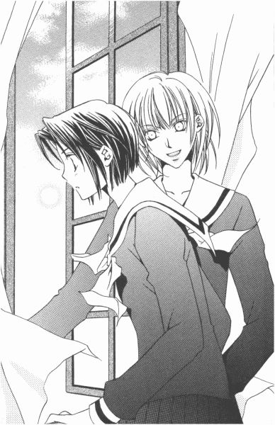

| [今野緒雪] マリア様がみてる06 | |
| 今野緒雪 | |
| (2015) | |
|
マリア様がみてる
ウァレンティーヌスの贈り物（後編）
今野緒雪
|
もくじ
ファースト デート トライアングル
オーダー
オードブル
メイン
デザート
紅いカード
紅薔薇さま、人生最良の日
あとがき

マリア様がみてる ウァレンティーヌスの贈り物（後編）
ファースト デート トライアングル
オーダー
１
それは、つい口が滑っただけのことだから。
別にＯＫもらえるなんて、多大な期待などしていなかった。
それなのに。
「デート？」
祥子さまは一瞬目を丸くして祐巳を見つめ（当たり前だ、言った本人も驚いているんだから）、それからすぐ笑顔を作って「それは楽しそうね」なんて言ったのだ。
「えっ!?」
祐巳は怯んだ。心の動揺を身体が忠実に表現するがごとく、のけ反って、せっかく集めた「びっくりチョコレート」を再び床にばらまきそうになった。
バレンタインデーの夕方。
新聞部企画の宝探しが終わって、その後まあいろいろあって、やっとここ、薔薇の館の二階で二人きりになれたまではよかった。
ちょっとしたアクシデントで、チョコレートの箱が爆発したことだって、予想外だったとはいえまあ目をつむろう。
問題は、その場を取り繕うために冗談めかして祐巳が口走ったことにある。
言うに事欠いて、チョコレートに当たりとはずれがある、だなんて。よくもまあ、すらすらと適当なことを言えたものだ。
その結果、当たりの景品が何かと問われ、「私とのデート券」なんて願望までが口から飛び出してしまったのだから。呆れるのを通り越して、もはや感心してしまう。
それにしても、意外だったのは祥子さまのリアクション。──というより、祐巳はリアクションの予想なんかしていなかったのだ。だって本当に思いつきで言ったことだったから。
しかし、そんなことは祥子さまはうかがい知らぬ事。
「いつ？」
「......えっと」
どうやら、本当にデートしてくれるらしい。これが社交辞令だったら、「楽しそうね」と言った後「そのうちに」と続くはずだった。
さて、困った。
祥子さまとデートできるのは飛び上がるほど嬉しいけれど、計画なんて何にも練ってやしないのだ。再三お伝えしている通り、たった今、出来心で言ってしまった言葉だから。
「じゃ。今度の日曜、いかがですか」
祐巳はまた、ついはずみでそう言ってしまった。
いつ、と問われてとっさに頭に浮かんだのは、新聞部の企画した宝探しの副賞である半日デート券。というわけで、申し訳ないと思いつつ、それをそのまま拝借してしまうことにした。祐巳の「お姉さまとデートしたい」願望に火をつけたのが他ならぬ新聞部の企画だったのだから、まあ、それは仕方ないといえなくもない。
「日曜日？ いいわよ」
祥子さまは断らなかった。
考えてみれば、祥子さまの隠した紅いカードが誰かに見つかっていたら、その日はデートという名目で半日拘束される約束だったから、カードが無効になった時点でスケジュールが空いてしまっていたのだ。
「どこに行くの？」
「......えっと。いろいろ考えてはいるのですが......」
しどろもどろ。
「ああ、そうだ。お姉さま、どこかご希望があったら──」
「別にこれといってないけれど。祐巳の行きたい所がいいわ」
あ、そういう答え方されるのが一番つらい。具体的にどこ行きたい、って言ってもらえた方が楽なんだけど。でも言い出しっぺはこちらだから、案の一つも出さないといけない。まずはこの場をどうにか乗り切らないと。口から出任せがばれて、デート自体もおじゃんになってしまわないとも限らない。
「......じゃ、明日にでも目的地をいくつかリストアップしてきます」
「そうね」
祥子さまは窓の外を見た。祐巳もそれを追って視線を向けた。日が落ちて久しいけれど、ちらちらと雪が降っているから何となく明るい。
「楽しみにしているわ」
椅子にかけていたスクールコートを手にとって、祥子さまはほほえんだ。
「帰りましょうか」
もう、下校時間をかなり過ぎていた。祐巳は、チョコレートの箱を手提げ袋に詰め込んでから、祥子さまの後に続いて部屋を出ていった。
階下にいたはずの白薔薇さまと志摩子さんの姿は、もうそこにはなかった。
２
手袋を教室に置き忘れてきたことに志摩子が気がついたのは、下足箱に上履きを戻した時だった。戻るべきか否か、一瞬迷った。外は寒いし、忘れ物をするのは余り好きではない。
でも。
「どうした？」
三年生の下足箱からお姉さまが迎えにきてくれたので、「いいえ」と言ってから急いで靴のスナップを留めた。
「寒いね」
昇降口を出ると、直接夜気が肌をさした。雪は降ったりやんだりといった感じで、積もりそうもない。折り畳みの傘は持っていたけれど、二人はささずに歩いた。植え込みの葉や、人の通らない道の端あたりにうっすらと留まった雪のベールが、光を反射させてとてもきれいだったから。
「そうだ。静からチョコボンボンをもらったんだ。ちょっと身体温めようか」
言いながら、ゴソゴソとコートのポケットを探っている。
「お姉さまは、少し鈍感なところがあります」
志摩子はため息を吐いた。
「どうして？ 志摩子にもあげるよ」
「そういうことを言っているんじゃありません」
「わかっているって。志摩子の前で、静の名前を出したことを言っているんでしょ。でも、いいじゃん。チョコレートもらったことは事実なんだしさ。それに、市販のチョコボンボンに罪はない」
さあさあ食べよう、とポケットから取り出した小箱を開いて差し出す。中には銀紙で包まれたチョコボンボンが五つきれいに並んでいた。約一つ分の隙間があるのは、たぶん静さまの前で包みを解いて食べてみせたのだろう。
「いえ。私が言っているのは──」
手振りで辞退しながら、志摩子は回り込むようにして白薔薇さまの顔を見つめた。
「私が言っているのは静さまの気持ちなんです、お姉さま」
「ん？」
「お姉さまのためのプレゼントを、私もいただいてしまったら。......それを知ったら、静さまはどんな気持ちになりますか」
「静の気持ち......」
白薔薇さまは立ち止まり、しばらくうつむいて考えて、やがて顔を上げて笑った。
「なるほど。そうだね、勉強になった」
チョコボンボンの小箱は、再びコートのポケットに戻された。
プレゼントの主の前で試食したのもやさしさなら、妹に遠慮して自分も食べずにしまうのもやさしさ。
志摩子のお姉さまである白薔薇さまは、少し鈍感なところはあるけれど、それ以上に繊細で、勘が鋭くて、そしてとてもやさしい人だった。
「偉そうに、すみません」
「いや。しっかり者の妹をもてて、幸せ者だと思っているよ、私は。これで心おきなく──」
「そんなこと言わないでください」
卒業、という二文字が出てくるのを恐れて、志摩子は白薔薇さまの言葉を阻んだ。
「私、お姉さまがいなくなったらきっと」
心の均衡が崩れて、バラバラになってしまう。志摩子は、最後までを言葉にすることができなかった。
「大丈夫だって。みんな志摩子のこと好きだよ。志摩子が思っているより、ずっとこの世界は生きやすい場所なんだって。志摩子は私がいなくなって、きっともっと強くなる。だから、私の役目はここでお終い。私がこの場所から居なくなるのは志摩子にとっての試練じゃなくて、二人の旅立ちなんだからね」
「とてもそんな風には思えません」
「思えるようになるよ、きっと。春が来て、夏が来て......、日々の生活が忙しくて、気がついたら私が居ないことの方が普通になる。志摩子は二年生になって、私たちの代わりに新入生が入ってくる。そうやって、リリアンの高等部はたくさんの生徒を送り出してきたんだよ」
「でも......！」
新入生の中にはお姉さまはいない。志摩子は、言葉を飲み込んだ。言っても仕方ないことを言って、困らせたくはなかった。
確かに、この一年で祐巳さんや由乃さんという貴重な友人をもてた。祥子さまや令さまとは、学年こそ違うが同じつぼみとして親しくしてもらえた。
でも、彼女たちは佐藤聖ではない。
新たに入学してくる後輩たちもまた、佐藤聖ではない。
この世の中で、目の前にいる佐藤聖はただ一人で。誰も代わりになんか、なれないのだ。
「どうしたの。志摩子らしくないね」
「すみません」
「謝ってばかり。さて、私はどうしたらいいのかな」
知らずにあふれてきた志摩子の涙を、白薔薇さまはそっと手で拭ってから言った。
「選挙の時みたいに抱きしめようか。お望みなら、キスでも何でもしてあげるよ」
「いいんです」
志摩子は首を横に振った。
白薔薇さまが自分のためにそこまで言ってくれた、それだけで十分だった。
二人は似ている。だから、あまり近づきすぎてはいけない。近づいて、相手に甘えてしまうことは、お互いの傷を舐めあうことに他ならない。
そういう意味では、白薔薇さまは志摩子の恩人といえた。くじけそうになった時、白薔薇さまがそこにいることで慰められた。互いに向かい合うことで、自分の存在を意識できる鏡のような存在だった。
だから志摩子の望みは、白薔薇さまにそこにいてもらいたい、それだけだった。姿が見られれば、いい。抱きしめてもらいたいわけではない。
「本当、どうしたんでしょう。今日はちょっと不安定みたい」
志摩子は、頬に残った涙の跡を左手で拭ってほほえみを作った。少し自嘲気味に。でも白薔薇さまは笑わなかった。
「手袋」
「え？」
「手袋どうした？ いつも着けているでしょ」
「ああ──」
思い出すのに時間がかかった。
「教室に忘れてしまったみたいです。宝探しとかあったから、夕方バタバタしちゃって」
「手、出して」
「は？」
「そのばたばた、の原因。きっと私だと思うし」
鞄を持っていない方の志摩子の左手を、白薔薇さまは早業で掴んで自分のコートのポケットに入れた。静さまのチョコレートが入っている左側ではなく、右のポケット。
「お姉さま」
「マーブルケーキはすごくおいしかった」
ポケットの中で志摩子の手をキュッと握ってから、白薔薇さまはゆっくり歩き出した。ポケットの中でつながっているから、志摩子も合わせて歩き出した。そんなに体温は変わらないはずなのに、白薔薇さまの手がとても温かく感じられた。同じ素材を使っているはずのコートのポケットも、なぜか自分のものより温かかった。
歩きながら、「卒業」とはあまり関係のない話をした。白薔薇さまが振る話題が主に食べ物に集中していたのは、お腹が空いているからに違いない。
マリア様の前まで来たところで志摩子が立ち止まろうとすると、白薔薇さまは少し強引とも思える動きで手を引いた。
「お姉さま？」
「今日は、よして」
答えを聞かず、黙々と歩く。まるで、一秒でも早くその場から離れたいとでもいうように。
「......」
何となく、白薔薇さまの心境がわかった気がして、志摩子は黙って従った。だから、マリア像の前で手を合わせるいつもの習慣を、今日初めてパスしてしまった。
志摩子の不安定がうつってしまったらしい。
校門を出てバス停に着くと、ホッと息を吐いて、それからやっといつもの白薔薇さまに戻った。
３
「まあね。私以外から一つももらっていないなんて、考えてやしなかったけどね」
由乃さんは、ため息をついた。
「この量って何？」
「......大量だね」
「そうよ大量。漁師だったら、令ちゃんと一緒に大漁踊りおどるところよ」
そりゃ、タイリョウ違いだ。けれど、突っ込み入れるとそこから愚痴が倍増されそうなのでやめた。
お祭り騒ぎの翌日の薔薇の館。
昼休み、つぼみたちは新聞部の三奈子さまと会食、と言えば聞こえはいいが、お弁当持参の反省会にクラブハウスまでお出かけしている。
で、そうなるといつものごとく祐巳と由乃さんが二人きりで。テーブルには、由乃さんが大型紙袋からぶちまけたチョコレートと思しき小さな包みの数、数、数。
「これ全部令さま宛」
「まあね。令ちゃんもてるから」
今度はおのろけかい。──しかし、やはり突っ込みは控える。由乃さんの「令ちゃんネタ」は始まると長くてしつこいのだ。
「......で、同じ立場の祐巳さんと慰め合おうと思ってきてみれば何？祥子さまは、祐巳さん以外のチョコは一つも受け取らなかったっていうじゃない」
「申し訳ありません。潔癖な姉で」
たまには、祐巳だってのろけてみたい。
「あら、言ってくれるじゃない。それなら、私のお姉さまはやさしすぎるのよ」
「ごちそうさま」
「こちらこそ」
二人はすました顔で、お互いに向かって手を合わせた。お弁当食べ終わっているから、まあそれは正しい表現ではある。
「で、どうして令さま宛のチョコレートが由乃さんの手に？」
「何でかなぁ。取りまとめて持ってきたのよね、令ちゃんの信奉者が」
「取りまとめ？」
「ほら、昨日つぼみたちは忙しかったじゃない。だから、令ちゃんに一々対応させるの悪いと思ったんじゃない？知らなかったんだけど、誰か窓口になって集めて保管していてくれたらしいんだわ。昨日の宝探しが終わった時点で渡そうと思ったらしいんだけど、令ちゃん即行で帰っちゃったから」
「ふむ」
「私に渡した、っていうのは、単に令ちゃんを捕まえられなかったからじゃない？私に手渡せば、間違いなく今日中に令ちゃんに届くもんね」
「そうか......」
それに、由乃さんを介したことによって、かえって由乃さんの目を気にする必要がなくなる、っていう利点があるな、と祐巳は思った。
由乃さんの本当の怖さを知らないにしても、やっぱり妹がいる人にチョコレート渡すわけだから、それなりの気兼ねってあるだろう。由乃さんにしたって、人目を気にして一対一でチョコの受け渡しされるより、十把一からげで「はい」って袋渡される方がよっぽどいいと思う。
しかし、年に一度の記念すべきバレンタインデー、そんなに事務的でいいんだろうか。
「いいんじゃないの？」
由乃さんはお弁当と一緒に持ってきたレポート用紙を開いて、何か表のようなものを書き始めた。
「いいの？」
「うん。だって令ちゃんに『チョコレート渡しましたからね』ってアピールできればいいわけ。白薔薇さまじゃあるまいし、誰も令ちゃんに多大な期待なんかしてないわよ」
言いながら由乃さん、プレゼントの数々を一つ一つ取り上げ、検査するみたいにじっくりと包装紙を見ては何やらレポート用紙に記入しだした。
「ああ、ありがたいなぁ。みんな、ちゃんと見えるところに名前とクラスを書いてくれている。取りまとめの人が、徹底してくれたんだわ。妹とはいえ、さすがに令ちゃん宛の手紙を開封するわけにはいかないもんね」
あらま、うちのクラスの子だ、なんてぶつぶつ言いながら何かを黙々と始めてしまった。
「あの、由乃さん？ いったい、何してるの？」
邪魔しちゃ悪いと思いつつ、祐巳は気になって尋ねた。
「え？ ああ、リスト作ってるの。令ちゃんの馬鹿が、ホワイトデーにはすべてにお返しするんだそうな」
作業を続けながら、由乃さんはまたため息をついた。
去年のバレンタインデー、令さまもまた一年生であったにもかかわらずいくつかチョコレートをもらったらしくて。もちろん令さまのことだから気持ちよく受け取って、ホワイトデーにはクッキーだかキャンディーだか知らないけれどもらった数だけ作ってお返しして歩いたとか。でもって、去年味を占めた人に去年うらやましく思った人が加わって、今年はこの大漁、もとい大量とあいなったわけだ。
どうやら由乃さん、令さまがモテモテだから憂鬱なんじゃなくて、この山盛りチョコレートのリスト作りにかける自分の労力と、一ヶ月後に令さまが律儀に作るであろうお菓子の事を考えて、うんざりしていたようだ。令さまみたいな懐の深いお姉さまをもつと、フォローする妹は大変である。
せめて作業のお手伝いしようと、祐巳がテーブルに散乱したプレゼントを名前が見えるように並べていると、突然。
「うわっ」
由乃さんが叫んだ。
「何？」
あわてて顔を上げると、由乃さんは手にした包みを見たまま石になっている。
「......嫌な名前、見ちゃった」
祐巳は「どれ」、って側によって見てみた。
「田沼ちさと？」
誰だっけ。
こんな時、パーソナルデータ不足が祟る。何となく名前は聞いたことがある。たぶん、一年生だと思うけれど、顔ははっきり思い出せない。
「祐巳さんにとっては、どうでもいい相手よ」
「──ってことは、由乃さんにとってのみ好ましくない相手なわけだ。......あっ！」
「お察しの通り。彼女が、令ちゃんのデートの相手」
昨日のこと思い出したんだろう、由乃さんは舌打ちして、歯ぎしりして、床踏みならして、ちょっとだけ奇声を上げて......と、とにかくすごくわかりやすい表現で「悔しさ」をアピールした。
由乃さんは、あと一歩というところまで詰めながら、令さまの隠したカードを見つけることができなかった。それを逆転勝利したのが、田沼ちさとさんたちのグループで。それだけでも悔しいのに、彼女たちが途中まで由乃さんを尾行していた人たちだったものだから、悔しさ倍増なわけである。
本当は、このプレゼントの包みをビリビリに破いたり握りつぶしたりしたいところだろうが、十六にもなれば「それはしてはいけない」という分別くらいついている。
「さて」
発散して気が済んだのか、由乃さんはライバルの名前を事務的に記して、プレゼントを紙袋に戻した。
「何？」
祐巳の視線に気づいて、由乃さんが聞く。
「メリハリついているなぁ、って感心していた」
「当たり前じゃない。身体に悪い物は溜め込んじゃだめよ。吐き出したら、もう二度と吸わないように向いている方向変えないとね。......特に今の私のは、どう考えても逆恨みだし。抱えていたところで、いいことないでしょ」
「すごい。わかっているんだ」
「そりゃね。自分とのつき合い、長いもん」
でも、誰彼かまわずこんなところ見せるわけじゃないから誤解しないで、って由乃さんが言った。それを聞いて、祐巳は少しだけうれしくなった。気を許しているんだよ、って聞こえたから。
当たり散らされてうれしいもないだろうけど、いつか紅薔薇さまが言っていた「友達は損な役回りを引き受けるためにいる」っていう言葉思い出して、「そういうものかな」なんて納得したりして。もちろん、そこには友情があるから許せるんだけど。
「由乃さん」
「何？」
「ずっと仲よしでいようね」
えへへ、と笑いかけると、不意討ちくらって対処に困ったのか、由乃さんは少し赤面して怒っているように言った。
「な、......何言うかと思えば、祐巳さんってば」
思いっきり視線をそらして、テーブルに集中。由乃さんたら、わざとらしくリスト作成を再開しちゃったりして。
「テレなくていいじゃない」
「テレてなんかないっ」
由乃さんは、顔を上げてにらみ返してきた。
「じゃどうして答えてくれないの。私、由乃さんが好きだから、いつか薔薇さまたちみたいにいい友達になりたいと思っているんだ。......それとも、私のこと嫌い？」
祐巳が尋ねると、由乃さんの険しかった表情がみるみる緩んで、真顔になったと思ったらこう言った。
「......嫌いなわけないじゃない」
「じゃ、好き？」
「祐巳さんね、どうしてそういうことテレもしないで言えるわけ？」
「それが祥子さまの前では言えないんだわ」
「えっ、私、令ちゃんにならいくらでも言える。何でも言える」
変わってるね、って同時に相手に向かって言うもんだから、またしても二人同時に吹き出した。タイプは違うけど、また結構気が合うんだ、これが。
由乃さんが、立ち上がって手を差し出した。
「よろしく」
祐巳も立ち上がって、手を伸ばす。
「こちらこそ」
テーブルの上に広げられたチョコレートの上空で、右手と右手ががっちりとつながった。
薔薇さまたちのような、大人っぽい友情にはまだまだ遠いけれど、せめて目標にして、いい友情を育めたらいい。もしこのままずっと薔薇の館の住人でいられたなら、由乃さんとは二年三年と長いつき合いになるのだから。
「友情を確かめ合ったところで、ちょっと聞いていい？」
握手したままの態勢で、祐巳は言った。
「何？」
「デートのことなんだけど」
「何なの、それ」
由乃さんはまず怪訝そうな顔をしてから、うんざりとつぶやいた。
「嫌なこと思い出させないでよ」
４
「で？ 教えてもらえたの？」
五時間目と六時間目の間の休み時間、蔦子さんはカメラと眼鏡を机の上に並べて、専用の布でそれぞれをきれいに磨いていた。
「質問には答えてくれたけどね。あんまり役に立たなかった」
「だろうね」
「どうしてわかるの」
「祐巳さんさ、どうしていつも、こう、リサーチする相手を間違うのかな」
「へ？」
「へ、じゃないよ。由乃さんと令さまっていったらね、本当の姉妹みたいなもんよ」
「本当の姉妹」
同じ親から生まれて一緒に住んでいる人たち、って言いたいらしい。確かに、二人は従姉妹だから血はつながっているし、同じ敷地内に建つ家のお隣さん同士でもあるわけだから、かなり近いものはある。
「デート、って辞書で引いてごらん？ まあ、日付とか時代とか、そういう意味もあるけど、今私たちが使用しているのに一番近いニュアンスでいったら『会う約束』って奴よね」
蔦子さんは眼鏡なしなものだから、見慣れない顔。おまけに目を細めているから、何だか別人と話しているような気分になる。
「......デート」
ｄａｔｅ。
試しに自分の机の中から英和辞典持ってきて引いてみたら、確かに「会う約束」ってある。ちなみに、一緒に「逢い引き」なんて言葉も。
逢い引き。
今度は国語辞典。取りに行こうとしたら、蔦子さんが自分のを貸してくれた。編纂した人が言うには、「愛し合う者たちが、ひそかに会うこと」なんだって。そこには今度、蔦子さんお気に入りの「ランデブー」という言葉がくっついていたけれど、生憎と仏和辞典が近くになかったのでそこで断念した。
「おわかり？」
縁なし眼鏡を拭き終わった蔦子さんは、いつもの顔で笑った。
「デートとは本来、事前に日付とか決めて、示し合わせて出かけることをいうわけよ。祐巳さん、お母さんと出かけるのをデートっていう？言わないよね」
「ああ、そうか。由乃さんと令さまは、家族みたいなものなんだ」
「その通り。あれだけ仲がいいんだから、一緒に出かけることはあるでしょう。もちろん、計画たてたり外で待ち合わせたりもするだろうけど、免疫できちゃって、初めての『二人でお出かけ』にビビッている祐巳さんのアドバイザーになんかならないわよ」
「なるほど」
確かに、由乃さんが不愉快きわまりない態度ではあるが答えてくれた内容が、祐巳の参考にならなかった理由っていうのは、そこのところにあったのだ。
「どんな格好していく？」って聞けば、「そりゃ、行く場所によるでしょ」って答えるし。
「じゃあどういう所に行く？」って質問すれば、「そもそも、どこか目的があるから出かけるんじゃないの？」って、逆に切り返されるし。由乃さんたちの場合、「会う」という目的のために出かける必要がないのだから、どこに行ったらいいのかなんて悩む必要がなかったのだ。
ファーストバレンタインの後は、ファーストデート。
令さまとのファーストの大概を大昔に済ましてしまった大御所の由乃さんに聞いたのが、そもそもの間違い。
「私が予行演習してあげてもよかったけど、次の日曜日が本番じゃ、間に合わないしね」
蔦子さんはやさしい言葉をかけてくれたけど、彼女の言うように何しろ祐巳には時間がなかった。
「ちなみに、祐巳さん今までデートのご経験は？それを参考になさったらいかが？」
フラッシュなしでシャッターを切る。撮るときは言ってよ、っていつもお願いしているのに、蔦子さんはあまり守ってくれない。
「白薔薇さまとの初詣がデートと呼べるものならね」
「あー、それ。絶対に盗撮したかった。何で呼んでくれなかったのよ」
「そんなこと今更言われても」
堂々と「盗撮」なんて言っている人、恐ろしくて呼べますか。どこかでカメラ構えられているかと思うと、気が休まる暇がなくておちおち初詣だってできやしない。
「わかった。私が考えてあげよう。最高のデートコース！」
蔦子さんはカメラを机に戻して、「名案」とばかりに手を叩いた。
「......こっちもわかった。その最高のデートコースに張り込んでいて、隠し撮りするつもりでしょ」
「ははは」
祐巳の推理は図星だったらしい。
「ははは、じゃない。もういいよ」
じき六時間目が始まるから、祐巳は自分の席に帰ろうと回れ右した。それを、蔦子さんが手首を掴んで呼び止める。
「まあ、待ちなって」
「何、まだ名案があるの」
「別口でね。祐巳さんにとっては、聞いて損のない話」
損がない、と聞いて、それなら、と引き返す。蔦子さんは、この場合の適当なアドバイザーを教えてくれるという。耳を拝借というから、祐巳は蔦子さんの口もとに耳を近づけた。
「志摩子さん」
「へ？」
「試しに聞いてごらん。彼女も日曜日に初デートなんだから」
「あっ......！」
すっかり忘れていた。
志摩子さんは何と、白薔薇さまを挟んでライバル関係にある蟹名静さまとデートしなければならなかったのだった。
もちろんファーストデート。
その上、企画に新聞部が噛んでいる。
これは聞かない手はない、と祐巳が大きくうなずいたところで六時間目のチャイムが鳴った。
５
「そう言われてもね」
志摩子さんは事情を聞くや否や、「ご期待に添えそうにない」って顔をした。
六時間目の授業、ホームルーム、掃除と、かなり待って、そうしてやっと質問できたっていうのに。祐巳は、志摩子さんが薔薇の館に行こうとしているところを廊下で捕まえて、無理矢理階段の踊り場まで引きずってきたのだ。
「副賞のデートっていうのはね、すでにコースが決まっているわけじゃないのよ。優勝者とつぼみが相談して、これから行く場所とかは決めるの」
昨日の今日で疲れが残っているらしく、志摩子さんは何となく気怠い雰囲気が漂っていた。
「そうなの？」
「ええ。軽い気持ちで引き受けたわけではないけれど、これがいろいろ大変なのよ」
密やかなため息。志摩子さんのお疲れの原因は過去ばかりではなく、今後のことを考えなければいけないという気疲れも多分に混じっているようだ。
新聞部の部長、築山三奈子さまはやっぱりただ者ではない。
大々的に打ちだしたバレンタイン企画、一回だけの特集で済ませてしまうほど気前がよくはなかった。予備予算つぎ込んでまでもやりたかった企画なんだから、その分に見合う見返りは当然要求するだろう。
「私たちより、優勝者の方が大変かも知れないわ。デートの模様をレポートしないといけないんですって」
「えーっ」
レポート提出なんて。そんな重い課題抱えながらだったら、せっかくのデートが楽しめないじゃない。紅いカード見つけだしたら、ご褒美にデートを思う存分楽しめるものだって勝手に考えていたけれど、ご褒美って結構大変そう。特に祐巳なんかはレポートって大の苦手だから、つくづくあの時カードを見逃していてよかったって思う。
「三奈子さま曰く。惜しくも優勝を逃した参加者たちに、おすそ分けするのが優勝者の務め。......というのは建前だとは思うけれど」
「じゃ、本音は？ やっぱりこの企画だけで何号も発行するつもり、とか」
「それもあるかもしれないけれど。生徒に現金渡して、デートしていらっしゃいっていうのは、まずいと思ったんでしょうね。つぼみは費用の収支を合わせて報告し、優勝者はその日のレポートを提出する義務が課せられたの。一応、デート費用は予算から出すわけだから」
「費用......？ うわっ!?」
祐巳は突然大きな声をあげた。踊り場にいたから、階段の上の方まで駆け上がった声が反響した。
「どうしたの？」
うわっ、うわっ、うわっ、うわっ.........。自分の声の木霊の中、祐巳はその場にしゃがみ込んだ。
「......何たる間抜け」
「え？」
さっぱりわけがわからないであろう志摩子さんも、しゃがんで祐巳の顔を覗き込んだ。
「今まで、そのことについて少しも思いつかなかったんだわ、私」
「そのこと、って？」
デート費用。
そもそも、宝探しの副賞であるところの半日デートに触発されて祥子さまをデートに誘ったけれど、実際優勝して手にした権利でもなんでもないわけで。つまりそれは私的で自主的なもので、だからこそそれに関わる一切のことはすべて自分で負担しないといけないのだった。
行く場所しかり、費用しかり。
誘った手前、自分が出すか、それとも割り勘か。いくらくらい必要なんだろう。どこから捻出すべきだろう。
「ああ。もう」
考えただけで、頭割れそう。
そもそも、そういうお金の話をすること自体、ロマンティックぶちこわしだから避けたいっていうのに。特に、その、祥子さまとの間では。
「ところで。費用って、いくら出るの？」
こうなったら、もう全部聞きだすしかないでしょう。それでもって、参考になる部分だけピックアップして、計画たてる。何しろ、こちらはデータ不足なんだから。
「それが、三千円なのよ」
「さんぜんえん？」
夏目さん三枚、ってことだ。
「一人じゃなくて、一組？」
「ええ」
志摩子さんは背中を丸めたままうなずいた。
三千円。
本格的なデートしたことないから、それが多いのか少ないのか、祐巳にはさっぱりわからない。
「少なくとも、ディズニーランドには行けない金額だよね」
「映画みたら、お昼代でないわね」
志摩子さんにとって、デート＝映画らしい。でも、確かにファーストデートという言葉の響きには、そういうイメージがある。それから喫茶店。遊園地もなくはないけれど、今回は予算の都合でパスだし。
だけど。定期券で行ける範囲の映画館で映画みて、それで「さよなら」ってわけにもいかないと思う。映画鑑賞会とは呼べても、デートとは呼べないだろう。
そうなると、どうするか。
「取りあえずは、静さまと相談することになると思うけれど......」
志摩子さんは、立ち上がってスカートの裾を軽くはたいた。一人踊り場でしゃがんでいるのも何なので、祐巳も「よいしょ」と腰を上げた。ふくらはぎが、しびれてジンジンいっている。
「大丈夫？」
志摩子さんは手を貸してくれたので、ありがたく身体を支えてもらいながら、階段の手すりに掴まった。
祐巳は肩越しに、志摩子さんの白いため息が見えた気がした。
「志摩子さん、気が重い？」
すると志摩子さんは、悪いところを見られてしまったというように、「あら」と言って微笑した。
「そういうのとも違うの。静さまのこと、嫌いというわけではないし。ただ──」
「ただ？」
「静さまがどういうつもりでいらっしゃるのか、私には想像つかないだけで」
力になってあげたいけれど、それは、祐巳にも想像がつかないことだった。
６
「どういうつもりか、ねぇ」
静さまは、ちょっと意地悪そうな顔を作って笑った。
「祐巳さん、誰の差し金で来たの？ 志摩子さん？それとも祥子さん？」
どきっ。
「いえ、別に。誰の、っていうわけじゃ」
あわてて手を胸の前で激しく振り、祐巳は力強く否定した。
「あら、そう？」
「ええ、もちろんです。静さまったら、差し金なんて人聞きの悪い」
ほほえむつもりが愛想笑いになってしまう。言っていることは偽りではないけれど、やっぱりちょっと後ろめたいのかな。冷や汗がでる。
志摩子さんと別れて、教室に鞄とかコートとか取りに戻って、一階の廊下で今まさに帰ろうとしている静さまを見つけちゃったものだから、思わず追いかけて昇降口で捕まえた、それだけ。だけど正直いえば、志摩子さんのため息がなければ、静さまを呼び止めたりはしなかっただろう。
しかし静さまは、深く追及しなかった。「まあいいけれど」と機嫌よく笑う。さっきはこういう風に笑いたかったんだけど、と祐巳はちょっと複雑な気分になった。
下校する生徒が、二人の横を通り過ぎる。邪魔にならないように、締め切りの扉の陰に寄ってから静さまは最初の質問の答えらしきものを口にした。
「どういうつもりも何も、ないんじゃない？ 私だって神様でも魔法使いでも超能力者でもないんだから、志摩子さんがカードをどこに隠したかなんて知らなかったわよ、もちろん。だから見つけたのは単なる偶然。たまたま、ってことよ」
「はあ」
志摩子さんが隠した白いカード。委員会ボードに張り出されていた。後から聞いた話だけれど、祥子さまのカードは土を掘って埋めるという作業に時間がかかるために、早朝祥子さま自らの手で隠されたけれど、令さまのカードと志摩子さんのカードは、宝探しが始まるギリギリに新聞部の一年生が隠しにいったという。参加者を中庭に集合させて説明をしている間に、ということだ。だから、もちろん宝探しに参加していた静さまには、志摩子さんが隠す現場を目撃するチャンスはない。
「私が疑問なのは、そもそもどうして宝探しに参加しようなんて思ったか、なんですが」
「そうねぇ。一言でいうなら、楽しそうだったから、かしら」
「楽しそう、ですか」
「楽しそう、でしょ？ 私はね、こういう学校のお祭り騒ぎに飢えているのよ。話さなかった？今年のバレンタインデーこそはいい思い出作って、イタリアに持っていくんだって」
そういえば、ずっと生活が歌うこと中心だったから、学園祭とかでもクラスの出し物になかなか参加できなかったんだっけ、静さま。じゃ、別につぼみの誰かとのデートがお目当てではなくて、ただみんなと一緒に騒ぎたい、って。そういうことだったのだろうか。
でも、だったら。無難なところで、同学年の祥子さまや令さまのカードを探すとか。たまたま見つけたと言うなら、見なかったことにして通り過ぎるなりして、その権利を志摩子さんのカードを欲しがっている誰かに譲ってあげればいいのに。志摩子さんは一年生だけれど、つぼみとして人望もあるし人気もある。同級生の中でも憧れている人はいるだろうし、上級生だって妹にしたかった人は多いはず。
「私が志摩子さんのカード見つけたら大騒ぎになるだろうな、って思ったから、最初から白いカード狙いだったんだけれど。まさか本当になるとは思わなかったわ」
「......大騒ぎでしたね」
大騒ぎにもなるよ、って祐巳は心の中でぼやいた。だって、生徒会役員選挙で志摩子さんを押しのけて薔薇さまになろうとしていた人が、志摩子さんとのデート券をゲットしたなんて。もう、わけがわかんない。
「で、私は大満足」
静さまは鞄を抱えていない方の右手で、ピースサインを作った。
「じゃあ、志摩子さんとのデートは」
「もちろんするわよ。すごく楽しみ」
この調子じゃ、祐巳みたいにそそっかしくなくても、静さまは志摩子さんを好きだったんじゃないかって勘違いする人が増えそうだ。
ごめん、志摩子さん。──祐巳は心の中で手を合わせた。
静さまという人は、まったく何考えているんだかわからないお人だった。
オードブル
１
日曜日。午前十時四十分。
ＪＲ線のＫ駅の駅ビル二階側の改札口を出た所に、祐巳の姿があった。そしてなぜか隣には、小型カメラをまるで身体の一部のように手にした少女の姿。──そう、もうおわかりであろう他称「カメラちゃん」こと武嶋蔦子女史だ。
休日ともなると、この辺りは待ち合わせの人たちでごった返している。Ｋ駅にはいくつかの改札があるんだけれど、一番寒くなさそうという理由で祐巳はここを選んだ。それに狭いからすぐに相手を見つけやすいかなぁ、なんて。ここまでの混雑を、予想していなかったから。
「あのさ、待っていたって無駄だって。祥子さまはあと二十分しないと来ないよ」
約束の時間は、十一時。時間に遅れる人ではないけれど、興奮して早く家を出てくるような人でもない。そう、今日の祐巳のように。
「私のことはお気遣いなく。それに祥子さまの姿を見つけたら、すぐに祐巳さんの側から離れてあげるから」
それで、陰からカメラをパシャリ。蔦子さんの考えていることなら、お見通しなんだ。
「そもそも、どうしてこの場所がわかったのよ」
祐巳は誰にも言っていない。祥子さまだって、言いふらすようなタイプでもない。
「白状すると、祐巳さん見つけたのはただの偶然。本当は白と黄色のデート見物なんだわ」
「へっ？」
「これは内緒の話だけどね」
蔦子さんは声をひそめた。しかし、内緒の話を他言してしまっていいのだろうか。
「新聞部の三奈子さまに依頼されたのよ。一枚ずつでいいからツーショット写真を撮ってきてくれないか、ってね。あっ、優勝者はデートの模様をレポートして提出させられるって話は聞いている？」
「うん」
祐巳はうなずいた。志摩子さんからの情報で、その辺は把握している。
「そのレポートは、『リリアンかわら版』でのデート特集で発表されるわけよ。その場合、証拠写真があった方がよりリアルでいいじゃない。新聞部の部長も、きっと今頃は使い捨てカメラ握ってこの街を徘徊しているよ」
事前にデートコースを聞き出せなかったから、新聞部数人が出張してきているらしい。蔦子さんにお声がかかったのは、「無償でも喜んでやってくれそうだから」だそうだ。しかし、それを本人が得意げに言ってどうする。
「ということは、令さまや志摩子さんたちには内緒で？」
「邪魔しちゃ悪いでしょ。新聞に載せる前には、ちゃんと了解とるよ」
「うーむ」
そんなんでいいのかな。ちょっとまずいような気もする。抗議したかったけれど、相手は弁論部からお声がかかるほどの蔦子さんだし。口八丁で、うまく丸め込まれてしまいそうだ。
で、話題を変えた。
「どうしてＫ駅なの」
「定期券で行ける、半日飽きずに回れる、っていう条件をクリアする街っていったらね。真っ先に浮かぶ場所はここでしょう」
「なるほど」
徒歩通学の令さまは定期持ってないけれど、バス一本で来られるし。何より全部で三千円なんだから、近場っていうのは重要だ。
「つまり、祐巳さんが一生懸命考えて絞り出した現場はね、誰もが考えつく場所だったわけ」
「......しまった」
それじゃ、この街を歩いている間に、知っている顔と何度もご対面しちゃうなんて、こっ恥ずかしい出来事に遭遇する可能性があるわけだ。それも互いにデート中、......でなければ盗撮組、だなんて最低。
「──ばかりじゃないわよ。Ｋ駅なんて、うちの学校の生徒にとって庭みたいなものよ。たまたま休みでショッピング。あるいは、ヤマはって見物しようなんていう生徒も」
「やめてよ」
「もちろん。祐巳さんと祥子さまが今日Ｋ駅周辺でおデートなんて情報、知っている人はそういないけれどね。でも 黄薔薇のつぼみのところと 白薔薇のつぼみのところが今日決行ってのは周知の事実。同じ日にしたのがまずかった」
「巻き添えで見せ物になるって？」
「ご来場のリリアン女学園の皆さまに、出血大サービスだわねぇ」
「うわぁ」
祐巳は顔を手で覆った。思わずしゃがみ込みそうになったけど、辛うじて抑えて周囲を見回す。
今すぐそこの公衆電話に飛びついて、祥子さまの家に電話したい。待ち合わせ場所変えましょう、って。しかし、時計を見ればもはや十時五十分。いくら何でも、祥子さまが家にいるはずもない。
「ま、いいじゃない。見物人も、あからさまに接触してきやしないって」
蔦子さんは、ガックリと落ちた祐巳の肩をポンポンと叩いた。いいけどね。慰めにもならないような慰めの言葉なんてくれなくても。
「おーっ。ナイス・シャッターチャンス！」
蔦子さんは突然叫んだかと思うと、駅ビル一階の広場みたいになっている所に向かってシャッターを切った。ここは吹き抜けになっているから、身を乗り出せば一階が丸見えなのだ。
「何事？」
祐巳が問いかけると、蔦子さんはちょっとお取り込み中って感じで、シャッター切りながら答えた。
「 黄薔薇のつぼみのご登場よ。さっき田沼ちさと嬢の姿が広場にあったから、チェック入れておいたんだ」
どうやら蔦子さん、改札はついでで、本命は広場を押さえておくためにこの場所に陣取っていたらしい。田沼ちさとさんに丸見えの場所にいたら、警戒されちゃうと考えたわけだ。
「さて、接近してもう一枚」
蔦子さんはバイバイって手を振って、階段を下りていった。上から覗いていると、広場に入ってきた令さまにちさとさんが近づいて、ちょっと緊張気味に挨拶しているところだった。
今日は、わざわざありがとうございます。
いやいや、こちらこそ。楽しもうね。
──なーんて。そんな言葉が聞こえてきそうな雰囲気だ。
ちさとさんは、この寒いのにコートを脱いで、すごく可愛い赤と白とピンクで構成されたフリフリのワンピース姿で待っていた。このデートにかける気合いが、着ている物からもビシバシ感じられる。
それに引き替え自分は──、と祐巳は思った。昨日の晩、とっかえひっかえ洋服出してファッションショーやったというのに、結局セーターとジーパンといつものダッフルコートだ。
お姉さまとお出かけだと知ると、お母さんはスーツでもワンピースでも着物でも何でも貸してくれるって言ってくれたけれど、普段着慣れていない物というのは、本当にどうしようもなく似合わないものなのだ。
それにすごくおしゃれして祥子さまに会うのって、うまく言えないけれど妙に恥ずかしい。全力注いで来ました、って丸見えなのはちょっと見苦しいかな、って思ったのだ。
（だけど）
ちさとさん見てたら、考えが変わった。一生懸命頑張って洋服選びましたっていうのも、結構可愛らしいものだった。
令さまが、男性みたいにちさとさんにコート着せてあげて、エスコートして駅ビルを出ていく。少し離れて、それを尾行する蔦子さんの姿も見えた。
「祐巳」
背後から声をかけられ、あわてて振り返ると、そこには祥子さまの姿があった。
「どうかして？」
祐巳の真似をして、一階を覗き見る。何となく、祥子さまからはいい匂いがした。
「あ、あの、今」
でも、すでに顔見知りの人々は消えている。
「今？」
「ちょっと知り合いに似ていた人を見つけたもので」
祐巳は言葉を濁した。だって、蔦子さんから聞いた話をわざわざ祥子さまの耳に入れる気はしない。やっぱり楽しくないでしょう、どこかで誰かが見ているかも知れないデートなんて。
「お知り合い？ 追いかけてご挨拶しなくていいの？」
「いえ、たぶん人違いですから」
「そう？」
少しも疑うこともなく、祥子さまはやさしくほほえむ。こうしていると本当にマリア様みたいなんだけどな、と思った。でも祐巳は、ヒステリックに叫ぶ祥子さまも嫌いではない。
「ごきげんよう」
「ごきげんよう」
遅ればせながら、二人は朝のご挨拶をした。
ゴージャスなドレスでも着てこられたらどうしようかと思ったけれど、祥子さまはクリーム色のタートルネックのセーターとグレーの膝下丈のタイトスカートというシンプルな出で立ち。でも決して地味じゃなくて、全部いい物ですって一目見てわかる。軽く羽織った黒いロングコートも、さりげなく首に巻いた、緑とか金とか白とかで模様が描かれているスカーフも、黒い革のパンプスも──。おまけに中身がすごいんだから、外見が引き立つのは当たり前なんだけど。
「そうそう、忘れないうちに」
祥子さまは革の手袋を外して、黒い手提げバッグから白い和封筒を取り出した。
「本当に、これでいいの？」
「はい」
祐巳もショルダーバッグから茶封筒を出して、二人の封筒の中身を一緒にした。
千五百円と千五百円を足して、中身は三千円也。これが今日の、二人のデート費用である。
「まったく、祐巳は頑固なんだから」
「お姉さまこそ」
二人は取りあえず改札とは逆の方向に歩きだした。
割り勘で千五百円ずつ。そう決着つくまでが、結構大変だった。
色々悩んだけれど、祐巳はやっぱり自分が誘った手前、デート費用は自分が出すのが当然だと結論づけていた。
しかし祥子さまは、お姉さまである自分が払うのだと言って聞かない。
そもそも、チョコレートの景品という話なのだから、当たりを引いた祥子さまが出費するのは間違いだ、と祐巳が主張すれば、祥子さまはチョコレートのお礼代わりだ、と引かないし。
で、結局中をとって割り勘ということで双方手を打った。チョコレートのお礼はというと、ホワイトデーに改めて、ということで一応丸く収まったのだ。
「ああ、ちょっと寄っていいかしら」
祥子さまは本屋に足を踏み入れた。
「辞典買いたいの」
「辞典ですか」
「どうしてそんな顔するの。個人的な買い物は、三千円とは関係ないでしょう？」
「そりゃそうですけれど」
「けれど？」
「今買ったら荷物になりますよ。本屋はたくさんありますから、帰り間際にお買いになったらいかがです？」
実は祐巳もお母さんに買い物を頼まれている。でもデートに持ち歩くような物ではないので、祥子さまと別れてから買って帰る予定である。
「そうね。あなた、結構頭がいいわね」
それは、普通誰でも考えられることだ。もしかして、祥子さまってショッピング慣れしていないのだろうか。例えば、小笠原家御用達のお店の人が、お屋敷まで品物届けてくれるとか。それとも、外での買い物にはお付きの人が必ず同伴して、荷物持ってくれるとか。
「いいわ。じゃあ、帰りにしましょう」
というわけで、二人は書店に一歩踏み入れた足を再び通路側に戻す。
（ん......？）
踵を返した時に、祐巳は目の端に誰か知った顔が映った気がした。
「どうしたの？」
数歩先を歩きはじめた祥子さまが、振り返って尋ねる。
「いいえ」
祐巳は首を横に振って、追いついた。もう一度そちらに視線を向けても、その人はもうその場にいなかった。
あれは、誰だったろう。
チラリと見ただけだったけれど、確かによく知っている人だった気がする。
しかし、令さまでも、ちさとさんでも、蔦子さんでもなかった。
あれは、誰だったろう。
２
「どうして、祐巳さんたちがいるのよ!?」
由乃は専門書の書棚の陰で、一人つぶやいた。
Ｋ駅駅ビルの書店。
こちらの姿を見られただろうか。いや、すぐに隠れたから大丈夫だと思う。いちいち買い物客の顔を観察しながら歩いている人などいない。いるとしたら、人を捜している人かよっぽどの暇人。
（......どっちも私じゃないのよ）
由乃は肩をすくめて苦笑した。まったく、自分で自分が嫌になる。いったい、何のためにこんな所にいるのだろう、と。
まだその辺をぶらぶらしているかも知れないから、今すぐは書店を出ていけない。時間つぶしに化学の薄っぺらい本を棚から出して、パラパラめくる。苦手分野だ。何が書かれているか、さっぱりわからない。
祐巳さんたちとのニアミスはどうにか回避できたとして、さて、これからどうしよう。
出かける口実の文庫本は、すでに買ってしまった。こんなことなら、何軒か回って一番きれいな本を探せばよかっただろうか。
（ばかばかしい）
無茶苦茶なアイディア。人気作家の新刊本なんだから、どの本屋でも今荷をほどいたばかりみたいに背表紙のピシッと伸びた本が、新刊コーナーにずらっと平積みされていることだろう。
令ちゃんが誰かとデートするって考えただけで、居ても立ってもいられなくて家を出た。由乃は焼き餅なんてやいてないよ、って余裕みせてやりたくて、令ちゃんより先に家を出てＫ駅行きのバスに乗ったのだった（おかげで駅ビルが開く前に着いてしまった）。
（マゾか）
いつも攻め攻め攻めの自分が、今日に限ってどこか弱気。令ちゃんはどこに行くか教えてくれなかった（聞きたくもなかった）けれど、たぶんＫ駅辺りが妥当かな、って予想していたからわざわざバスに乗ってまで文庫の買い出しにきたのだ。
令ちゃんと例の、──田沼ちさとさんだっけ？──彼女が仲よく歩いたりしゃべったりしているところを確認してどうしようというのだろう。
（でも、ほら令ちゃんて剣道の話題とかになると夢中になって一人で語っちゃうし。そうなったらちさとさんはついていけなくてお気の毒だから）
だから？
自問する。だから心配で見にきた、って？
それはやっぱり口実でしかない。
由乃は素直に認めた。これは嫉妬だ。それ以外の何物でもない。
いつの間にか慣れすぎていた。令ちゃんはいつでも自分一人の「お姉さま」であって、令ちゃんの隣という定位置にいていいのは自分だけだって。『黄薔薇革命』の時だってそうだ。ロザリオを返して事実上破局したとはいえ、そんなことでだめにならないって信じていた。矛盾しているけれど、信じていたからこそ一度姉妹関係を解消したのだ。
（嫉妬。嫉妬して......何が悪いか）
しかし認めたからといって、結局状況は何も変わらない。二人を探し出し、間に割って入って邪魔するわけにもいかないし。
いや、一方的に見かけるだけならまだましだ。こちらが無防備な時に、どこかでバッタリなんて事にでもなったらどう映るだろう。まるで自分が嫉妬にかられて尾行していたみたいに見えるに決まっている。
それは困る。そんな事態になってしまったら、もともと大した高さには置いてないプライドなんて、簡単に引きずり下ろされてズタズタだ。
（帰ろう。帰って買った文庫読もう）
うん、と一人うなずいて歩き出す。五歩あるいた所で、手にしたままの化学の本に気がついたので棚に戻った。
その戻った数歩が命取り。
「......由乃......さん？」
「えっ!?」
すわ、バッタリが現実になったか、と身構えた。けれど、そこには令ちゃんの姿もちさとさんの姿もなかった。また、祐巳さんたちでもない。
「ねー、どうしてこんな所にいるの？ やっぱり、由乃さんも令さんたちのこと気になって偵察？」
私服だからすぐにわからなかったけれど、ポケットからメモ取り出して取材態勢になったところで、それが新聞部の部長であることを理解した。
しかし、何だ。変装のつもりなのか、スキー以外では見かけないようなボンボン付きの三角形の帽子被って、いかにもって感じの黒縁伊達眼鏡かけて。かえって目立つだろう、って教えてあげたかったけれど、......やめた。
そもそも、この人がバレンタインに引っ掛けてカード探しなんか企画するから、令ちゃんが好きでもない子とデートなんかしなきゃいけなくなったんだ。
「残念ながら興味ありませんから、私」
まず化学の本を棚に戻してから、由乃は余裕のほほえみを作って答えた。
「あらあら、やせ我慢しちゃって。そういえば、由乃さんは最初から『反対』『反対』って叫んでいたものね。焼き餅焼いて、当然よね」
三奈子さまは、一人で結論づけて「うんうん」とうなずいた。
「焼き餅ですって──」
由乃は拳を握りしめた。さっき自分で認めたけれど、それを改めて他人に指摘されたくはない。それに何、その同情するような表情。三奈子さまってば、本当に他人を怒らせるのがお上手ですこと。
しかし、ここで挑発に乗ってはいけない。こっちが少しでも叫いたり暴れたりしたら最後、それが誇張されて『リリアンかわら版』に書かれてしまうに決まってる。
『スクープ！ 黄薔薇革命第二章。 黄薔薇のつぼみの妹、嫉妬のために大暴れ』──嫌だ嫌だ、タイトルまでが目に浮かぶ。
「誤解ですわ、三奈子さま」
取りあえず、ニッコリ。
「私、お姉さまが今日どこでどのように過ごすかなんて、存じませんのよ。......まあ、この街でしたの？」
「またまた。由乃さんもご冗談きついわ」
「いえ、本当に」
キツネとタヌキの化かし合い。上品な言葉を甲冑にして、相手の真意を探り合う。
「じゃあ、なぜに本日はＫ駅までお出かけに？本屋なら、由乃さんの家の側にあるでしょう？」
「そ、それは」
しまった。「本を買いにきた」というのは切り札だったのに、先回りされてしまっては使えない。
「祐巳さんたちに誘われて」
滅茶苦茶な言い訳が口から飛び出してしまった。
「祐巳さん？」
「ええ。祐巳さんが祥子さまとお出かけになるということで、暇ならご一緒しましょう、って誘われて出てきましたの」
「祐巳さんと祥子さん!?」
三奈子さまの目の色が変わった。
「あっ！」
またしても「しまった」だ。今度はかなり大きな失言。今更口を押さえたって、遅い。
犬が飼い主の声を聞いて耳がピンと立つみたいに、三奈子さまの目に見えないアンテナが立った。
祐巳さんと祥子さまは新聞部の企画した半日デートとは無関係だから、三奈子さまはその事実をまだ掴んでいなかったのだ。
「で、二人は今いずこに？」
「えっ。あっ」
一難去ってまた一難。
「ちょっとはぐれてしまって。きっと、その辺りにいるとは思うのですけれど」
かなり苦しい言い訳。しかし、三奈子さまは疑っていなかった。
「祐巳さんと祥子さんが......」
噛みしめるようにつぶやいている。彼女の関心は、完全にそっちに移ってしまった。嘘を言うときには、ほんの少し真実を混ぜるといい。誰かがテレビで言っていたけれど、それって本当だ。
（ごめん、祐巳さん）
心の中で拝み倒した。我が身可愛さに、とんでもないことを口走ってしまった気がする。
覆水盆に返らず。
言ってしまった言葉は、もう口の中に戻すことはできない。といって、このまま祐巳さんや祥子さまの話題を引きずったままでいていいはずはない。
「ところで、そういう三奈子さまは今日はどのようなご用事で？」
取りあえず、だめもとで由乃は別の話題を振ってみた。
「先ほどの話からすると、志摩子さんや私のお姉さまのデートを覗きに......いえ、見物しに......もとい、参観しにいらしたような──」
しかし、言葉を選ぶのって難しい。三奈子さまの行為はピーピングさん家のトム君ギリギリだから。
「ええ、まあ」
三奈子さまは、あやふやにうなずいた。どうやら彼女も、先ほどは少々口が滑ったらしい。
「それで？ どちらかでお見かけになれました？」
「それが残念ながらまだ」
「そもそも。この街に来ているのかしら？」
「その件に関しては、自信あるの」
あらら、随分と自分の勘を過信していらっしゃること。──由乃は心の中でつぶやいた。その勘が正しかったからといって、この若者でごった返した街で、何のヒントもなく二組の少女を捜し出すっていったら至難の業だろうけれど。
「ご健闘祈りますわ。でも三奈子さまがお探しの宝物は、カードではないので動き回るから大変ですわね」
別れ際、思いっきり皮肉を込めて言ってやった。
「由乃さんも。はぐれた祐巳さんたちに会えるといいわね」
返された言葉は、三奈子さまの意図はともかく、由乃の胸に目に見えない棘がグサリと刺さってしばらく抜けそうになかった。
３
バレンタインデーの終わった街は、すでに次のイベントであるひな祭りの雰囲気に変わっていた。
「あの。本当にこんなコースでいいんですか」
メモを見ながら、祐巳は確認を入れた。そこには、事前に話し合って決めたデートコースが書かれている。
「もちろん？」
祥子さまは小首を傾げるような仕草でうなずく。
「祐巳は時どきＫ駅に買い物に来るって言ったでしょう？私はあまり知らない街だから、いつも祐巳がするようなことをしてみたいのよ」
で。
まず最初は、ウインドウ・ショッピング。
小笠原家のお嬢さまには、ややミスマッチな行為。銀座とかなら「らしい」けれど。そういうの銀ブラっていうのかな。それって、何だかお祖父ちゃんの時代の言葉みたいだけど。
「どの辺りから攻めますか」
「そうね。デパートじゃない方がいいわね」
というわけで、駅ビルを外に出て目の前にファッションビルがそびえていたので、そこに入った。
「あ、お姉さま。エレベーターで上って、段々下りていきましょう。その方がいいって、風水の本に書いてありました」
「......あなた、変なこだわりあるのね」
何の根拠があって、なんてぶつぶつ言っていたけれど、祥子さまはその通りにしてくれた。祐巳だって、別に「どうしても」っていうこだわりがあるわけではなかった。だけど、どっちでもいいことなら、いいと言われていることをした方が気分的にいいから。それで幸運が舞い込むものなら、本日のラッキーカラーのセーターだって着ちゃいます、って。ちなみにラベンダー色がなかったから近い色ということでピンクなんだけど。
一分くらい待ってようやく来たエレベーターに乗り込む。日曜日ということもあって、さすがに混み合っている。
「何階ですか？」
階数ボタンの近くに位置していた祥子さまは、奥に押し込まれた買い物客に尋ねて、代わりにボタンを押した。当然のことをしただけかもしれないけれど、祐巳はお姉さまの行為を見て誇らしく思った。だって、親切の押し売りじゃなくて、すごく自然だったのだ。時々ヒステリーに叫んでも、高飛車になっても、やっぱり祥子さまは素敵だった。やることなすこと格好いい。
（おい、逆側にあるボタン近くに立っている顔中ピアス男、祥子さまを見習え。手持ちぶさたに鼻くそなんてほじっているんじゃない）
ぎゅうぎゅう詰めのお陰で、祥子さまの背中に顔がピッタリとついてしまう、そんなほのかな幸せはそう長くは続かない。
最初の停止階で、入り口付近の祐巳たちは奥の人を降ろすために一旦エレベーターの外に出たのだが、そこがレディスファッションの階だったので、ちょうどいいから最上階まで行かずに降りることにしたのだ。
「上まで行かないの？」
祥子さまが尋ねた。
「この上、メンズなんです」
「そうなの？」
いくらウインドウ・ショッピングで、買う予定がないとはいえ、女の子二人してメンズを見る必要はないでしょう。それとも祥子さま、誰かへのプレゼントの下見とかするつもりだったとか。何となく、気が抜けた顔をしている。
誰か、って誰？ ──って、そのうち思い出したくもない「彼」の顔が浮かんできた。段々ドツボにはまっていきそうになったので、その先、考えるのをやめた。
「どうしたの？」
「いえ。お姉さまがご覧になりたいのでしたら、上の階に行きましょうか」
それとなく探りを入れる。私ってこんなに焼き餅やきだったかな、と祐巳は思った。
「ああ。いえ、ちょっとお父さまの誕生日プレゼントのことを思い出しただけなの。でも、きっとこのビルのお店には若向きな商品が多いでしょうから、別の機会でいいわ」
「あ、祥子さまのお父さま、の？」
そういうことなら、って上りのエスカレーターに向かおうとすると、祥子さまは祐巳の手首を掴んで止めた。
「だめよ、そんなことしたらせっかくの風水が──」
「......え？」
「あら？」
リードを任せてしまったせいか、祥子さまはすっかり祐巳モードに汚染されていた。
４
「ふむ」
映画館の前で腕組みをして、一人つぶやいたのは武嶋蔦子だった。
「三千円の予算でやりくりしなきゃいけないデートで映画を観るとは、これ如何に？」
しかし、映画館に入っていった二人が映画を観ないなんてことは、まず考えられない。支倉令さまと今日半日のパートナーである田沼ちさと嬢が、チケット売場でチケットを買って映画館の中に消えていってから約三分。そうなると、このどでかい看板に描かれた、甘ったるい青春恋愛映画を観るつもりであるのは確定ということだろう。
「学割で二人分払ったら、お釣りでないじゃない」
まさか、お昼抜きか？ と考えたら、自分のお腹が鳴った。
映画の上映時間をチェックする。二時間以上は余裕があるから、腹ごしらえするなら今だ。彼女たちにつき合って興味のない映画を観るつもりはなかったし、その間に志摩子さんたちを見つけることができれば、それこそラッキーというものだ。
「ハンバーガーが無難だけれど......」
何かそんな気分ではなかった。
「米粒食べたい」
それも、カレーとかピラフとかじゃなくて、おにぎりとか、のり巻きとか、そういう日本の白米の単純で一番おいしい食べ方。
マフィンとポテトサラダとカップスープなんていう、ブレックファーストを食べてきてしまったから。お昼はどうしても「昼飯」にしたかった。ランチは不可。
「駅ビルの一階でお弁当買って、公園で食べるか」
一人で和食のお店に入って食事するなんてことは、高校一年生の女の子には少々難易度が高すぎたのだろうか。いやいや、蔦子にならできたことだけれど、単純に懐具合が寂しいので見送ったのだ。
食料品を扱うお店がひしめき合う細い通路を、人混みをかき分けてお目当てのお弁当屋さんの前に出る。昆布と梅、二種類のおにぎりを注文した。おかずは別のお総菜屋さんで調達するつもりだ。きんぴらゴボウかヒジキの煮付け、あるいは切り干し大根なんかがいい。
レジで精算を待ちながら、見るとはなしにぼんやりと店々に視線を漂わせていたら、どこかで見た顔が十メートルほど先の店の角を横切った。
「志摩子さん!?」
千円札を出してお釣りを受け取ってあわてて追いかけたけれど、見失ってしまった。これだけ人があふれているんだから、人混みに紛れてしまえば探すのは困難だった。
しかし、果たしてあれは本当に志摩子さんだったのだろうか。蔦子が見た時には、側に蟹名静さまの姿がなかったから、今ひとつ自信がなかった。
「仕方ない。自分の買い物済ませるか」
予定通りきんぴらゴボウを百グラム、それに大豆と昆布の佃煮がおいしそうだったから、それも百グラム注文した。一人で食べるにはちょっと多いかな、と思ったけれど、カメラマンは体力勝負だから自分でＯＫサインをだした。
今度は小銭で会計していると、またしても目の端を見覚えのある顔が横切った。
「静さま!?」
蔦子のいる総菜屋から見て、背中合わせの店の斜め向かいの店の前。だから距離的にはそう遠くないけれど、回り込んで行かないとその場所には出られない。
まるで、さっきのデジャブのようだった。嫌な予感は的中する。思った通り、その店の前までたどり着いた時には、静さまの姿は消えていた。今度こそ、なりふり構わず走ってきたというのに。
しかし、あれは間違いなく静さまだった。二人ともこのフロアにいるということが何よりの証拠。
「でもどうしてあの二人、同じフロアでバラバラに行動しているのよ？」
静さまが何やら買い物したらしき店は、一流ホテルが駅ビルに出店しているデリカテッセンのお店だった。
５
「待ち伏せ作戦よ。文句ある？」
蔦子の視線に気づくと、三奈子さまは多少むくれたように言葉を吐いた。
「文句なんて」
「でも、何か言いたげじゃない？」
「ああ、ええ。ご苦労さまだな、と感心していたまでで」
この寒いのに駅北口の、どでかく「Ｋ駅」と書かれた文字の下、つまり駅の外にブルブル震えながら立っているのだから。
マッチ売りの少女か、あんたは。──先輩でなければ突っ込みたい。いや、年上年下関係なく突っ込んでしまいたい蔦子である。──が、ただ、相手が三奈子さまであるわけだから、ここは慎重に行動するべきである。
「ごきげんよう」
──というわけで、衝動を抑えてまずはご挨拶。実は、三奈子さまとは今日初めてのご対面だった。
「はい、ごきげんよう」
しかし、言葉とは裏腹に、三奈子さまのご機嫌はあまりよろしくないようだ。まあ、いつからか知らないけれど、この吹きっさらしの中、立ちん坊で人捜しじゃ不機嫌にもなる。
「さっき島津由乃に会ってね、ひらめいたことがあるのよ」
「由乃さん？ 彼女が何ですって？」
「私の捜し物は動き回るから大変だ、って言うのよ彼女」
「はあ」
「だから、私が動かなければいずれここを通った時に令さんや志摩子さんを見つけられる、ってわけよ」
「......」
仮にターゲットが北口で遊んでいると仮定して、デートもそろそろ終わりに近づいた頃に、もしかしたらここを通るかも知れない。──客観的に判断すると、それくらいの希望しかないと思う。駅の正面なんて場所は。
ここに向かってくる人は確かに多いけれど、大概は駅か駅ビルか駅ビルの隣のビル目指して来るわけだから。まだデート始まって間もなくなんて時間なら、駅から遠ざかるという動きをしている可能性が大だと思うけれど。
第一、駅を利用するとしても駅ビルに入るための出入り口は、四方八方に開いているんだから、そのいずれかから中に入られちゃったらお終いじゃなかろうか。
遠いぞ。──蔦子は、心の中でため息を吐いた。
どうした、三奈子さま。そんなことじゃ、令さまや志摩子さんにはなかなかあえない。
「あの、どこぞで休憩しませんか」
ビニールの手提げ袋を掲げて提案する。
「よろしければ。少しですが、お腹の足しになるような物を買ってきましたので」
誰かが動かさなきゃ、この人はずっとこの場にいる。
「休憩？」
三奈子さまは、あからさまに「こんな状況で？」という顔をした。
「休憩なんかしている暇がない、ということでしたら、作戦会議という名目でも構いませんが」
「作戦会議？」
今度は「何か魂胆でも？」というような、疑心暗鬼な表情。仕方ないか、一年後輩がただ働きの上に差し入れなんかしているわけだから。
「三奈子さまは、私に缶入りの温かいお茶を奢ってください。それでチャラにいたしましょう。さあさあ」
手を引いて、駅ビルの中に。とにかく風を避けられるならば、どこでもいい。三奈子さまにつき合っていたら、こっちまで凍えてしまいそうだ。
「ちょっと、蔦子さん。私はまだ──」
ぐずぐず言っている三奈子さまの耳に、蔦子は殺し文句を囁いて言うことを聞かせた。
「いいんですか。私は、いいネタ持っていますよ」
駅ビルの通路から外を振り返れば、寒々とした街の風景の中に、見慣れた車体のバスが発車するところだった。
６
「いったい何を考えていらっしゃるの？」
志摩子はついに口に出してしまった。何度も何度も、言いかけては飲み込んできた言葉だった。
「何を考えているか、って。生きているんだもの。いろいろ考えているつもりよ、これでも」
静さまは顔を窓の外に向けたままで、微かに笑みを浮かべた。わざとなのか無意識なのか、志摩子の顔をあえて見ない。風景の方が興味があるのだろうか。
──と、志摩子が考えていると突然振り返って言った。
「それより、薔薇の館に包丁ある？」
「はい？」
「包丁。ナイフでもいいけれど」
これ、と言って掲げたケーキ屋の箱。すごく小さいけれどチーズケーキが一台、この中に入っている。
「ああ、あります。包丁もナイフもフォークも」
ということは静さま、やっぱり学校に行くつもりのようである。もちろん、このままバスが走り続ければいずれは『リリアン女学園前』のバス停に到着するだろうけれど。なぜ、「デート」が学校なのか。志摩子には全然わからない。
二人はバスに揺られていた。
Ｋ駅北口発、リリアン女学園前経由の循環バス。日曜の昼間ということで、バスは思いの外空いていた。もとは学生のために作った路線なのだろう、本数も平日の半分以下しか走っていない。同じく北口から出ている、都営住宅行きのバスが非常に込んでいたのとは、対照的だった。
「でも、三千円ってそんなにたくさん買えないものなのね」
二人の足もとには、駅ビルの食料品売場で買った食料がバラバラにビニールの手提げ袋に入って置いてあった。ほうれん草のキッシュ一切れとか、春雨サラダ百グラムとか、キノコのマリネ百グラムとか。最小単位でいろいろ買いそろえられた。
しかしそれを指示した静さまは、買い物成果をあまりお気に召さない、とか。
「でしたら、学校にはいかないでどこかで千五百円のランチを食べればよかったのでは......」
スープ、サラダ、パン、メインディッシュ......。それにデザートとコーヒー付きで千五百円以内というメニューは、ランチならいくらでもある。
「本末転倒」
「は？」
「私は学校に行きたいからＫ街を出たのではなくて、Ｋ街を出たいから学校を選んだのよ」
「......？」
「外野がうるさいでしょう？ ゆっくり話もできないわ」
「はあ」
最初志摩子は、「外野」というのが人であふれた街のことを指しているのかと思った。しかしよくよく聞いてみると、静さまが言っているのはそういうことではないらしい。
「バスが発車する前、三分くらい時間があったでしょう？その時、新聞部の三奈子さんと写真部の......えっと......」
「蔦子さん？」
考えるよりも早く、志摩子は答えていた。写真部といえば、あまりに有名な人物がクラスメイトに一人いる。
「そう、蔦子さん。彼女がね、駅前に立っていたの」
「駅前に、お二人が？」
「私ね、『やっぱり』って思ったわ」
静さまは、勝ち誇るように唇の端を上げて言った。しかし残念ながら志摩子には、彼女のその表情のわけも言わんとしていることも、残念ながら推し量ることができなかった。
バスは、停留所ではない場所で停車している。五十メートルほど先にある信号は青である。なのになかなか進まないのは、やはり渋滞ということだろうか。
信号が黄色になって赤になって、そしてもう一度青になった。その間志摩子はずっと考えていたのだが、結局すんなりはまる答えを導きだすことができなかった。
「何が『やっぱり』なんです？」
のろのろとバスが走りはじめる中、彼女は思い切って尋ねてみた。
「はっ？」
静さまの中ではその会話は終了していたらしく、最初は質問の内容がよくわからなかったようだった。
「駅前に三奈子さまと蔦子さんが立っていらした、という話です」
志摩子の説明に、静さまは「ああ」と言ってから答えた。
「だって、新聞部と写真部が待ちかまえていたのよ」
「はい」
バスは停留場にとまり、三人降りて入れ違いに二人乗車してきた。あまり車内の様子は変わらないが、外の風景は停留所を迎える度にずいぶんと変化していた。ゴチャゴチャとした街並みから抜け出して、緑の多い地域へ。この辺りは、寺社や公園、それから学校も多い。商店であっても個人営業の小型店舗、住宅地でもあるが集合住宅が少ないので、のどかな雰囲気の街だった。
「なぜ、彼女たちがＫ駅にいるのか考えたらわかるでしょう？」
高ぶる気持ちを抑えるように、静さまははっきり、そしてゆっくりと言った。
「なぜＫ駅にいるのか......？」
静さまの言葉を繰り返しながら、志摩子は考えてみた。二人がＫ駅にいた理由と、どうして彼女たちを静さまが避けたがるのか、を。
答えを導き出すより早く、静さまは苛立ちげに口を開いた。
「......あなたって、人を疑わないの？ それとも、それはポーズ？」
「ポーズ？」
何を言われたのか、すぐには理解できなかった。ただ相手の言葉の中に潜む棘のようなものの存在だけは、感じられたつもりだ。
「祐巳さんが語る藤堂志摩子像とは印象が違うわね」
「祐巳さんがどう言ったか知りませんけれど──」
「きれいでやさしくて頭が良くて人望があって、同い年とは思えないほどしっかりしている志摩子さん」
「過大評価しすぎですね」
「私もそう思う」
バスはスムーズに進んでいく。乗降客がいない停留場を通過し、信号にも引っかからない。
「でも、少しわかったことがあるわ。その過大評価の大半は、あなた自身に原因があるのね」
「どういう意味ですか」
「言葉の意味、そのもの。あなたは努力して、今日の藤堂志摩子像を作り上げてきた」
「......」
「反論は？」
「......言い返すこともできません」
「また、優等生の答えね」
「すみません」
「いいわ。やめましょう」
静さまは肩をすくめて笑った。
「言い過ぎたわ、ごめんなさい。......私、こんな話しようと思ってあなたを連れ出したんじゃないのよ」
「いえ」
言い返せなかったのは、的確に言い表されてしまったためか、それとも反論するだけの気力や自信が今の自分にないせいなのか。志摩子にはわからなかった。
さほどショックを受けていないのが、自分でも不思議だった。
ただ、これまで、自分の心の中に踏み込んできた人はいなかったから。自分一人の心でさえ持て余している志摩子にとっては、他人の領域にまで干渉できる、そういう強い人間が存在するということの驚きの方がむしろ大きかった。
この人だったら、どうだろう。
縮こまった心の中に、どんどん入り込んでくるこの人は、自分を救ってくれるだろうか。
窓の外の並木道を瞳の表面に映しながら、考える。バスはいつの間にか見慣れた風景の中を走っていた。毎日利用している、Ｍ駅からの循環バスの路線と合流したのだ。
ふと、志摩子は思いついて尋ねた。
「三奈子さまや蔦子さんが、私たちの行動を追って記事にするかもしれない。そういうことですか」
「ええ。それはある程度予測していたことだけれど」
静さまが答える。
二人の会話は何事もなかったように再開された。
「Ｋ駅は危ない、と？」
「そう。だから待ち合わせ場所をＫ駅にしたのも、ちょっとしたスリルだったのよね」
「......ああ、それで西口に」
静さまが待ち合わせ場所に指定したのは、改札口から相当離れた駅ビル最西端にある出入り口。Ｋ駅に電車で来る人たちならば、滅多に待ち合わせ場所になど選ばない場所だった。先ほどまで、単に食料品売場が近いから選んだのかと思っていた。
「だったら学校集合にすればよかった、今、志摩子さん、そう考えているわね？」
「え？ どうしてわかったんですか？」
図星だった。こんな時、突然友人の顔が思い出される。上級生たちにからかわれている祐巳さんも、よくこんな風に動揺している。
「さっきと同じ顔をしていたもの。観察していればわかるわ」
満足そうに、静さまは微笑した。
「さっき？」
バスは神社の前を滑る。
「ランチ云々って言った時よ。でも、今回もまた否定させていただくわ。本末転倒、ってね」
「なぜですか」
「それじゃ、デートにならないでしょう？ 私は、買い出しも、バスに乗ることも、全部含めて、あなたと過ごしたいと思ったのよ」
静さまは押しボタンを押した。緩やかな上り坂にかかったら、リリアン女学園はもうすぐだった。
メイン
１
「お姉さま、本当にいいんですか？」
祐巳は店の中の行列に並びながら、前に立っている祥子さまのコートの袖を引っ張って尋ねた。
「何が『本当にいい』なの？」
「十七年間守り続けてきた記録が、今日をもって破られるという......」
「大げさね。予定通りの行動に、一々文句言わないでちょうだい」
「でも、......っ」
祐巳がそのコースを了承したのは、まさか初体験だなんて知らなかったからだ。
「いいから、あなたは作法を教えてくれればいいの。私が戸惑ったら、ちゃんとフォローしてくれないとだめよ」
「はあ」
これは何の会話だろう、としゃべっている祐巳自身が思った。作法って、フォローって。そんな心配しなくても簡単に買えるって、ハンバーガーくらい。
そう。
実は二人、現在ファーストフード店にいるのだ。
驚くべき事に、何と祥子さま、ファーストフード店に入るのは今日が初めてであるという。生まれながらのお嬢さまだから、と片づけてしまえばそれまでなんだけれど、東京に住んでいる高校生としてはそれはかなり希少な存在である。
この年までファーストフード未体験であるのには、ご家庭の方針とかこだわりとかが関係しているかもしれないわけで。だったらせめてお家に電話して、許可もらってからチャレンジしてもいいんじゃないかと、お金持ちの生活習慣なんかが今ひとつのみ込めていない祐巳なんかは気を回してしまうのだ。──ハンバーガーは家のお抱え料理人が作ってくれたのを食べたことはあるというから、宗教上の理由ではないとはわかるけれど。
「何なの」
「いえ」
お嬢さま道というものがこの世に存在しているのならば、大きく踏み外してやしないだろうか。しかし、そんなこと口にしたら不快な顔するだろう、ってわかっているからあえて言わない。
そうこうしているうちに注文待ちの列はどんどん進んで、いつの間にか次が祥子さまの番となった。
「いいですか、ハンバーガーとウーロン茶二つずつ、それにポテトのＭを一つですよ」
祐巳が軍資金の入った封筒を手渡すと、祥子さまはうるさそうに受け取った。
「何度も言わなくたってわかっているわよ。勧められても追加注文はなし、でしょ」
「そうです。予定外の散財は、後々の予定に響きますからね」
「はいはい」
いつもと立場が逆転だ。居心地悪いけれど、何だかちょっぴり楽しかった。
祥子さまはナゲットやアップルパイに迷うことなく、完璧に注文をやり遂げた。会計も完璧。しかし、最後の最後でしくじった。店員の差し出したトレーを受け取ることなく、席に向かって歩いてしまったのだ。
「お姉さまったら......！」
あわててトレーを受け取り、祥子さまを追いかける。追いかけながら、顔から火が出た。フォローというのは、大変な仕事だと改めて知った。
「え？ 店員さんが運んでくるのではないの？」
「......」
真顔で聞き返すということは、本気で言っているんだろうな、祥子さまは。
「お客が自分で買った商品を席まで持っていって食べる、そういうシステムなんです」
これじゃ、日本に初めてやって来た外国人を相手にしているみたいだ。いや、きょうびファーストフード店がない国なんてあまりないから、......じゃあ宇宙人か。
「あなた教えてくれなかったじゃない」
ボックス席の椅子に座るなり、祥子さまは声をひそめて言った。
「えっ」
自分のお姉さまが「宇宙人」だって知っていれば、祐巳だって常識問題すっ飛ばしたりしなかったのだ。
「でも、前の人の行動見ていればわかるものじゃないですか」
「祐巳が後ろでゴチャゴチャ言っているから、観察なんてできなかったのよ」
「あくまで私のせい、なんですね」
「どこか違って？」
負けず嫌いであまのじゃくの祥子さまは、自分の失敗を妹になすり付けて平然と笑った。その笑顔が楽しそうだったので、祐巳は「ま、いいか」と思った。
祥子さまに失敗は似合わない。赤面してうなだれている顔より、偉そうに笑っている顔の方が見ていて嬉しい。
「冷めるわ。食べましょう」
しかし、祥子さまはそう言ったものの、なかなかハンバーガーに手を出さない。包んであった紙を開けるまでは順調だったのだが、すぐにトレーの上で何かを探し始めたのだ。
自分のハンバーガーを持ち上げ、ポテトを持ち上げ、ウーロン茶の紙パック、果ては中敷きの紙を裏返してみた。
しばらく様子を見ていたものの、この辺でそろそろ声をかけた方がいいかな、と祐巳は思った。お腹が空いていたので、まずはハンバーガーを一口かぶりついてから。
「あの、お姉さま？」
「えっ？」
呼ばれて顔を上げた祥子さまは、次の瞬間、奇妙な物でも見つけたような表情で祐巳を見た。──というより、祐巳の唇と、祐巳の手が持っている半分包装紙から顔を出しているハンバーガーとを交互に見た。
「......まさか」
二人は同時につぶやいた。
「え？」
相手の言葉に対する反応も、見事に一緒。
でも、祐巳は知っていた。「まさか」の示した内容は、二人とも全然違うものだということを。
「お姉さま。ファーストフードのハンバーガーには、ナイフやフォークは付きません」
「......のようね」
祥子さまは苦笑いし、それから観念したように大きなため息を吐いた。
「不覚だったわ。以前、サンドイッチで懲りたはずなのに」
「えっ、じゃあ、お姉さまのお宅では」
思わず身を乗り出し、興味津々で祐巳が質問すると、祥子さまは見ればその場で「不快」ってわかる顔して言った。
「悪かったわね。うちでは、サンドイッチもナイフとフォークで食べるのよ」
祥子さまは幼稚舎の時、お弁当の時間にサンドイッチをナイフとフォークで食べていたら、クラスメイトに笑われたそうだ。それ以来、外でサンドイッチを食べる時は抵抗があるけれど我慢して手で食べるように気をつけていたそうだ。
「不幸にも、こういったことがないと、我が家が一般家庭と多少違うらしい、ってわからないの」
祥子さまは開き直ったらしい。大口開けるのに抵抗あるのか、ハンバーガーを手でちぎって口に運んだ。
「幼稚舎の頃なんか自我が目覚める頃でしょう？からかわれると、その度ムキになって生活を改善したりしたものよ」
「生活を改善？」
「お弁当箱を変えたり、自家用車での送り迎えをやめたり、クラスメイトの大半が観ているテレビアニメを観たり......。でも今思えば、幼稚園の子供が無理してやらなければならなかったことではなかったわね。その証拠に、頑張りすぎてついに熱をだして寝込んだわ」
「はあ」
そんなすごい話を聞かされてしまったら、祐巳なんかもう「はあ」くらいしか、言葉の返しようがない。
「そのせいかしら。だから、あの頃のことはあまりよく覚えていないの」
言いながら、ハンバーガーにはお約束のピクルスをつまんでペーパーナプキンの上に避けた。相変わらず、好き嫌いが激しいんだから。
それにしても祥子さまって、幼稚舎の頃から戦っていたんだ。すごい。すご過ぎる。
自分が幼稚舎の頃、何か考えていただろうか。──祐巳は記憶を懸命に遡った。
自分はただ、のほほんと暮らしていやしなかっただろうか。お遊戯もお絵かきもお歌も楽しかった。今考えても、幸福な日々だった。あの頃、目に見えない物と戦うなんて、想像することすらできなかったと思う。平和な人生だ。
「どうしたのかしら。おかしいわね。私ったら、過去の話なんてして」
祥子さまはポテトを一本つまんで上品に食べた。指で、直に。もう、フォークなんて探さない。
「そんなことないです。私、お姉さまの昔の話、もっと聞きたいです」
「あら」
「......あ、過去ばかりじゃないですけれど」
祐巳の必死のフォローに、祥子さまは微笑した。
「それじゃあ、今の話をしましょうか。それから、ほんの少し未来の話を」
祥子さまの言葉に、なぜかちょっとだけドキドキした。
２
「あの。本当にいいんですか」
「何なの、祐巳。さっきから水を差すようなことばかり言って」
「だって」
ほんの少し未来の話、なんて言うから自分たちの今後のことについて語り合ったりするものかと思いきや、行きたい店があるから連れていってと言われて、来たのがこの店。
「またしても『生まれて初めて』のジーンズショップ、......なんでしょ？お姉さま」
しつこいと言われようが、祐巳は何度でも確認する。たってのお望みとはいえ、小笠原家のお嬢さまを未開の店にご案内していいものなのかどうか。
店の入り口は、寒い季節なのに開け放たれて中からは軽快なカントリーミュージックが聞こえている。
道路にはみ出さんばかりの品揃え。「セール」と「超特価」の赤い文字が、目にも鮮やか。
「そうよ。生まれて初めて」
喩えは適当じゃないかもしれないけれど、祥子さまはさながらスタートを目前に控えた犬ぞりレースの犬のように、すぐにでも中に入ってしまいそうな勢い。それを祐巳が懸命に止めて、尋ねた。
「で、ウインドウ・ショッピングではなく、本当購入されるおつもりで」
「もちろん？ 個人的な買い物はしてもいい、ってあなた言ったじゃない」
「そりゃ、言いましたけれど──」
辞典買うのとジーパン買うのは違うと思う。どう違うか、って説明難しいけれど。祥子さまの場合、確かに違う。絶対違う。
「お父さまやお母さまに叱られませんか」
「あら大丈夫よ。お祖父さまは泣くかも知れないけれど」
「じゃ、大丈夫じゃないじゃないですか」
お祖父さん泣かしてまでも穿かなければならない代物ではない、ジーパンは。しかし、祥子さまのお祖父さま、そんなことで泣くのか。──いや、喩えか。
「お祖父さまの前で穿かなければいいでしょ。それに。いくら祖父とはいえ、孫のワードローブまで干渉されては困るわ」
「困る、って」
「こういう時じゃないと、来られないもの。私、前から一度ジーンズって物を穿いてみたかったのよ」
「はあ」
一度ジーンズって物を穿いてみたかったのよ、なんて。さすが祥子さま、言うことが違う。ズボンといえばイコールジーパン、っていう感覚の祐巳とは大違いだ。
まあね。もともとジーンズって労働者のための作業着だった、って聞いたことがあるから、お金持ちのお嬢さまにはご縁がない物かもしれないけれど。
そんなお嬢さまをこっちの世界に染めちゃっていいものかどうか祐巳が思案しているうちに、祥子さまはさっさと店の中に入っていった。
「祐巳、ぶつぶつ独り言いっていないで案内してちょうだい」
「は、はい」
祐巳は腹をくくった。ファーストフードを克服したのだから、ジーンズショップだって構わないだろう。しかしゲームセンターとか言われたら、それだけは断固断ろうと思う。あそこは祐巳だってテリトリー外だ。
「ジーンズショップって、セーターとかトレーナーとかも売っているのね」
ゆっくり奥に向かって進みながら、興奮気味に祥子さまがつぶやく。
（本当に初体験なんだなぁ......）
でも近頃は専門店といっても、そればかりしか売っていないお店って珍しいと思う。○○バーガーや××チキンという名前のファーストフードだって、ポテトや飲み物売っているし。ＣＤショップではカセットテープやビデオテープ、お肉屋さんではソースを売っていたりもする。──ちょっと脱線しちゃった。
「買い物を干渉されないのはいいわね」
祥子さまは歩きながら、買い物客が店内の商品を自由に物色するようすを見て感心する。そういえば、先のファッションビルでのウインドウ・ショッピングでは、商品を手に取ろうものならすかさず店員さんがやって来て素材の説明をしたり試着させようとしたりするお店が多かったから、こういうのがかえって新鮮なのかもしれない。ジーンズショップの店員さんは、あまりお客さんにつきまとったりしない。ぐるり見渡してみても、レジ係の他は、せっせと品物を並べているか、裾あげしているかどっちかだ。
「これだけある中で、どうやって自分が欲しいジーンズを見つけられるの？」
祥子さまはその品揃えの多さに怯んでいた。それもそのはず、その店は奥のスペースがすべてジーパンの棚で占められていて生半可な量じゃない。多少カラージーンズが混じっていても、そのほとんどは似通った色と素材である。
「......私、自信がなくなってきたわ」
畳んであれば、尚更わからない。こういう時にこそ、声をかけてくれる店員さんの存在がありがたいのに。
不安げに、祥子さまは辺りを見回した。
店内は賑やかだった。軽いカントリーミュージックと重いミシンの音、日曜の午後のショッピングを楽しむ若者や家族連れ。
（まずい）
祐巳は気づいた。祥子さまは落ち込みかけている。初ファーストフードは何とか無難にやり過ごすことができたからよかったが、初ジーンズショップでうまく買い物ができなかったりしたら、今後の買い物人生に大きく響くのではないだろうか。トラウマ、っていうの？それは困る。
「しっかりしてください、お姉さま。私がついていますから」
祐巳は祥子さまの両手を自分の両手で握って、励ました。ここは妹の自分が何とかしましょう、と。
「......祐巳」
「ここにはたくさんありますけれど、でもお姉さまにピッタリのサイズの物は限られています。まず、レディスの棚以外は見なくていいです」
手を引いて、女の子のイラストが描いてあるコーナーに連れていく。
「ここが、レディス？」
「はい。これで品物が半分以下になりました」
それを聞いて、祥子さまは少しホッとしたような顔をした。よかった。さっきは、乗り物酔いした人みたいな顔色していたから。
「で、好きな色や形を選んで、自分にあったサイズの物を買えばいいんです」
祥子さまだったら何十万円もするビンテージ物なんかも買えるだろうけれど、この際無視。今は、できるだけ迷わせないことが大切だ。
「好きな形......？」
「えっと。裾が広がっている物とか、狭まっている物とか、真っ直ぐな物とか。簡単にいうと、そういうことです」
他にも股上の長さとか色々あるけれど、全部省略。初心者にあまりたくさん言うと、頭が爆発しちゃうだろうから。
「祐巳のは」
「は？」
「今、祐巳の穿いているの。そういう形のがいいわ」
あろうことか祥子さま、祐巳のコートをめくって言った。
「これですか」
ストレートのストーンウォッシュ。面白味も何にもない、ごく普通のジーパンなんだけど。
「そう。祐巳の格好みて、ジーンズ欲しくなったんだもの」
「えーっ!?」
思わず声が出た。だって憧れの祥子さまが、祐巳の真似をしようとしているなんて。びっくり仰天、青天の霹靂。
「声が大きいわよ」
でも、店内は賑やかだから誰もこちらを気にしていなかった。
「お姉さまだったら、私よりスタイルいいからスリムとか似合いそうなのに」
ぶつぶつ言いながら、でも悪い気はしない。祐巳はお姉さまにウエストサイズを耳打ちしてもらって、ストレートの棚から二本のジーパンを取り出した。
「裾、少し長いわ」
祥子さまは自分にあてながら言った。
「試着して、切るんです。折って穿く人もいますけれど」
「祐巳は」
「もちろん、切ってもらいました」
「じゃ、そうしてもらうわ」
祥子さまはズラリと並んだ試着室に、機嫌よく入っていった。
「穿けたら、声かけてくださいね」
祐巳はカーテンの前にスタンバった。一応、ガードしているつもり。ここは男性客が多いし、試着もセルフサービスだからこの辺りに店員さんいないし。間違って誰かに、お姉さまの着替えシーンを覗かれたりしたら大変だから。
衣擦れの音に、ちょっとドキドキ。
今コート脱いでいる、とか。スカーフをはずした、とか。想像しちゃうなんて、まるでヘンタイ親父。これじゃ、白薔薇さまのこと責められない。
（しかしお姉さまの場合、裾が長いのは「少し」なわけだ）
祐巳の場合は、いつも裾はかなり長い。と、いうより長すぎる。いつだったか裾で、ティッシュケースと巾着ポーチできちゃったくらいだ。
身長差も確かにあるかもしれないけれど、結局足の長さが違うんだと思う。ちょっと見た感じ、祥子さまの場合両足分でペンケース一つといったところだった。
（それにしても）
バストは祐巳より大きいのにウエストは細いなんて、何たる不公平。いったいぜんたい、どうなっているんですか、神様。──なんて、苦情を心の中で言っていると、突然カーテンの中から声がした。
「祐巳？ いる？」
「は、はいっ」
「ちょっとお願い」
「はい？」
お願いというからには何か用事があるのだろうな、と「失礼します」なんて断りを入れながらカーテンを少しずらして顔だけ試着室に入れた。
「ありゃ」
思わず出た言葉が、それだった。
祥子さまは少々気まずそうに祐巳を見る。「ありゃ」に対して、怒りたくても怒れない状況がそこにあった。
「どうしたものなの」
何と祥子さま、長めのジーパンを折らずにそのまま穿いていた。で、何だかわけが分からないファッションになっている。かかとから一旦折れてつま先が出ている。失礼だけど、雨どいを連想してしまった。
「ちょっと失礼」
祐巳は再度断ってから、今度は全身を滑り込ませた。もちろん、靴は脱いでから。
「説明不足でごめんなさい、お姉さま。これは折るんです」
言いながら祐巳は、祥子さまの足もとにしゃがんだ。
「踏んづけているかかとを、一旦上げてください」
「ええ......こう？」
ぐらり。
「あっ！」
大きく傾ぐ祥子さまの身体を、祐巳はあわてて支えた。
「お姉さま、私の肩に手を置いてください。それで、かかとを上げるのは片方ずつにしましょう」
「......そうね。わかったわ」
やがて祐巳の両肩に、重みがかかった。こんな時なのに、こんなことが不思議に嬉しい。今、お姉さまの身体を支えているんだ、っていう実感と、それからお姉さまが信頼して体重を預けてくれていることと。
「じゃ、右足から」
祐巳の言葉に従って、祥子さまの右かかとがそっと上がる。裾を大ざっぱに折り返してから、左も同じようにする。取りあえずかかとを出してあげないと、バランス崩しても踏ん張れないから。
いつもスカートの下から見慣れているはずなのに、ストッキングを穿いているだけで祥子さまの足は大人の女性の足に見えた。こういうきれいな足を見ると、「足フェチ」の人の気持ち、わからないでもない。
「これくらいの長さでどうですか」
微調整して尋ねる。まるでここの店員さん気分。
「そうね」
「靴履いて、一度試着室から出て全身を鏡に映して見てくださいね。バランスとか、わかりますから」
「......でも、祐巳。パンプスでいいの？」
「あ、そうか。お姉さま。ジーパン穿く時、どんな靴を履く予定ですか」
「祐巳みたいな靴がいいわ」
といっても、憧れるような立派な物ではない。ただのしがないスニーカー。
「......お姉さま足のサイズは」
「祐巳と同じよ。二十三」
ニッコリ笑う。
「......はい」
というわけで、ただのしがないスニーカー（多少汚れあり）は祥子さまに半ば強引に貸し出だされてしまった。しかしサイズは同じでも、靴下履いている祐巳の足が祥子さまのパンプスにジャストフィットすることはない。でも試着室の中に立っていると鏡が見えなくなってしまうので、仮措置としてパンプスの中につま先立ちなんて芸当をしなくちゃならないはめになってしまった。
「ほら、祐巳。掴まって」
祥子さまが、祐巳に手を差し出す。
「は、はいっ」
形勢逆転。鏡にはすらりと格好いいジーパン姿の祥子さまの横に、へっぴり腰の妙な姿勢の祐巳が情けなく映っていた。
「これでいいわ」
もう一つは試着せずに、祥子さまは即決した。シンプルだけど、すごく似合った。まるでそれを着てきたみたいに。
「じゃあ、この位置をクリップで止めますからそっと脱いでくださいね」
右足の折り返した線が動かないように、備え付けの大型クリップ二個で留める。
「ああ、クリップで留めるというのはそういう意味だったの」
試着室には『裾上げ無料。片足分をクリップで留めてレジまで』という注意書きが書かれていた。
「そうです。それで店員さんに持っていって裾上げしてもらうんです」
「わかったわ」
祥子さまは試着室に入ってカーテンを閉めた。返されたスニーカーの紐を結びながら、祐巳は内心ホッとした。
どうにかこの関門もクリアできそうだ。
後は、お待ちかね喫茶タイム。前々から行ってみたかった喫茶店で、ケーキセットを食べる予定だった。
「祐巳」
カーテンの向こう側から、祥子さまの明るい声がした。
「はい」
「喫茶店の前に、行きたい場所ができたんだけれど、いい？」
「はあ」
何か、嫌な予感がした。しかし、だめなんて言えない。ここまできたら、どこまでもつき合うのみ。
「いいですよ。......で、どちらに？」
予想っていうのははずれることもあるから、一応聞いてみる。
しかし、残念ながら的中してしまった。
「スニーカーって、普通の靴屋さんでも売っているの？」
まだジーパンの会計も済ませていないというのに、祥子さまの頭の中はすでに違う場所にワープしていた。
３
「......しまった」
映画館の前で、蔦子はつぶやいた。
大失敗である。
珍しくやらかしてしまったケアレスミス。何たる不覚。
「次回上映開始時間が前回上映終了時間とは限らない、わけね？」
「そういうことです。申し訳ありません」
「いいのよ。あなたはもう、私の期待以上の働きをしてくれたわ」
三奈子さまは、蔦子の肩を叩いて慰めてくれた。缶入りの緑茶で温まり、お腹もふくれたお陰だろうか、三奈子さまはずいぶんとお心が広くなっている。
「映画館に入る前までの令さんたちを盗撮してくれたのでしょう？それで十分だわ」
「はあ」
駅ビル内の休憩所で二人でお昼ご飯を食べて、少しのんびりしてしまった。それで記憶していた時間ギリギリに映画館の前に到着してみれば、それは次の回が始まるという時間だったものだから、当然出入り口近くで張り込んでいても、映画を見終わった客など出てくるはずもない。
このショックは、ロサ・カニーナこと蟹名静さまのピンぼけ写真を撮った時以上に堪えた。なぜなら、今回は取り返しがつかないことだからだ。
「それより、志摩子さんのところを探すのが先決。食料品売場で見たのが本人だったなら、私たちみたいにベンチで食べていると考えるのが妥当よね」
「はあ。妥当、ですか」
そう答えたものの蔦子には、『藤堂志摩子と蟹名静が二人してベンチでお総菜食べている図』っていうのはなかなかに想像つかなかった。ベンチだと膝に置いて食べるから、何となく猫背になる。しかしあの二人に猫背は似合わない。それに引き替えどうだろう。三奈子さまと自分は、情けないくらい背中を丸めてきんぴらゴボウなんか口に運ぶのがしっくりしていた。折って使用した一膳の割り箸も、情けない小道具としてピッタリだった。
「それから、同時進行で祥子さんたちを探さないとね」
「えっ、どうしてそんなことを......！」
自分は言っていない。いくら何でも、祐巳さんと祥子さまが現在この街でファーストデートを楽しんでいるはず、なんて情報は。
さすがに流しちゃまずいだろう、って。会話がそっちの方向に行きそうになると、話題変えたりして気を遣っていたのに。だったらその苦労は、すべて骨折り損だったわけだ。
三奈子さまはもう用済みの映画館から離れ、駅に向かって歩き出した。成り行きで、蔦子も後を追う。まさか、再度待ち伏せ作戦を遂行するつもりなのだろうか。それだけは勘弁して欲しい。
「そうそう。島津由乃嬢も一緒なのよ」
並んで歩きながら、三奈子さまが妙なことを言った。
「は？ 一緒、って？」
「一緒っていったら、祥子さんたちと、ってことよ。いや、一緒だった、が正しいかしら？私が会った時は、一人はぐれて寂しそうだったけれど」
「祥子さまと祐巳さんと......由乃さん？」
「そう。あら、そういえば私、祐巳さんの名前言ったかしら」
「え？ あ、ええ、三奈子さま、さっきおっしゃいましたよ」
危ない危ない。気をつけないと、祐巳さんを庇って情報を流さなかったことがバレてしまう。
「そうだったかしら。ま、それはともかく。どういう組み合わせだと思う？」
「さあ......」
こっちが聞きたい、と蔦子は思った。どうして祐巳さんのファーストデートに、由乃さんが混ざっているのか。駅の改札口で会った時は、由乃さんの「よ」の字もでなかったけれど──。
「でも、祐巳さんたちは宝探しの副賞とは関係ないのですから、そっとしておいてあげた方がいいのでは......」
「甘いわ、蔦子さん。新聞記者たるもの、記事になるならないは後回し。とにかく見つけたネタは全部拾っていかなくちゃ。祥子さんたちを押さえておけば、このまま志摩子さんたちを探せなかった場合の保険にもなるわ」
「はあ、保険」
志摩子さんたちを見つけたとしても、拾ったネタはすべて記事にしそうだけれど。三奈子さまの場合。
『目撃！ 紅薔薇のつぼみ姉妹の休日』──なんてね。目に浮かぶ。
やれやれ、と蔦子は凝った肩や首を回した。新聞記者ではないが、彼女だってカメラマン。いいネタが転がっていれば、迷わず拾う気持ちはわからなくもない。いや、かなりわかる。
駅前の停留場には、バスがとまっていた。
行き先表示をぼんやり眺めながら、「これに乗れば学校に行けるな」なんて思う。今、乗車口に一人若者が吸い込まれていった。
（ん？）
またしても、どこかで見た覚えがある顔だと思った。しかし、残念ながら探し人である志摩子さんや静さまではない。
（でも、今のは......。いや、まさかね）
その気になれば、定期券を持っているからバスに乗って確かめることはできる。けれど、そのままバスが発車してしまったら次の停留場で下りて歩いて戻らないといけない。
「蔦子さん？ 行くわよ」
「あ、はい」
三奈子さまが遅れた蔦子に声をかけてきたので、蔦子はそれきりそのことを忘れた。志摩子さんでも静さまでもない以上、たとえ知り合いであったとしても追いかける理由はない。
「行くって、どちらに？」
追いついて尋ねると、三奈子さまはキラリと目を輝かせた。
「まずは駅ビル内の休憩所を虱潰しに。いかが？」
「......お供します」
乗りかかった船だ。今は駅ビル内なんて言っているけれど、放って置いたらそのうち、三奈子さまはまたマッチ売りの少女にならないとも限らない。いわば、お目付役だ。
後々思えば、これもうっかりミスと言えなくもない。あの時深追いしてバスに乗っていれば、蔦子はもしかしたらその日志摩子さんに会えたかもしれなかったのだ。
４
私は何をしているんだろう。──由乃は、足下を走る車の波を見ながらため息をついた。
三奈子さまと別れた後、できるだけ知り合いに遭遇しないようにと喫茶店に入った。
わざわざバス代かけてＫ駅まで来たのだから、文庫本一冊買っただけで帰るのは、どう考えてもやっぱりしゃくだった。
だから、せっかくの日曜だし、ここは有意義に過ごしてやろうと決めたのだ。予算二人で三千円なんて、ケチケチデートをしている人たちなんかとは比べものにならないくらい、優雅なひとときを演出してやろう、と。
気温が低くて風もあるけれど、天気は悪くない。太陽が出ていた。
日当たりのいい喫茶店の窓際に座り、ロイヤルミルクティーを飲みながら買ったばかりの文庫本を読んだ。そのうちお腹が空いてきたので、そのお店で三つあったランチメニューの中から当てつけのように一番高い千五百円のランチを食べた。今日の令ちゃんたちには、絶対できないことだ。二人で食べたら、消費税がついて三千円をオーバーしてしまう。
しかし二時間も粘れば、嫌でも文庫本一冊読み終わってしまう。由乃は、そこで喫茶店を出た。いつもはおいしいお店なのに、今日は何だか薄っぺらい味で今ひとつだった。厨房係が代わったのだろうか。
街中をうろうろしていると、また誰かに会ってしまうかもしれない。今日に限って、一人でいるところを知り合いに見られるのは不快だ。だから、人が流動的に集まる本屋やＣＤショップには入りたくなかった。かといって、また喫茶店に入る気にはなれなかったし、観たい映画もなかった。
で、どうしたか。
由乃は駅から歩いて数分の都立公園に行ったのだ。しかし、一人で象を見たり一人で鹿を見たり一人でウサギを見たりしているうちにだんだん滅入ってきて、ついには一人で猿を見る気にはどうしたってなれなくなったものだから、結局長居できずに外に出た。園内には遊園地の乗り物もあったけれど、そんな物に一人で乗っても虚しいだけだ。──日曜日は、腹立たしいほど家族連れが多い。
駅に戻るか、それとも駅の南の大通りから外れた場所にある小さな雑貨屋なんかを覗きに行こうか。由乃は、ぼんやりと歩道橋の上で考えていた。
時間の経つのが、早いのか遅いのかわからない。
アナログ時計の秒針が動いていることで、足の下を車が走り抜けていくことで、時間は自分の周囲を客観的に流れていく。
こんな所で、何をしているんだろう。
何となく、今いる場所は自分の時間じゃなかった。
文庫本は欲しかったけれど、Ｋ駅で買わなければならなかったわけじゃない。
お腹は空いていたけれど、別に千五百円のランチなんて食べなくてよかった。
公園は嫌いじゃないけれど、一人で来てしまうほど大好きでもない。
（私、家を出てからどれだけしゃべった？）
三奈子さまと少し。あとは喫茶店で注文した時と会計の時、公園で入場券を買った時。
（学生一枚）
それ以降、一言もしゃべっていない。
今、この場所に令ちゃんがいたら、全然違った気分でいられたろうに。由乃は、少し落ち込んだ。
ちょっと贅沢したり、いつもより少し足を伸ばしてみたり......。そんなことをしたからといって令ちゃんがいない穴を埋めることなどできないのだ。
令ちゃんが一緒だったら、Ｋ駅じゃなくてもいい。お昼ご飯だって、家でトースト焼いて紅茶入れて、そんなのでいい。二人でこたつに入りながら、別に話なんかしないでお互い好きなことをして、それでもすごく充実した時間を過ごせただろうに。
（馬鹿だ。私）
令ちゃんがいなくたって、そうやって過ごせばよかったのだ。そうすれば、少なくともこんな虚しい気持ちにならずに済んだ。
（帰ろう）
Ｋ駅に来た収穫は、文庫本一冊ということでいいことにした。歩道橋の手すりから手を離して、小さく伸びをする。
その時、何の気なしに見た大通りの脇の歩道を歩く二人連れに目が引き寄せられた。
（令ちゃん......!?）
随分離れているし、最初は人違いかと思った。
（まさか）
人違いということを確認するために目を凝らして見る。一見男女のカップルに見える二人は、下の道をこちらに向かって歩いてくる。立体的な十字だから交差することはないが、近づくにつれて姿が大きくなって、もはや疑いようもなくなった。
（......やばっ）
由乃はその場でしゃがみ込んだ。ショックや立ちくらみではない。あちらが見えているということは、こちらの姿も丸見えだと気づいたからだ。しかし、手すりの間からしっかり下の様子を観察する。
（な、何しているのっ！）
突然、女の子女の子した格好の田沼ちさと（呼び捨て）が、令ちゃんの腕に甘えるようにしがみついた。しかも、令ちゃんはそれを振りほどこうとはしない。そればかりか、楽しそうに笑っている。
（離しなさい、その手っ！）
馴れ馴れしいったらない。図々しいにも程がある。
（宝探しの副賞で手に入れた半日デートの相手のくせして！）
距離的に聞こえるわけないし、聞こえてしまうのはまずいから、口をパクパクしたまま心の中で罵った。
本当のところ、ちさとさんに非はない。
由乃だってそんなこと十分わかっているけれど、そうでもしなきゃこの状況を乗り切れないでしょう。これ以上落ち込むと、比喩ではなく立ち上がることさえできなくなりそうだった。
精神の減退は肉体の衰退をも招く。
（令ちゃんも令ちゃんよ。何でそんなにさわやかに笑っているのよっ）
そんなわけで、由乃は心の中でどんどん二人をやじった。由乃のいる歩道橋の下を通り過ぎ、駅に向かって歩いていく二人の後ろ姿が見えるうちはずっと続けた。
やじりは世迷い言になり、やがて戯言、因縁にまで発展し、悪態も出尽くすと、そこでやっと由乃はすっきりした。大声出せたらもっとすっきりするだろうけれど、そこまでは望まない。
「さて......と」
背筋を伸ばして歩きだした。
しょぼくれている由乃なんて、らしくない。
先手必勝。受けより攻め。いつもイケイケ、青信号。
それでこそ。
「令ちゃんの由乃」なんだから。
５
「電子レンジ、なかったのは残念だったわ」
静さまはフォークを置いてつぶやいた。
「キッシュはともかく、タンシチューのキノコの壺焼き仕立てはやっぱりアツアツじゃないとね」
「薔薇の館にはないんです」
志摩子の言葉に、静さまはガックリとテーブルの上に突っ伏した。
「言ってよ、志摩子さん。知っていたら、これ買わなかったのに」
「ごめんなさい。気がつきませんでした」
二人だけしかいない薔薇の館で。
静かだった。
薔薇の館だけではない。高等部の校舎全体が、まるで廃校のように息をひそめ、休日の予期せぬ来訪者を見つめていた。
「日曜日に学校に来るの、初めて？」
「ええ」
「私は二回目。一度目は、忘れた楽譜を取りにね」
「ああ。だから守衛さんにあんなことを？」
「そう。日曜日に怪しまれずに中に入る方法、知っていたのよ」
リリアン女学園は女子校だから、高い塀と頑丈な門で守られている。それだけではなく、外部者の不法侵入を阻止するために、いつも複数の守衛さんが校内を巡回し、常に門の前の詰め所で目を光らせていてくれるのだ。そのお陰で、生徒たちは安心して学業に励める、と。
しかし、休日は多少違う。各門は閉じられ、正門脇の通用口だけが開放されている。守衛さんも、正門の内側にある詰め所に一人いるだけだ。
つまり、そこさえクリアしてしまえば、日曜日に校内で過ごすことも夢ではない。もちろん部活とか委員会とかで集まる場合、正規の手続きを踏まなければならないけれど。
「『忘れ物を取りに来ました』と言って生徒手帳を見せる。写真が本人だと認められれば、私服でも中に入れてもらえるわ」
静さまの言った通り、守衛さんは快く迎え入れてくれた。そして二人は現在、ここ、薔薇の館にいる。
「でも。概ねおいしいお昼だったわ。違う？」
「ええ」
その証拠に、二人が買ってきた食料はケーキを除いてすべて食べ尽くされていた。冷たいタンシチューだって例外ではない。
「志摩子さんが主食におにぎりをチョイスしたわけ、今わかったわ」
「深い意味はなかったんですけれど」
単に和食が好きなだけ。買い物の最中、「ちょっと電話してくるから主食買っておいて」と静さまに言われて、志摩子が思いついたのがおにぎりだった。というより、それ以外に思いつかなかったのだ。
「じゃ、無意識の勝利ね。ピラフやパスタはだんぜん温かい方がおいしいもの」
「......ああ、そう。主食って、ピラフやパスタとかでもよかったんですね」
「よくないわよ。おにぎりでよかったの」
静さまがお腹を抱えて笑ったので、志摩子も何となくおかしくなって一緒に笑った。
ケーキが残っていたけれど、二人ともお腹が一杯だから後回しにした。
「まだ、時間は平気でしょ？」
腕時計を見ながら、静さまが尋ねる。
「ええ」
志摩子はうなずいてから椅子を立ち上がり、玄米茶のお代わりを二人の茶碗に注いだ。立ち上る湯気と、窓から入ってくる光が暖かい。まだ暖房は必要なかった。
「でも、休日の学校に来るなんて、考えたこともありませんでした」
静さまの向かいの席に戻って、志摩子は言った。
「そう？」
「ええ。だって、誰もいない学校に来て面白いですか？」
すると静さまは、困ったような笑ったような複雑な顔をして宙を見つめた。
「面白い、っていうか。......そうね、違った角度から見る風景みたいで新鮮なのよ。いつもの校舎、いつもの廊下、教室──。いつもいるはずの、クラスメイトや先生や、先輩後輩だけがそこにいない空間。......私は錯覚する。もしかしたら、消えてしまったのは自分の方かもしれない。みんなは、別の場所でいつもの通り学園生活が営まれているのではないか、って」
「消えたのが、自分」
志摩子はつぶやいた。
その感覚、ほんの少し共感できた。誰もいない学校で体感したことはないけれど、自分がいなくなった学校とか、自分が学校から消えるとか、そういうことは頻繁に考えることだ。以前は淡々と思うことができたが、最近はあまり考えないようにしている。
静さまは、もうじきリリアンからいなくなる。だから、志摩子よりリアルにイメージしてしまうのかもしれない。
「志摩子さんにとって、学校は単なる入れ物なのね」
「入れ物？」
聞き返すと、静さまは言葉を補うように「悪い意味じゃないのよ」と続けた。
「学校は人間の入れ物、ってこと。志摩子さんは今、人間に興味があるのよ、きっと。だから入れ物のことなんてどうでもいいんじゃない？」
「静さまは？」
「私？」
「静さまだって、人間に興味がないようには見えませんけれど」
「そうね。でも、それも最近のことよ」
お茶をすすりながら、静さまは目を細めた。
「たとえば、祐巳さんなんか興味深いわね」
「ああ、祐巳さん」
志摩子も目を細めた。どうしてだろう、彼のクラスメイトを思い出す時頬が緩んでしまうのは。
「祥子さんは『リリアンかわら版』のインタビューで、出会いはひょんなきっかけから、みたいなことを言っていたけれど。私には、彼女たちは出会うべくして出会ったような気がしてならないわ。祐巳さんは祥子さんがいなくてもそれなりの学園生活を送れたとは思うけれど、祥子さんにとって祐巳さんが側にいるかいないかで学園生活の充実度合いが違うと思うもの」
「そうですね」
意識的か無意識かわからないが、祥子さまは祐巳さんの魅力をちゃんと感じ取り、妹として選び取った。運命、という言葉を使うのは陳腐だろうか。しかし、それ以外に考えられない出会いというのは確かにある、──志摩子は思った。そう、自分と白薔薇さまのように。
「それから、志摩子さん」
「は？」
「あなたにも興味あるわ」
静さまは、思いがけないことを言った。
アナタニモ興味ガアルワ。
それは不意打ちの呪文のようだった。意味は後からゆっくりと追いついてくる。
「私が、白薔薇さまの妹だから？」
志摩子は思い当たる理由を口にした。静さまが自分に興味をもつ部分といったら、それ以外に考えられなかった。
「......というよりあなたの中身に、よ。立場とか外観じゃない部分」
「中身──」
「きっかけは、生徒会役員選挙の立候補受付最終日」
立候補受付最終日といったら、約一月前のことだ。
「私、何かしましたか？」
志摩子が質問すると、静さまは苦笑して「いやだ、忘れないでよ」と言った。
「私に宣言したじゃない。白薔薇さま以外はお姉さまと呼ばない、みたいなこと」
「ああ──」
「あの時、あなたは珍しく本音っていうか、心をストレートにぶつけてきたでしょう？私の中の藤堂志摩子像にはなかった部分だから、正直びっくりした。それでね。あなたの言うようにそれまでは白薔薇さまの妹としてしか見ていなかったのに、急に知りたくなったのよ。藤堂志摩子という人間のことを」
静さまはテーブルの上で指を組んで、真っ直ぐ志摩子を見る。静さまの視線は独特だった。磨き込まれた宝石のようだ。体温を奪い取るような冷ややかさ。けれど透明で美しい。
「それで？ どこまでおわかりになりました？」
少し、沈黙が続いた後、志摩子は口を開いた。そんなつもりはなかったが、多少皮肉っぽく聞こえてしまったかもしれない。
「興信所や探偵事務所じゃないんだから、知りたいのは家のこととかじゃないわ」
「そうですか」
「私は、あなたを見極めたいだけ。あなたを見つめて。また、あなた以外の人間の心を通して」
すでに、何もかも見透かされているように感じられた。
何も語っていないのに。
心をさらけ出してなどいないのに。
「そういう理由で、私はあなたの隠したカードを見つけられたのよ、きっと」
やわらかく笑って、静さまはそう言った。
「だから、ちょうどいい機会だと思ったの。志摩子さんとも、こうしてゆっくり過ごせるし──」
静さまは、また腕時計を見た。ゆっくりと言いながら、もしやこれから予定があるのではないか。
「静さま？」
「ああ、ごめんなさい。かなり予定外に進めてしまったな、と思っただけ」
「予定外、って？」
「ちょうどいいわ。志摩子さん、駆け足で一緒に片づけてくれない？」
言いながら立ち上がる静さま。
「は？」
駆け足とか片づけるとか、志摩子には何のことかさっぱりわからない。デリカの容器は使い捨てだし、お茶を飲んだ茶碗の洗い物などはそんなに大変な仕事でもない。
すると静さまは、「これよ」と手提げバッグから茶封筒を取り出して、中身をテーブルの上に広げた。バサバサと、紙のたてる音がする。
「これ──」
志摩子が手にとってみると、それらはレポート用紙を綴じたもので、どれも表紙の下にはすでにびっしりと文字が書き込まれていた。
「お節介なクラスメイトたちが、デートの予定表を作ってくれたのよ。何パターンもね」
「まあ」
「それで、最終候補がこれなんだけれど」
表紙には学校編という文字。待ち合わせの場所とか、買い物リストとか、バスの時刻表とか、細かいところまで書かれている。
「私がぽろっと日曜日の学校、なんて言ったら書いて来ちゃって。でも、この通りに行動したらそのままレポートを提出すればいいから楽かもしれないでしょう？」
「でも、これは」
待ち合わせの場所も、買い物の内容も、違う。バスの時刻表はコピーを貼ってあるだけだから関係ないとして、学校についてからの行動もちょっと違う。
「そう。だからかなり予定外、って言ったの」
「それで修正を？」
「できる範囲で。どう？」
「クラスメイトの方たちに、静さまが顔向けできる程度になら」
志摩子も椅子から立ち上がった。流しに使用済みカップやフォークを置いていると、レポートを詰め込んだ手提げバッグを手にした静さまが、部屋の外に出て「早く」と急かす。自分はしっかりコートを着込んでいるくせに、志摩子には洗い物する間も与えてくれない。
ギシギシと階段を下り薔薇の館の外に出る。太陽は大きく西に傾いていた。
「まずは、委員会ボードからね」
中庭から校舎に入ると同時に、静さまは「よーいどん」と言って駆けだした。
「は!?」
「駆け足で、って言ったじゃない。ほら、置いていくわよ」
笑いながら、走っていく。距離は広がる一方だ。
「そんな無茶苦茶な」
仕方なく、志摩子も走り出した。普段ならば、絶対にしない行為である。「廊下は走らず」は幼稚舎から続いた基本的な規則だった。
誰もいない校舎。
誰もいない廊下。
先を走っていく一人の人。
建物に響く二人の足音。
コーラスのように、輪唱のように。階段を上り、廊下を駆け抜けた。
「ヤワね、志摩子さん」
講師室に向かい合った壁に取りつけられている委員会ボードの前で、静さまは遅れてきた後輩の乱れた息を笑った。
「肺活量の違いじゃないですか」
歌をうたう人は、喉も肺も鍛え方が違うと思う。残念ながら、環境整備委員会では発声練習も、腹筋運動もやることはない。
「レポートによると、『二人の思い出の場所での語らい』ですって。でも、別にボードを見ても感慨はないわね」
「そうですか」
委員会ボードには、環境整備委員会だよりの今週号が貼られている。バレンタインデーに行われた宝探しの際には、その上に白いカードが貼られていたのだ。
あの時志摩子は、それが誰であれ、カードを見つけてくれたことに対して感動した。
白いカードは自分の心だった。隠して置かなくてはならない。けれど、きっと心のどこかで見つけて欲しい。わかって欲しい、と。
だから、うれしかった。見つけだして表に出されて。そうされたいと、きっと願っていたのだ。
「次はどこです？」
「音楽室。でも、どうかしらね」
「え？」
「取りあえず、行ってみましょうか」
静さまは今度は走らなかった。二人は並んで高等部の校舎を歩いた。
志摩子は言葉を探した。
しかし、適当な言葉は見つからず、そのまま黙って歩き続けた。
静さまも黙っていた。
黙っていることは、苦痛ではなかった。むしろそれこそが自然だと、志摩子が感じられるようになってきた頃、音楽室に着いた。
「あ、やっぱりね」
防音扉の取っ手をガチャガチャと音をさせながら、静さまはつぶやいた。
「鍵が？」
「そう。ま、そうだろうとは思っていたけれど。......残念ね。志摩子さんのピアノで私が歌うはずだったのに」
ほらここ、と採用されたレポートを指し示す。確かに、志摩子本人の知らないところで、ピアノを弾くことになっていた。学校でピアノを弾いたことなどなかったから、どうしてピアノを弾くことを知られていたのか不思議だった。
「志摩子さん、ピアノ弾けるの？」
「え......？ ええ。あまり上手ではありませんけれど」
ということは、噂の出所は静さまではないらしい。しかし、そんなことはどうでもいいことだ。
「アヴェ・マリアは？」
「え......？」
「大丈夫よ、口ピアノしろなんて言わないから」
静さまが笑いながら言うので、志摩子も苦笑してうなずいた。
「グノーのならば」
「山百合会の新入生歓迎会で祥子さんが弾いたやつね。......好き？」
「ええ」
大抵のアヴェ・マリアは好きだった。聖母マリアを讃える歌は、どれも美しくどれもやさしい。
「それじゃ、披露しましょう」
静さまは志摩子の手を取って、廊下を進んだ。廊下には、バルコニーのように中庭に開いた場所がある。三階のこの場所からは、さすがに見晴らしがよかった。
静さまは志摩子の手を離すと、左右の指を鉤のように引っ掛けて胸を張った。
「今日のお礼の意味も込めて──」
静さまの唇から聞こえてくるのは、グノーのアヴェ・マリア。
中庭に響き渡るその声はあまりに美しくて。
そこには、確かにマリア様が存在していて。
志摩子は、知らずに頬に涙を落としていた。
６
じゃあね、と言って静さまは帰っていった。
アヴェ・マリアを一曲歌い終えるとそのまま、薔薇の館には戻らずに。用事があるから、と言って。
「あ、ケーキは」
間が抜けているとは思いながら、志摩子はそんな言葉で呼び止めた。
「あなたにあげるわ」
軽く振り返って、静さまは笑った。
「え？」
「後片づけのご褒美とでも」
静さまがこのまま帰宅してしまうとなると、当然志摩子が薔薇の館に一人引き返して使用した部屋を元の状態に戻さなければならないわけだ。まるで何かの罰ゲームみたいだったが、チーズケーキという報酬がある以上、それも立派な労働らしい。
「多ければ、誰かと食べて」
「はあ」
とはいえ、家に持ち帰ったところで、あの両親が食べるかどうか疑問だった。すると結局、冷凍なりして全部自分が食べることになるのだろう。だから、志摩子にとっては、やっぱり罰ゲームかもしれない。ここに祐巳さんや由乃さんがいてくれたら、とても簡単に解決する問題なのだけれど。
「あなたはどうかわからないけれど、今日は楽しかったわ。私、志摩子さんに意地悪してあげたかったの」
「意地悪？」
「平気な顔していたけれど、以前あなたに拒絶されたのを結構恨みに思っているのよ、私」
白薔薇さまが卒業したら静さまの妹になるように誘われた。それを断ったことを言っているのだろう。
「だから、何か憎まれ口叩いたり振り回したり──。でも、完璧に悪役に徹することができないところが私の弱いところよね」
「......私、静さまのこと好きです」
不意をついて出た言葉は、往々にして真実の近くにある。今まで志摩子は、静さまが好きか嫌いかなんて考えたことはなかったが、多分そういうことなのだろう。
静さまが好きだ。
人間として、好ましい。
「ありがとう。私もよ」
皮肉など一分も存在しない素直なほほえみをたたえて、静さまは志摩子に歩み寄って手をとった。
温かい手。以前から知っていたような、心地よさを感じた。
いつかもそうだった。
静さまが薔薇の館を訪ねてきた時、いつもそこにいる人のように部屋の空気に馴染んでいて不思議だった。
「皮肉ね。もしかしたら私たち、白薔薇さまの存在がなければ姉妹になれたかもしれない。......二人とも白薔薇さまのことを大好きだっていうのに」
「でも、白薔薇さまは存在するから」
「そう。だから私たちは幸せなのよ」
静さまは、つないでいた手をほどいた。
「じゃあね」
「......静さま」
「そうだ、忘れないで。私、結構根にもつタイプだから、まだまだ仕返しがあるかもしれないわよ」
「それは、恐ろしいですね」
「そうよ、覚悟していらっしゃい」
静さまは廊下を曲がって姿を消した。もしや戻ってくるのではと思って、志摩子は五分ほど待っていたがそれはなかった。静さまの言う「仕返し」は、今日のところはお預けのようである。
精神の高揚と肉体の疲労を抱えながら、志摩子は薔薇の館に戻るべく階段を下りた。
何だか、足どりは重かった。静さまには確かに引っ張り回されたけれど、それは嫌ではなかった。二人でいると、弾みがついて何でも簡単にできた。時間の感覚もなくなるくらい、いろいろな感情が押し寄せた。
今、一人になって廊下を歩いていると、静さまの言葉を思い出す。
もしかしたら、消えてしまったのは自分の方かもしれない。
志摩子には、いつか静さまのように、卒業という形ではなくここから消えなければならない日がくるかもしれないという予感があった。仲よくしてくれた友人を置いて、学業を中途で放棄して、逃げるように去らねばならない自分の姿が、今一人きりで校舎の中に存在する自分にぴったりと重なる。
いずれ失う物なら、欲しがらない方がいい。
いつでもここから去れるように、身軽な自分でいる方がいい。
けれど、そんな心とは裏腹に、志摩子は白薔薇さまという姉を得、祐巳さんや由乃さんとの友情を育んできた。
所詮、人はひとりでは生きていけないものなのか。やさしい誰かに手を差しのべられれば、それにすがってしまうほど弱い生き物なのだろうか。
志摩子は心の中で、静さまを恨んだ。どうして、置き去りにしていったのか。今、一人でいることが、今日のデートメニューの中で一番堪えた。
薔薇の館の片づけも、校内を全速力で走ることも、心の闇に直接踏み込まれることも、この場所に一人取り残される孤独に比べれば何でもないことだ。
志摩子は学校が怖かった。
生徒のいない学校は、確かにただの入れ物だった。
大好きな人たちを失うのが怖かった。
一人になるのが怖かった。
志摩子は、走り出した。早く、ここから出なければならない。
薔薇の館に戻り、荷物を持ってすぐに帰ろう。後片づけは明日の朝、早く登校して済ませればいい。とにかく、今は一秒でも早く孤独から逃げ出したかった。
校舎から中庭へ出て、中庭から転がり込むように薔薇の館に入った。それでも寂しさは消えない。薔薇の館も校舎と同じだった。いや、むしろもっと愛着がある分厄介かもしれない。
階段を大きく揺らしながら上る。こんなに乱暴に駆け上がったのは、初めてだった。
立ち止まると、孤独に追いつかれて身動きがとれなくなりそうだった。自分で自分を追いつめているとわかっているが、拍車がついてもはやどうしようもない。
志摩子は、なじみ深い扉を開けた。
すると。
「あ、お帰り」
返ってくるはずのない声がした。
「......え？」
混乱しすぎて、志摩子には目の前で起こっていることが、にわかに信じられなかった。
これはどうしたことか。
部屋は暖かく、テーブルには優雅にお茶をすする人がいる。
「荷物があるから、戻ってくると思って待っていたのよ。どこ行っていたの？......やだ、何て顔してんの」
夢や幻にしては、リアルだった。その人は、あろうことかホールのチーズケーキ丸ごとにフォークを突き刺して食べているのだ。
そんなことをするのは。
「お姉さま......？」
「あったりー、って。何確認しているのよ。そんなの見ればわかるでしょ。それともタヌキかキツネが化けているとでも思ったの？」

嘘でも幻でも構わなかった。
でも、それは正真正銘白薔薇さまだった。
「ああ──」
志摩子は全身の力が抜けて、床にしゃがみ込んだ。
「ど、どうしたの!?」
驚いて白薔薇さまが駆け寄ってくれたけれど、立ち上がる気力がなかった。
「志摩子？」
「お姉さま、......私っ」
すがりついて、泣いた。大声で、言葉にならない言葉を吐き出して、必死で訴えた。
つらかった。
寂しかった。
怖かった。
白薔薇さまは戸惑いながらも、何も言わずに抱き留めてくれた。今、必要なのは受け入れてくれる確かな腕だった。どうしてそこにいたのか、どうして泣いているのか。お互いに言葉にして聞く必要などはないのだ。
部屋は白薔薇さまが温めて置いてくれた。
孤独は扉の向こう側にある。
そして志摩子は、白薔薇さまの腕の中でやっと安心することができた。
７
「あ」
午前中、Ｋ駅の本屋で見かけた人物、それが由乃さんだったって祐巳が思い当たったのは、まったく同じシチュエーションでその本人が目の端に映ったからであった。
場所は、駅から少し外れた通り。それでも、おしゃれな店などが点在しているせいか、行き交う人の数は結構多い。
「由乃さん？」
誰であろうと、顔見知りとなんて会いたくはなかったけれど、思わず声をかけさせてしまう何かが今日の由乃さんにはあった。
「ああ、祐巳さん」
振り返った顔は、思ったより明るかったからほっとした。夕方の日差しの加減で、表情に影を落として見せていたのかも知れない。
「祐巳さんは......ああ、デートっていっていたものね。あ、祥子さま、ごきげんよう」
「ごきげんよう、由乃ちゃん」
「楽しかったみたいでよかったね、祐巳さん」
由乃さんは、祥子さまと祐巳が持っている買い物袋を見て笑った。だけど、やっぱり令さまのこと考えているのか、心の底から元気一杯ではなさそうだ。
「由乃さん、一人？ お買い物か何か？」
言った後、祐巳は「まずかったかな」と思ったけれどもう遅い。どうしていつも、こう一言多いんだろう。言わなきゃいけないことは、なかなか言えなかったりするのに。
「うん。まあ、買い物もあったんだけれどね──」
気まずい間が空いてしまった。
「由乃ちゃん。もし、もう用事が済んだのなら、私たちと一緒にお茶しに行かないかしら？祐巳は、そう誘おうと思って聞いたのよ」
祥子さま、ナイスフォロー。祐巳は心の中で手を合わせた。お陰で、友人との間にヒビが入らずに済みそうだ。
「お茶......？」
「そ、そう。これから私たち例のお店に行こうと思っているの。ほら、『リリアンかわら版』のインタビューで川越先生が紹介されていた喫茶店」
それがきっかけで去年の暮れあたりだろうか、その店に行ってケーキセットを注文するのが高等部でちょっとしたブームになった。
Ｋ街という、学校から比較的近い場所にあるし、味もおいしい。何よりそそるのは、喫茶店に見えない外観だ。何でも、古い木造の小さな洋館で、普通に玄関開けて中に入ると中が喫茶店になっているとか。看板もないものだから、学校のみんなは勝手に「例の店」とか呼んでいるのだ。
一応、下校途中に喫茶店に寄ってはいけないことになっているから、祐巳はまだ来たことがなかった。それでデートがＫ駅周辺と決まったからには、絶対に例の店は外せないって思った。
「でも、お邪魔でしょう？」
由乃さんは二人に視線を投げながら、小さく笑った。初デートって知っているから、遠慮しているのだ。
「そんなことないわ。賑やかな方が楽しいし。ね、祐巳」
「あ、はい」
祥子さまの言葉に大きくうなずきながらも、祐巳は複雑な気分。助け船出してもらったのに申し訳ないけれど、祥子さまは本当は二人きりより三人の方が楽しいんだろうか、なんて勘ぐったりして。
それじゃあ、って由乃さんはうなずいたので、三人揃って例の店に行くことになった。道々、祐巳は聞かれるままに、今日どうやって過ごしたかを掻い摘んで説明した。ウインドウ・ショッピングして、ファーストフードでお昼食べて、ジーンズショップでジーパン買って、靴屋でスニーカー買って、本屋で辞典買って、楽器屋で楽譜買って──。考えてみると、買い物したのは祥子さまだけだ。
本日の由乃さんの行動は、聞かないことにした。何となくだけど、聞かれるの嫌じゃないかな、と思ったから。
「そうだわ、祐巳。今、封筒の中にはいくらあるかしら？」
祥子さまは突然、何を思ったのか祐巳の預かっているデート資金の残高を聞いてきた。
「えっと、ファーストフード以降はつかっていませんから結構ありますけれど......」
最後の喫茶店がメインだったから。ケーキセット二人分くらいは十分残っている。
「じゃあ、由乃ちゃん。悪いけれど、残金の二分の一と同額のお金を祐巳の封筒に入れてちょうだい」
「えっ。お、お姉さま!?」
何をしようというのか、さっぱりわからなかった。しかし叫んだ祐巳を制して、由乃さんが祥子さまにうなずいた。
「お気遣い、ありがとうございます。じゃ、お言葉に甘えて」
自分の財布からお金を出して、祐巳の持っている封筒の中に入れた。
「......？」
「祐巳さん、まさか祥子さまが『がめつい』なんて思ってやしないでしょうね」
「ま、まさか」
しかし本当のところ、少し思ってしまった不肖の妹。
由乃さんは小声で言った。
「会計別なの、寂しいじゃない。逆にお邪魔虫が奢ってもらったりしたら、かえって気にしちゃう。ここからデートに合流しなさい、って言ってもらうとこっちの負担にもならないでしょう？」
だからそれが祥子さま流のやさしさ、だって。由乃さんに言われて、初めて気がついた。
「そうか......」
すごい。
さすが。
格好いい。
祐巳は何だかまた嬉しくなって、
「お姉さま」
駆け寄って、買い物袋を持った手にしがみついた。なぜかわからないけれど、突然、そうしてみたくなったのだ。
「何なの」
「私、お姉さまと一緒に過ごせて、今すごく幸せです」
由乃さんが側にいても、誰かに見られていても関係ない。祥子さまが側にいることを、目で見て、声を耳で聞いて、こうして手で触れて確認できるのなら。それだけでいい。それだけで満足。
「重いわよ」
そう言いながらも、祥子さまは祐巳が絡めた手を振りほどかなかった。由乃さんが小声で「ＧＯＧＯ」という声援をおくってくれた。
８
本当にここかしら、と首を傾げながら恐る恐るドアを開けると、確かに「ここ」は「そこ」だった。
「いらっしゃい」
着物の上にエプロンドレスを着た小さなお婆ちゃんが、祐巳たち三人を迎えた。
「大きなテーブルに相席でいいかしら。それ以外だと、カウンターしか空いていないのよ」
お婆ちゃんが振り返る。カウンター席は三つ並んでは空いていない。
「相席で結構です」
店内はほとんど若い女性客ということで、祥子さまは相席を選んだ。いつもはそんなことないが、日曜は多少混雑するらしい。
案内された席は大きな楕円のテーブルで、すでに女の二人連れがくつろいでいた。
「失礼」
先客に挨拶をして椅子に座る。──と、同時にあちら二人とこちら三人は一斉に「あーっ」と声をあげた。
「祥子さま、祐巳さん、それに由乃さん！ ......うわーっ残念」
悔しそうな顔をして、蔦子さんは人差し指で何度もシャッターを切るポーズをした。でもって、蔦子さんと一緒にいたのは、何と新聞部の三奈子さま。
「由乃さん、よかったわね。ちゃんと会えたみたいで」
三奈子さまは意味不明の言葉を言った。
「おかげさまで」
由乃さんたら、これまた意味不明の答え。
「ケーキセット三つ」
訳がわからないから、祐巳はオーダーを聞きに来たお婆ちゃんに注文した。ケーキは三種類から選べるということで、この際三人別々の物にした。由乃さんは松の実のチーズケーキ、祥子さまは栗のタルト、祐巳はチョコレートのシフォンケーキ。飲み物はお任せすると、ケーキに合ったお茶をセレクトしてくれる。逆に、お茶を選んでからケーキのお任せもアリらしい。
「ところで、蔦子さん。今日はカメラはどうしたの？」
祥子さまが不思議そうに尋ねた。祥子さまだけじゃない、祐巳もたぶん由乃さんも、それは絶対に聞きたいことだった。──あの蔦子さんが、今日に限ってカメラを手にしていない。
（いや、待てよ）
午前中会った時は、確かに持っていた。持っていたのに、今は持っていない。だから「残念」なわけだ。祥子さまや由乃さんが現れても、シャッターを切るカメラがないから。
「『スクープ！ 武嶋蔦子に何が起こったのか』」
由乃さんが茶化して言った。完全に、目の前にいる三奈子さまをおちょくっている。
「......そんな大したことじゃないわよ。期待させて悪いけれど」
「その心は？」
「このお店入って間もなく、お店の人に『店内では写真撮らないでね』って先に釘さされちゃったのよ」
というわけで、蔦子さんのカメラはただ今鞄の中にある。蔦子さんたら、いつでも撮れる態勢でいたいから、カメラは大抵人目につく位置に持っている。
「あー、こんなことならカメラしまってから入店して、スリーショットだけでも撮りたかった」
「無粋ね」
祥子さまが、紅茶を飲みながらほほえんだ。確かに、古い洋館をほんの少し改造して作った喫茶店で、シャッター切ったりフラッシュ焚いたりするのは似合わない。蔦子さんだってたまには、両手をあけてのんびりした方がいい。でも、無理かもしれない。気がつけば蔦子さんの右手は、勝手にカメラのシャッターを探している。
それでも、その日の夕方の予定外のお茶会は楽しかった。
三奈子さまは新聞の話を一切せず、蔦子さんもカメラは一度も出さず、由乃さんは「令ちゃん」と一度も言わなかった。
制服姿でない面々は新鮮だったし、紅茶もケーキもおいしかった。思いの外、話も弾んだ。
学校では味わえない贅沢な時間。
こんな時、女友達っていいな、なんて思うのだ。
＊ ＊ ＊
小一時間ほど過ごしたかな、と思って時計を見たら、すでに二時間以上もそのお店にいた。
そんなわけであわてて帰ったから、祐巳はお母さんに頼まれた鱈の干物をすっかり買い忘れてしまったのだった。
デザート
１
「最近、よく泣くね」
白薔薇さまがつぶやいた。
「すみません」
志摩子はもたれていた腕から、身体を起こした。どれくらい、そうしていただろうか。辺りはすでに薄暗い。
「お望みなら、朝までだってつき合うけれど」
「そんな」
「足しびれてきたし。場所変えない？」
よっこらしょ、と立ち上がって腰をトントンと叩いた。もう大丈夫だと思ったのか、白薔薇さまは志摩子に手を貸さなかった。そうしてもらうことが、かえって志摩子にはありがたかった。
「......でも、泣くのはいい傾向かもしれないね」
白薔薇さまはそのまま椅子に座って、チーズケーキの残りをフォークで崩して口に運んだ。部屋の電気は点けなかった。休日だから、守衛さんはここまで見回りに来ないとは思うが、灯りが漏れたらやはりまずい。
「志摩子はね。もっと年相応に弱み見せていいと思うよ」
「弱み、なんて」
志摩子も椅子を引いて、白薔薇さまの向かいに座った。こんな風に、二人きりで薔薇の館で過ごすなんて久しぶりの気がする。自分たちは、いつでも少し距離を置いてお互いを見つめているような姉妹だった。
所詮二人は鏡だから。その方が自分の姿がよく見えるのだ。
「全部自分で背負い込むと、潰れちゃうよ。弱みを見せたからって、きっと誰も志摩子を攻撃したりしない。もし、その弱いところを攻めるような奴がいたら、それは志摩子にとって取るに足りない人間だって切り捨てていい。そんなの、友達じゃないからね」
「ええ」
理屈ではわかっている。
自分が好きな人たちは、この心に隠し持っている闇を知っても、態度を変えることはないだろう。だから、こだわっているのは自分だけなのだ。自分さえしっかりしていれば、それはきっと何でもないことで、世界はもっと広がるかもしれないのに。
「でも、もう一歩が踏み出せないんです」
「もうすぐ春が来るよ」
言いながら、白薔薇さまは立ち上がって引き出しから未使用のフォークを取り出した。それで、箱の中で突っつかれてタルトが砕けたチーズケーキの一部を突き刺して、志摩子に差し出した。
「春が来たら、変わるでしょうか」
志摩子はフォークを受け取って、口に運んだ。甘酸っぱい。泣いた後のせいか、ほんの少しだけしょっぱい味が混じっている。
「うん。桜が咲く。新しい出会いがある」
「私がお姉さまと出会えた春」
「そう。私が志摩子と出会えた春」
結局、二人は切り分けずに、フォークで少しずつ切り取りながらチーズケーキを平らげた。
「静さまにやられました」
「静？ そういえば、静はどうしたの？ 彼女に電話もらって来たんだよ」
「ええ」
食器などの洗い物を済ませた志摩子は、ハンカチで手を拭きながら笑った。
「あの方は、本当に他人を驚かせるのがお得意ですね」
「うん」
「なかなかの知能犯。それに世話好き」
「そう？」
白薔薇さまは暖房器具を消した。電気をつけずに過ごすには、ほとんど限界というほど暗くなっていた。
「だから私、わかってしまいました」
もしかしたら正門はすでに閉まっているかも知れない。そうしたら、二人で塀を乗り越えなければならない。でも、そのようなことがあってもいい。そんな風に、今は思えた。
あと一ヶ月もしないうちにいなくなる、たった一人と決めたお姉さまと一緒なら。思い出が、一つでも多くできるものなら。
「何がわかったって？」
白薔薇さまが、扉を開けて待っている。
「静さまが、私とデートした理由の一つ」
駆け寄って、志摩子は告げた。
「理由って？」
「静さまのクラスメイトとつぼみとのわだかまりをなくすためです」
「わだかまり、ねぇ」
白薔薇さまはそっと扉を閉めて言った。
「......考え過ぎじゃないの？」
２
「......」
お友達が来ているわよ、ってお母さんに呼ばれて部屋から出てみた由乃は、その人を確認して絶句した。
「ごきげんよう。ちょっといい？」
フリフリレースのスカートがコートの裾からはみ出して見える。時間の経過には逆らえなかったのだろう、苦心してホットカーラーで巻いたと思しきウェーブヘアは、すでにしおれかかっている。
何と玄関にいたのは、憎き恋敵「田沼ちさと」であった。
「......いいけれど。私たちお友達だったかしら」
「仕方ないじゃない。友達って言わないと、お家の方に怪しまれるでしょう？」
「そりゃそうね」
ちさとさんの立場は「令ちゃんのファン」というのが本当のところだけれど、そう言って由乃に会いに来るのはちょっとおかしい。確かに、リリアン女学園での友達といってくれた方が、由乃にとっても家族の手前都合がよかった。
「上がる？」
お母さんが「上がってもらいなさい」と声をかけたから、嫌だけど一応聞いてみた。
「いい」
ちさとさんは首を横に振った。すぐ帰るから、と。
「で？ 何しに来たの？ 令ちゃんの家ならお隣だけど？」
「知ってる」
「令ちゃんは？ 一緒にここまで来たの？」
「ううん。今頃、自転車こいでる」
「自転車？」
由乃は、ちさとさんを玄関の中に置いたままで外に出た。支倉家の自転車小屋には、確かに令ちゃん愛用の自転車はない。
「どういうこと？ 令ちゃんは今日、自転車でＫ駅まで行ったわけ？」
玄関に戻って尋ねると、ちさとさんは「ええ」とちょっとばかし自慢げにうなずいた。
「令さまは、すごくやさしかったわ。デートの計画をたてていた時、私が映画を観たいっていったら、じゃあ観ようって。でも、映画を観たらお昼代も交通費も出ないじゃない？だったら、二人でお弁当作っていって公園で食べよう、って。......令さまのお弁当、本当においしかったわ。私の失敗作も黙って食べてくれたし」
「あのさ。あなた、何言いたいの？」
「令さまはやさしい、ってことよ。私はＫ駅まで定期持っているからいいけれど、令さまは持っていないでしょう」
「まあね。徒歩通学だもん」
「だから自転車で来てくれたの。交通費も込みで三千円だから。レポートのこともあるし、ちゃんと収支を合わせないといけないし、だから」
しみったれた話だな、と由乃は思った。映画を観たいばかりに、手弁当とは。映画を観たいばかりに、バス代も出ないなんて。そのころ由乃なんか、贅沢なランチを食べて文庫本読んでいた。
「令さま、暗くなったから送ってくれた」
「え？」
「レポートには書かなくていいよ、って。Ｋ駅で別れたことにしよう、って」
「......何言っているんだか、わからないんだけれど」
「わざわざ自腹きって切符買って、家まで送ってくれたの」
なるほどね。
三千円から足が出るから、Ｋ駅で別れたってカムフラージュしておいて、往復の電車賃何百円かを自分のお財布から払ってまで、ご丁寧にお姫さまのお見送りをしてきたわけだ。
女の子にやさしい令ちゃん。さすが、ミスター・リリアン。そつがない、っていうの？
こりゃもてるはずだわ、と由乃は納得した。
「わざわざ家の近所のコンビニで雑誌まで買ったのよ、令さま」
「はっ。生真面目の令ちゃんらしいわ。自分の買い物のためにちさとさんの最寄りの駅に行った、っていう言い訳まで用意しているんだ」
「そういうことよ。令さま、やさしいでしょ」
やさしいのは知っている。でも、令ちゃんの場合やさしいを通り越してもはや堅物。名前変えた方がいいんじゃないの。石部金吉って。
「で？ その送ってもらったはずのお姫さまが、どうしてこんな所にいるわけ？」
いつまで経っても話のテーマが見えなくて、由乃はイライラしてきた。大体ちさとさんが目の前にいるだけで、そんなに気持ちのいいものではないのだ。
そのちさとさんであるが、由乃の質問に対して耳を疑うような言葉を返してきた。
「私ね。一度は家に帰ったけれど、また引き返してきたの」
「へ？」
思わずまぬけ声も出ようというものだ。それじゃ、わざわざ電車賃つかって送ってくれた人間の立つ瀬がないではないか。
しかし、そんなことで驚いてはいけない。何と、ちさとさんは更に驚くべき事実を語った。
「令さまの後をそっとついていって、同じ電車でＫ駅まで」
「えっ、じゃ、まさか......。令ちゃんは、そのこと──」
「知らないわ。私別の車両に乗ったし、令さまは雑誌を読んでいたから。それで、私はバスで先回りしてきたの」
それを聞いて由乃は。
「馬鹿なんじゃないの？」
思わず口をついて出た。もう、学校で被っている猫の皮なんてうざったくって。言葉を飾っている暇なんかないのだ。
「馬鹿は承知よ。わかっているわ」
強い口調で、ちさとさんが言い返してきた。
まあ、それはそうだろう。何もわざわざ客観的に顧みる必要はない。主観で見ても、ちさとさんの行動は十分におかしい。おかしいと気づかなかったら、それはそれで困った話だから。
「また、どうして」
気を落ち着けて、由乃はそう聞いた。するとちさとさんは、冷ややかに答えた。
「あなたに言いたいことがあったから」
「言いたいこと？」
もう十分に聞いたと思う。令ちゃんがどれだけやさしかったか、ってことは。
「映画は楽しかったわ。令さまは私の希望を聞いてくれて、趣味に合わないはずの甘いラブロマンスを一緒に観てくれた」
「いや、それは......」
趣味にばっちり合っていると思う。ちさとさんは『リリアンかわら版』の間違った記事を信じているから、令ちゃんの趣味を知らないだけで。令ちゃんは喜んでラブロマンスを鑑賞したに違いないのだ。
「ウインドウ・ショッピングもしたわ。可愛いアンティークのお人形があって、高いから眺めるだけだったけれど、令さまは私につき合ってずっと一緒に見ていてくれた」
ちさとさんは続けた。
「入場料がかかるから動物園や遊園地の方には入れなかったけれど、公園で池の周りを歩いたわ。家族連れやカップルがボートに乗っていたけれど、それを見ているだけで満足できた。だって私の隣には令さまがいるんだもの。振り返って向けられる笑顔は、私だけのものだったんだから」
「で、何なの。あなたは私にわざわざ報告しに来たっていうの？」
「そうよ。悪い？」
ちさとさんは、つんとすまして笑った。「どうだ」って顔が、憎たらしい。
「私はあなたに自慢しに来たのよ。令さまとの半日デートがどれだけ楽しかったか。令さまがどんなにやさしかったか。私が」
そこで、彼女は声を詰まらせた。
（あれ？）
得意げで憎たらしい顔が、どういうわけかだんだん歪んで、大粒の涙がボロボロと落ちた。
「......ねえ、どうしてあなたが泣くわけ？」
訳もわからず質問したが、ちさとさんはただ小さく「ひーん」と言って泣くだけだ。半日デートは楽しかったんだろう。令ちゃんはやさしかったんだろう。だったらどうして、こんなに悲しげに泣かなくちゃいけないんだ。
「ちさとさん......」
由乃はちさとさんの肩にそっと手を置いた。憎らしい恋敵だとしても、片方が泣いている時は一時休戦だ。
ちさとさんは、うつむいていた顔をゆっくりと上げた。
「私、由乃さん見かけた」
「え？」
「公園の前の歩道橋」
「そ、そう」
あれが見られていたとは不覚だった。しかもそれが、この世で一番見られたくなかった相手に、だ。
「だから、焼き餅焼かせてやろうと思った。令さまの腕にしがみついて」
「だったら十分に成果はあったわよ。私、あなたのことひっぱたいてやりたいくらい悔しかったもの」
今思い出しても腹が立つ由乃である。
「私、由乃さんのこと嫌いだった」
「あ、そう」
好かれていたとは思っていなかったから、それほどショックでもなかった。むしろ、好きだって言われた方が気持ち悪い。
「手術前は薄幸の美少女、ってイメージでいつでも令さまが側にいて世話をしていたでしょう。それを当たり前のように受け取っていて」
「強制的にさせていたわけじゃないわよ。令ちゃんが好きで世話を焼いていたのよ」
「それも気にくわなくて」
「何なの」
こっちは休戦にしようと思っているのに、相手は攻撃の手を休めようとしない。困ったものだ、と由乃は思った。自慢じゃないが、堪忍袋は小さい方なのだ。
「あんなにやさしい令さまの愛情を独り占めして。黄薔薇革命では振り回したあげくに、簡単に縒りを戻すし」
「ちょっと」
「令さまのこと、令ちゃん、なんて呼ぶし」
「ちさとさん。あなたね──」
「ずっと嫌いだったけれど、今日ほど嫌いだって思ったことはないわ。だって」
ちさとさんは、そこで一旦言葉を止めて、それから消え入りそうな声で言った。
「令さま。私のこと、気づかずに五回『由乃』って呼んだ」
「え......？」
「どうして、どんな話していても、いつの間にか由乃さんが出てこなくちゃいけないのよ。『あれは由乃がどうの』とか『由乃と来た時』とか。......だから私、あなたが妬ましかった。でも、なぜか令さまには言えなくて。家に帰っても怒りが収まらなくて、だから......」
ちさとさんは、由乃の所に来てしまったのだ。
「──ちさとさん」
「そんな文句言うの筋違いだって私だってわかっているけれど」
ちさとさんは、しゃくり上げながら泣いていた。
彼女は傷ついていた。彼女が泣くのは当然だった。その怒りだって、決して理不尽とはいいきれなかった。
ちさとさんが、かわいそうだった。
どうしようもなく、かわいそうだ。
「ごめん」
由乃は、ちさとさんを抱きしめた。
令ちゃんが悪い。
令ちゃんが一番悪い。
「無神経な姉で、ごめんね」
玄関の狭いスペースの上で、二人は抱き合ってずっと泣き続けた。
馬鹿みたいに、ずっと。
親友みたいに。
ずっと。
３
「もしもし、小笠原さんのお宅ですか。私、リリアン女学園高等部一年桃組の福沢祐巳と申します。夜分申し訳ございませんが、祥子さまをお電話口までお願いしたいのですが」
声をひそめて、祐巳は言った。
自室のベッドの上に正座。手には、電話の子機を握りしめている。
「小笠原が『さん』で、祥子が『さま』はおかしいかな。じゃあ小笠原さま、か。......もう一度やり直し、っと。もしもし──」
子機のスイッチは切れている。これは予行演習ってやつだ。
「よし、完璧」
修正を加えながらリピートすること五回。やっと形ができてきた。しかし。
「今のはお手伝いさんが出た時バージョンでしょ。じゃ次は、清子叔母さまが出た時バージョン」
「で？ 親父さんお祖父さんが出た時バージョン、ってのも順次練習するわけ？勘弁してくれよ」
突然背後からの声に振り返れば、ドアから身体半分はみ出させて弟が立っていた。
「......っ、びっくりした。何だ、祐麒。勝手に入ってこないでよ」
「ノックしたけど」
どうやら電話の練習に必死で、聞こえなかったらしい。
「隣の部屋から念仏唱えるみたいな声聞こえるから、不気味なんだよ」
「念仏ー？」
リリアンの生徒が念仏唱えるか、アホ。
「そうやってリハーサルに時間かけると、かえって電話しづらくなるぜ。もう九時過ぎているし。ここらでさっさとかけちゃえば？出たとこ勝負。意外と祥子さん本人が出るかもしれないじゃん」
言いながら祐麒は、勝手に部屋に入ってドアを閉めた。暖房が逃げるから、その方がいいけれど。
「祥子さま」
「細かいなぁ。一々目くじらたてるなよ」
祐麒は変なところ勘がいいから、祐巳が祥子さまに今日のお礼の電話をかけようとしてなかなかかけられずにいることをお見通しのようだ。
「何なら俺がかけてやろうか」
ヒョイと子機を取りあげるので、
「やーめーてー」
祐巳はあわてて奪い返した。
それだけは勘弁して欲しい。弟に「姉がお世話になりました」なんて電話されるほど、恥ずかしいことはない。第一、祥子さまにどう思われるか。
あなたは電話一つ満足にかけられないの？ ──って。
考えただけでも居たたまれない。だったらいっそ、お礼の電話をしない礼儀知らずの汚名の方がまだましだ。
そうだ、このまま電話をしないという手もあった。
「あ、今、電話やめようか、って思っただろう？」
祐麒がぼそりとつぶやいた。
「なぜ、それを」
「祐巳はすぐに顔に出る」
「うー」
身内にまで言われて、結構ショック。似たようなタヌキ顔だけど、祐麒の考えていることを祐巳の方で言い当てることはそんなにない。
「じゃ、やめれば？」
「いいの、かな」
「するもしないも祐巳の勝手」
「うん」
「でも、さ。祐巳は最初、した方がいいと思ったんだろう？」
「まあね」
「今までのリハーサルとか、全部無駄になるよね」
「......」
「思うんだけど。祥子さんは上手に電話をかけられる祐巳なんか期待していない、って。下手くそだって、電話をかけてきてくれたっていう行為を評価するんじゃないの？あの人なら」
「あんた、結局かけろって言ってるんじゃない」
「言っていないよ」
「言っているわよ」
でも、祐麒の意見は確かに正しい。我が弟ながら、そういうところ結構頼もしかったりして。
祐巳は汗ばんだ手の平をベッドカバーで拭って、子機を握り直した。
「番号押すまで、居てくれる？」
逃げ出したりしないように、祐麒に見ていて欲しかった。
「うん。いいよ」
「それで、呼び出し音が鳴ったら部屋を出ていってね。会話聞かれるの、恥ずかしいから」
「難しい注文だな」
でも祐麒は、ドアノブを握りしめてスタンバってくれた。
準備万端。
祐麒のＧＯサインが出たから、祐巳は子機の外線ボタンに指を伸ばした。
と、同時に。
ぷるるるると一階の電話が鳴って、一拍遅れてぴろろろろと手もとの子機も音を発した。
「うわっ」
ドッキーン。心臓が飛び上がって、思わず持っていた子機を落としそうになったけれど、それより早く指が勝手に外線ボタンを押してしまった。
（しまった）
しかし受けてしまったからには、仕方ない。あわてて子機を持ち直して、祐巳は送話口に向かって応答した。
「は、はいっ。福沢ですっ」
すると。
『夜分申し訳ございません。私、リリアン女学園高等部二年の小笠原──』
「お姉さま!?」
『ああ、よかった祐巳なの？』
間違いない。受話器から聞こえる、それは大好きな祥子さまの声。
「今、たった今、お姉さまのお宅にお電話しようと思っていたところなんです」
『そのようね。ワンコールだったからわかるわ』
祥子さまは電話の向こうで笑っていた。
「あの、今日はどうもありがとうございました」
祐巳は正座して、壁に向かって頭を下げた。見えていないとわかっているけれど、そうなってしまうのだからしかたない。
背後で祐麒が部屋を出ていく気配がした。安心したのか、呆れたのか、鼻で笑ったのがちょっと気に障った。
『本当言うとね、少しドキドキしたわ』
「何がです？」
『祐巳のお宅に電話をするの。お母さまやお父さまが出られたら、ちゃんとご挨拶できるかしら、って』
「......」
あまりに意外なお言葉に、祐巳は我が耳を疑った。いつでも堂々として、物怖じしない祥子さまが、挨拶を気にしてドキドキするなんて信じられない。
『もしもし、祐巳？ 聞こえている？』
「......はい。あの、お姉さまでもそんなことが？」
『当たり前よ。祐麒さん以外のご家族の方とは、面識ないんですもの。祐巳がどんな風に私のこと話しているかわからないし』
「どんな風に、って。もちろん、とても素敵なお姉さまだって言っていますよ」
『本当に？ ヒステリックで我が儘なお姉さま、って言っているんじゃないの？』
「......ほんのちょっと」
『こら』
二人は同時に笑った。
家同士はこんなに距離が離れているのに、一緒に笑い合えるなんて。祥子さまの笑い顔が目に浮かぶなんて。
電話ってすごい。
テレパシーを機械にしたような道具だと思った。
『楽しかったわ。また、遊びにいきましょう』
「はいっ」
祐巳は全身に力を込めて、思い切りＯＫサインを送った。子機から親機に電波が飛んで、そこから細い電線で祥子さまのお宅まで。元気に声が届くように。
『じゃ、明日ね』
「はい。おやすみなさい」
『おやすみ』
祥子さまが電話を切ってから、祐巳は外線ボタンを押した。
「うわぁ」
そのままベッドに寝転がった。
ゴロゴロ。ゴロゴロ。
「お姉さまから電話をもらっちゃった」
しばらく興奮が収まらない。
何だかよくわからないけれど、数分前の自分からは考えられないほどしあわせだった。電話一本で、こんなにしあわせになれるなんて。
祐巳はその夜、いつもより早めに布団に入った。
今日の日が、こんなに楽しいものだったから、たぶん、明日も素晴らしい日になるに違いないと思えた。
おやすみなさい。
また、明日。
早く明日になればいいのに。
だって、「明日」には大好きなお姉さまが待っているのだ。
紅いカード
ウァレンティーヌスはため息をつく。
一人、窓辺にたたずんで。
紅いカードは、あれからどうなってしまっただろう。暗い土の中に、まだ埋もれたままだろうか。それとも正しい所有者の手もとで、穏やかな眠りについているか。
前者ならば、早く救出されればいい。
逆に、忘れられたまま、この心と一緒に生涯埋もれたままでいい、とも思う。
人間の気持ちなんて勝手なものだから。
心は揺れて、いつでも同じ状態を保ってなんかいられないのだ。
１
その日。
「美冬さん」
凛とした声で、彼女が呼ぶ。
昼休みに、彼女のことを考えながらぼんやりと外を眺めていた時だったから、現物が目の前に現れて不意打ちで驚いた。
しかし当の本人はそんなことを知る由もなく、微かに首を傾げたもののすぐに用件に移る。大物で多忙な彼女にとっては、クラスメイトの小さな動揺なんて一々気に留めている暇などないのだ。
「今日の日直、あなたと友子さんだったわよね」
「え？ ......ええ」
「至急理科準備室に行ってもらえないかしら。先ほど廊下で大森先生に呼び止められて、五時間目の授業で使う資料を日直がとりに来るように、って言われたの」
「理科準備室」
「生憎、友子さんの姿は見えないから──」
「ああ......」
今日はバレンタインデーで、日直仲間の友子さんは彼女のお姉さまに手作りチョコレートを渡しに行っていた。今頃は、銀杏並木の分かれ道にあるマリア像の前にいるはずだ。
「じゃ、一人で行ってきます」
迎えに行っている暇で、準備室に行って帰ってくることができる。そう思って、もたれていた窓から身を起こすと、彼女は「そうじゃなくて」と言って私を呼び止めた。
「私もお手伝いしましょうか？ ──そう、続けようと思ったのよ」
（......）
私は。
彼女のその申し出が、厚意から出た言葉であることがわかるくらいの想像力は持ち併せていた。だから、それが本当に単なる「ご厚意」であることさえも。
たまたま、そこにいたから。乗りかかった船だから。
一人では大変だろうから、と祥子さんは一応声をかけてみただけ。それだけのことだった。
「美冬さん？」
彼女は。
一見して、完璧な淑女だった。もうすぐ、この学園の高等部を代表する立場にたつ存在。それだけの価値は、見た目も、態度も、人気も、それこそお釣りがくるくらい持ち併せている。
でも、それは表面的なものに過ぎないと私は思う。
「いえ、結構です。資料くらいなら一人で」
丁寧に辞退すると、思った通り彼女は「そう？」と言って私に背を向けた。
そう？
じゃ、よろしくね。
──何ともそっけない。
決して冷たいわけではない。だからといって、やさしいかというと断じて違う。
私と彼女の間には、温度がないのだ。
それは私に対するだけ、ではない。彼女は、大概の人間に対してそんな風に接する。喩えて言えば、絹の手袋をはめた手で握手をする。そんな感じだ。
「祥子さん」
私は。
自分から彼女の差しのべてくれた厚意を断ち切ったはずなのに、何となくそのまま別れがたくて、黒く長い髪がさらさらと揺れる制服の背中に向かって声をかけた。
「何？」
彼女は。
ゆっくりと、振り返った。
「あの、......ありがとう。それから今日は頑張ってね」
「ええ」
少し、唇の端を上げて彼女は答えた。ほほえんだのか、苦笑したのか。彼女の笑顔を、それほど多く見たことがない私には、判断することができなかった。
私、鵜沢美冬は、高校からリリアン女学園に入学した。今は二年の三学期だから、すでに高等部の半分強をマリア様の見守るこの地で過ごしたことになる。
外部受験というと、それだけで相当の学力を有していると思われがちだが、それは真っさらな状態でリリアン女学園の扉を叩く者の話である。
私の場合、それとは多少条件が異なる。厳密に言うと、この学校の新参者ではなかった。私は以前に一度リリアン女学園を受験し、どうにか合格して籍を置いていたことがあるのだ。幼稚舎、というかなり昔の話なので自慢にもならないが。
当時、母は我が子が名門に合格したことを狂喜乱舞して喜んだ。母の母、つまり私の祖母がリリアンのＯＧで、娘をリリアンに入れることが彼女の夢であったからだ。ちなみに母は、千葉の田舎で生まれ育ったためにリリアン女学園に通うことを断念せざるをえなかった。通って通えないことはなかった、と母は未だに言うが、たとえ学力が合格ラインに達していようとも通学に片道二時間半かかる生徒をリリアンが引き受けてくれたとは思えない。大学生ならともかく、母が通いたいと思っていた時期は中等部から高等部にかけてであったから、どうしようもなかった。
さて、話を戻す。幼稚舎に入った私は、半年ほどリリアン・ライフを楽しんだところで、予期せぬ不幸が訪れた。父の転勤でやむなく東京を離れたために、純粋培養の温室から外に出なければならなくなってしまったのだ。母は嘆いたが、私も相当にショックを受けた。ただ、幼い子供にはそれを表現する術がなく、幼稚舎最後の日に迎えにきた母親に促されて級友たちに月並みな別れの挨拶をさせられただけで、涙も流さずに手を引かれて敷地内を出ていったのである。後から聞いた話だが、あの時母は別居してでも東京に残りたいと父に訴えたらしい。しかし父が「一緒に来なければ離婚する」と譲らなかったために、泣く泣くついていったのだ。父は正しい。娘の幼稚園を理由に別居するような嫁ならば、離婚されても仕方ない。もっとも、父は本気で言ったわけではない。母の目を覚まさせただけだ。うちの両親は、今でも見ていて恥ずかしくなるほど仲がいい。
時が流れて、私が中学三年もそろそろ終わりという時期に、父は東京本社に呼び戻されることになった。それと同時に、私と母にはリリアン女学園に再び通うという夢が膨らんだ。
私立という場所はいろいろと融通がきく。過去、一度リリアンに籍を置いていた私は、外部からの受験生としてではなく、リリアンの中等部の生徒と同じ条件で入学試験を受けさせてもらえた。それで何とか一定レベルの点をとることができたようで、高等部入学を許されたのだ。時期がよかったし、身内にＯＧがいるという点も多少は有利に働いたのかもしれない。
母は、憧れの学園に娘を入学させたい一心だったかもしれないが、私は違った。リリアンが名門でもそうでなくても、ここに戻ってきたい理由があった。
私は、もう一度あの人に会いたかったのだ。
何かアクシデントでも起こらない限り、あの人はまだこの学園にいる。そう確信していたからこそ、小学部でも、中学部でもいいからリリアンに戻ってきたかったのだ。そして高等部でやっとその願いが叶った。
高等部の入学式当日。
私はクラス分けの表を見ながら打ち震えた。彼女の名前が、私の名前のすぐ後に書かれていたからだ。
小笠原祥子。
幼稚舎で一緒だった園児たちの中で、唯一忘れなかった名前だった。
２
幼稚舎での祥子さんは、今と同様に相当目立つ存在だった。
まず、登校からして違っていた。
朝、幼稚舎寄りの西門に黒塗りの車が停まる。後部座席から降り立つのは、幼稚舎の制服を着た美しい少女。運転席に座っているのは父兄ではなかった。後部座席に残っている人影もまた違う。
「いってまいります」
彼女は不機嫌そうにそう告げて、車を離れる。門から幼稚舎の敷地まで、それから振り向かずに黙々と歩いていく。
やがて、車は元来た道を戻っていく。タイヤが路面を擦る微かな音に、彼女は一度だけ振り返る。そしてまた、正面斜め上方に視線を伸ばして再び歩き出す。まるで、戦場にでも赴くかのように。──それが祥子さん。
徒歩通園だった私は、そんな光景を何度か目撃した。
彼女は、幼稚舎に通うことが苦痛だったのかもしれない。幼稚舎に入った当初は、送ってきた母親にしがみついてなかなか教室に入れないような子供も結構いた。
幸い私は、早い時期から母が好いイメージばかりを植えつけていたから、入園を楽しみにしていたし順応するのも早かった。
幼稚舎は、いわば初めての社会といっていい。長時間親許を離れて過ごすことでさえ相当のストレスであろう。その上、そこには様々な個性をもった同世代の子供たちが集められている。人見知りや内弁慶でなくても、すぐにはなじめない環境なのだ。
私は、祥子さんに興味をもった。
最初は、もちろん目立ちすぎる容姿に。持って生まれたもの、というのは確かにあるけれど、彼女のそれはそんな言葉で片づけてしまえない何かがあった。
近寄りがたい、何か。
後に、彼女の特殊な家庭環境などを知って納得したのだが、四つ五つの子供に理解できるはずもない。その頃の私は、徒歩通園とバス通園のように、それは単なる家が近いか遠いかの違いで生じることだと思っていた。──祥子さんの家は幼稚舎バスのコースから外れた場所にあったから、その考えは完全に間違いとは言えなかったのだけれど。
祥子さんは、お世辞にも幼稚舎に馴染んでいるとは言えなかった。子供というのは、自分と違う雰囲気をもった者に対して敏感だから。最初は物珍しがって少し離れた所から眺めるような、そんなクラスメイトが多かった。祥子さんは祥子さんで、それをちゃんと察していて、ただでさえ不快そうな顔をますます歪めてつんとすますように無視をした。
祥子さんは、無言で戦っていた。
幼稚舎が愉快な場所でなくても、帰りたいと泣きわめくような子供ではなかった。あんなに幼かったのに、たぶん彼女にはすでにプライドのようなものが備わっていたのだ。
絵を描かせても、工作をさせても、祥子さんは誰にも負けなかった。特に素晴らしかったのは、お遊戯の時間、簡単なダンスを先生から振り付けられた時。先生のお手本を見ながらたどたどしく踊る私たちの中で、彼女だけが別格だった。
月とスッポン。はきだめに鶴。
私たちが地の上でジタバタともがいているいも虫であるならば、彼女は優雅に舞う蝶だった。
そう、天から降りてきた使いのように美しかった。
「あの子、バレエ習っているんですって」
そんななぐさめにもならない言葉を誰かがポツリとつぶやいたけれど、負け惜しみにさえなっていなかった。バレエを習っているのは、クラスで祥子さんだけではなかったのだ。
ある日、クラスメイトの何気ない一言が原因で、祥子さんは自家用車通園をやめた。
ちょっとした冷やかしである。気にするほどのこともない。
しかし、彼女はバス通園に切り替えた。負けたのではない。たぶん、そのことは以前から考えていたことで、冷やかしはきっかけだったに違いない。彼女は自宅に一番近いスクールバスの停留所まで例の黒塗りの車で送ってもらって、そこからバスに乗って学園までやって来た。さすがに自宅から歩いていかれる距離ではなかったので、車の送り迎えは仕方ない。それでも集合所の見える曲がり角の一つ手前で車を降りて、歩いてくるというから立派なものである。
平凡な私の瞳は、祥子さんのそんな些細な日常を、始終追いかけずにはいられなかった。けれど、その幸せは長くは続かなかった。父の転勤が決まったのだ。
数日間、父と母は転勤に伴う引っ越しやら何やらの話し合いをして過ごし、私は幼稚舎に通いながらぼんやりと上の空で過ごした。
もうすぐ、祥子さんを見られなくなる。
不思議なことにその時の私の気持ちは、祥子さんと別れるということがつらいとかそういうことはなくて、祥子さんを見られなくなるのが残念だというニュアンスに近かった。そう。私には、祥子さんと一緒に遊んだりしゃべったりするという希望はまるでなかったのだ。
その日の休み時間、私は不覚にも大きく揺れるブランコから落ちた。その頃ブランコからの飛び降りが流行っていて、先生から禁止されていても一向に収まる気配はなかった。私たち年少組は、年長組のお姉さんたちを真似て、先生の目を盗んでは小さな揺れから飛び降りる練習をしていたのだ。
一日中ぼんやりしていた私は友達に誘われるまま順番待ちをし、やがて私の番になってブランコに座った。家の近所の公園でよく練習していたから、飛び降りは得意だ。
ヒュンヒュン。
私は風を思った。
もしかしたら、もうすぐこの場所から、私自身がこの風のように消えてしまうかもしれない。自分が居なくなるとは、どういうことだろう。まるで想像がつかなかったから、寂しいとか考える余裕もなかった。
私は、走る視界の中に一人の少女の姿を捉えた。
小笠原祥子。
その時、私は悟ってしまった。私がここから居なくなるということは、ここにいる私以外の物が私から消えてなくなるということに他ならない。
祥子さんが私の視線に気づいたのか、ふと顔をこちらに向けた。彼女の瞳が私の姿を捉え、すぐに美しいその顔が不快に歪んだ。その嫌悪ともいうべき表情が私に向けられているのだとわかった時、私の心臓はピストルで撃たれたかのように衝撃を受けた。それであまりのショックに、しっかりと握っていたはずのブランコの鎖を手から離してしまったのだ。
ほんの一瞬の出来事だったが、私は宙を飛んで風になった。空がぐるりと回って、いつもと違う場所に見えたかと思った瞬間、身体のどこかが地面に激突した。
「美冬ちゃん！」
一緒にブランコで遊んでいた友達があわてて近寄ってきて、それから私の膝小僧からじわじわとあふれ出してきた血を見て、後ずさった。
幸い、ブランコの周囲は土の上に砂が蒔かれていてやわらかかった。どうやら私は一回転したらしいが、地面に激突する瞬間に手と膝をついたので大事には至らなかった。派手に転んだくらいの衝撃はあったから、擦りむき傷からはそれなりに血は出るだろう。
時間と共に痛みが襲ってきて、血と一緒に涙も出てきた。
「先生を呼んで来なきゃ」
勇気ある者が園舎に向かって駆け出すと、気弱な者は「私も」「私も」とそれに続き後には誰も残らなくなった。後から知った言葉だが、「蜘蛛の子を散らすよう」とはよく言ったものだ。別の遊具で遊んでいた子供たちも、関わり合うことに恐れをなして、瞬時に私から半径五メートル以上の距離をとった。
そんな中、一つの人影が私の側に近づいてきた。祥子さんだった。
「大丈夫？」
彼女は取りあえずその場に一番適切な言葉を選び、私が涙目で大きくうなずくと、ホッとしたのか今度は呆れたようにつぶやいた。
「何やっているのよ」
目の前に、白いハンカチが差し出された。涙を拭け、というのだろうか。だが、やわらかそうなそのガーゼのハンカチは、手に取るのがためらわれるほど上質だった。
私がどうしていいかわからずにいると、祥子さんはその場にしゃがんで、迷いもせずに、そのハンカチをそっと私の膝にあてがった。
「あっ」
「痛い？ 先生の言いつけを守らないから罰が当たったのよ」
私は、ブランコから落ちる前に見た祥子さんの不快な表情の理由がやっとわかった。私を嫌っているわけではなく、規則を破るその行為に対して向けられていたのだ。
子供たちに手を引かれて園舎から出てくる先生の姿を見て、祥子さんは立ち上がった。
「あ、ハンカチ......」
「あげるわ。もう一枚持ってきているから」
あまりにそっけなく答えると、祥子さんはその場を立ち去ってしまった。追いかけたい衝動にかられたけれど、膝も心も痛くて、呼び止めることさえできなかった。
駆けつけた先生に膝を洗われ、しみる消毒液を含んだ脱脂綿で擦り傷を拭かれている間も、私は少し血のついたそのハンカチをしっかりと握りしめていた。祥子さんとは、一対一で話をしたのも初めてなら、彼女から何かをもらったのも初めてのことだった。
そんなこともあって、私は祥子さんがクラスの中で浮いているのは、誰よりも精神的にお姉さんだからだと結論づけた。同世代の少女たちよりほんの少し大人びているから、同レベルでつき合うことができないのだ、と。
やがて、私がリリアン女学園の幼稚舎に別れを告げる日が来た。
教室で最後の挨拶をすませた私は、園庭で帰りのスクールバスを待っていた祥子さんに声をかけて園舎の陰まで連れ出した。
バスコースは二ルートあった。一台のバスが対応するため、時間差が生じるのだ。白コースと紅コース。祥子さんは紅コースで、後組だった。ちなみに、家族に送ってもらうのは黄色コースという。
祥子さんに声をかけるなんて、今までの私だったら考えられない行動力だったけれど、借りていたハンカチを返すという大義名分と今日で最後だからという思いが私の背中を押したのだ。
母に洗濯してもらって、きちんとアイロンをかけてもらった物。千葉のお祖母ちゃんに電話をかけて血液の染み抜きを伝授してもらった苦労が報われ、黄ばんでいた血の跡はすっかり消えてなくなっていた。
「あげる、って言ったじゃない」
ハンカチを差し出すと、祥子さんはいつものように面白くなさそうな表情で私を見た。
「でも、お母さんが返しなさいって」
それから私は、母が持たせてくれた小さな包みを祥子さんに突きだした。
「何？」
「チョコレートだって」
「チョコレート？」
「お礼だって」
なぜ、そんな風に母の代理みたいな言い方しかできないのか、私は自分が歯がゆかった。でも「私があなたに感謝している」と言えるほど、心の儘に相手に伝えられるほど、あの頃の幼い私は強くなかった。
「......そう」
少し思案してから、祥子さんはハンカチとチョコレートの小さい包みを受け取った。
「美冬ちゃんのお母さまによろしくね」
私は、初めて祥子さんが「美冬ちゃん」と呼ぶのを聞いた。
スクールバスが、最初のルートを回って戻ってきた。祥子さんはバスに乗り込む前に、私に「またね」と一言いった。
またね。私もそれに倣って言った。
またね、祥子ちゃん。
バスの窓から見える祥子さんは、笑って手を振っていた。その姿は、私たちとどこも変わらない五歳の子供に見えた。
またね。
私も手を振り続けた。
事務所で諸手続を済まして戻ってきた母に声をかけられるまで、バスの後ろ姿に向かって。
もう彼女からはこちらの姿など見えていないというのに。
さよならじゃなかった。
それで私は、いつかまたここに戻ってくるのだと思った。
３
再会した祥子さんは、予想通りというか意外というか、不思議な印象でそこにいた。
外見は、幼稚舎の頃の面影のまま。大人に少し近づいて、美しさに磨きがかかった感じ。性格もあまり変わっていないようだ。相変わらず無愛想で、クラスメイトと一緒に大口開けて笑ったりしないし、他人を簡単に寄せつけない厳しさもある。
ならば何が意外かというと、原因はすべて私の思いこみにある。
私は会えない間、祥子さんのイメージを自分の理想の女性に作り上げてしまっていたのだ。険のあるところは丸くなり、大人びた部分がやさしさを生み、聖母マリアのような穏やかで優雅な女性になっているだろうと期待していた。
しかし、人というのはそう簡単に変わるものではない。また、簡単に変わるものでもある。
「どちらかでご一緒したかしら？」
教室で姿を見つけて、懐かしさについ声をかけた私に対する祥子さんの一言は、私の約十年間を木っ端みじんに吹き飛ばした。
彼女は覚えていなかったのだ。
もちろん私は一度見たら忘れないような容貌ではなかったし、ブランコ落下事件以外は特に目立った行動もない園児だったけれど。それでも、まさか忘れられているとは思っていなかった。身長が百四十センチとかなり小柄な私は、一般の生徒に比べて若干ではあろうが変化の度合いも少ないはずなのだが。
ともあれ、私はもう一度一から祥子さんとの人間関係を築き直さなければならなかった。しかし再会早々出鼻をくじかれたせいか、なかなか積極的な行動に出ることができない。また、隙のない祥子さんは、無防備に近づいてはいけない存在のように感じられた。
情けないことに、私は「ごきげんよう」とか、「プリントを後ろにお願い」とか、そんな言葉しか自分からは発することができなかったのだ。
やがて出席番号順だった席が席替えになると、交わす言葉も極端に減った。そして祥子さんが 紅薔薇のつぼみの妹に選ばれたことによって、彼女はますます遠い存在となった。
振り出しに戻った。
私は、祥子さんを見つめて暮らした。
築き直すなんていえるほど、十年前だって人間関係の絆が強く結ばれていたわけではなかったのだ。
錯覚だった。
バスの中で手を振った祥子さんに、友情の一端を感じたのは、たぶん私の思い込みだ。引っ越しさえなかったら、次の日もその次の日も同じように幼稚舎に通えたなら、きっと仲よくなれたのに、と私は思っていた。だが、祥子さんの方はそうではなかった。
私は、幼稚園児の頃の姿をパワーアップしたような祥子さんを追いかけながら、日々を暮らした。とりわけ目立つ存在ではないところがよかったのか、クラスメイトとは広く浅くうまくつきあうことができた。面白い授業もあれば退屈な授業もあったけれど、学校はそれなりに楽しかった。
部活動には入らなかったから、親しい先輩もできず、当然姉はできなかった。だが、別に欲しいとも思わなかった。これまで私の関心が上級生に向いたことは、一度たりともない。
年を越して二学期を迎えると、クラスメイトが一人いなくなっていた。
別れの挨拶もなく、冬休みが終わって学校が始まると、教室の中の彼女の机がなくなっていた。
彼女の印象はそれぞれで、人によって「目立つ存在」だったり「存在感がない人」だったり。私はどちらかというと後者で、転校して初めて当時の 白薔薇のつぼみと親しくしていたことを知ったくらいに、彼女のことは疎かった。
人ひとり、目の前から消える。
最初は話題に上っても、忙しい日常に流されて、やがて忘れ去られていく。
今度は送る側に立って、私はそのことを切実に思い知ったのだった。
４
お手伝いしましょうか、祥子さんにそう申し出られた時、私はどうして素直に受けられなかったのだろう。
じゃあ、お願いするわ。──その一言が、どうしてか私には言えない。
二年間、同じ教室で学ぶ仲間なのだ。これまでいくらでも、祥子さんと親しくなれるきっかけはあったはずだった。
事実、何度もあったのだ。今日みたいに。それを、私は生かせなかった。自分から、チャンスを握りつぶしていたのだ。
私は、祥子さんに近づくことを恐れていた。
いつでも、拒絶されることばかり考えていた。
冷たくあしらわれる自分を想像して、切なくなったことは一度や二度のことではない。
眠れない夜に。
祥子さんを見つめている時に。
そんな感情は、前触れもなく突然私の脳裏を訪れるのだ。
時に私は、ただそこに存在しているだけで私を振り回す祥子さんを憎らしく思った。もちろん、彼女に罪はない。ただの八つ当たりだとわかっているが、それでも私だけがイライラするのは不公平な気がしていたのだ。
そんな風にしか考えられない自分に、また自己嫌悪して私は落ち込むのだった。
一年前もそうだった。
去年のバレンタインデー。
私の鞄の中には、きれいに包装されたチョコレートが入っていた。それは、十一年前、ハンカチを貸してくれた親切な友達のために用意したのとまったく同じ物だった。
渡す勇気などないくせに。私は、それがきっかけで祥子さんが昔のことを思い出してくれるかもしれないと、期待したのだ。
私は、頭の中で何度も、そして何通りものシミュレーションをした。
空想の中では、気に入らなければ何度でもやり直しはできたし、都合のよい結末を準備することだって容易かった。私は、ちっぽけなこの身体の中でだけは、ただ一人の神様となれた。
チャンスはいくらでもあった。だが、私は行動になかなか移せなかった。同じクラスでいつでも渡せるという好条件が、かえって踏ん切りを悪くさせた。
昼休みに入って三十分ほど経った頃だろうか、クラスの前の廊下がにわかに騒がしくなってきた。二月の半ば、とても寒い時期だから、当たり前のように教室の扉は前も後ろも閉め切ってあった。
好奇心の塊のようなクラスメイトがまず覗きにいき、興奮しながら戻ってきて言った。
「祥子さん、大変」
それは、祥子さんにチョコレートを渡そうと訪ねてきた生徒たちの集団だった。
「──」
私たちは絶句した。
チョコレートを持った少女たちは、何と一列に並んで扉の前にスタンバイしていたのだ。一年生でチョコレート攻めにあうなんて、ただでさえ考えられないことだったが、その上列に年上である二年生三年生の姿もあったのだからそれは間違いなく快挙といえるだろう。
自分を棚上げにして、私も素直に驚いた。私は、私くらいだと思っていたのだ。祥子さんにチョコレートを渡そうなんて、大胆なことを考える人間は。
しかし、考えてみれば、祥子さんに憧れているのが私一人であるはずもない。私は途端に気が楽になって、列の最後尾に並んでしまおうかとさえ思ってしまった。
「何かご用？」
祥子さんはクラスメイトたちに促されて、列の先頭が待機している前扉まで出向いて言った。廊下に並んだ生徒たちは、まるでそこに目に見えないバリアがあって、扉のレールの線からは一歩たりとも中に入れないかのようにじっと立ちつくしていた。
「あのっ、これ」
先頭の生徒が可愛らしい紅い包みを差し出した。隣のクラスの生徒だ。
「......」
しっかり十秒は沈黙して、それから祥子さんは「どういう意味かしら」と尋ねた。
バレンタインデーにチョコレートらしき物を差し出されたら、どんな鈍感でも察していいはずだ。勇気を振り絞って来たのであろう、顔を赤らめて、ちょっと突っつかれでもしたら、今にも涙を流してしまいそうだった。一番最初ということは、昼休みが始まって間もなくからここにいたのかもしれない。
「チョコレートです。あの、今日はバレンタインデーだから......。それで」
みなまで言うな、と私は思った。祥子さんは、そんなことは重々知っている。尋ねているのは、どうしてそれを自分に渡すのか、そういうことなのだ。
ぼそぼそと、先頭の少女はつぶやくように何かを答えた。すると祥子さんは、きっぱりと言った。
「申し訳ないけれど。そういうの、いただけないわ」
少し大きい声を出したのは、後ろにズラリと控えた列の後方まで聞かせるつもりだったのかもしれない。
彼女の断った理由は簡潔だった。「もらう理由がないから」
祥子さんは、そうしてすべてのチョコレートを辞退した。その徹底ぶりはすさまじく、そんな事態になっているとは知らないクラスメイトが頼まれて運んできた物も断固受け取らなかったし、必要なら送り主のクラスに直接出向いて返した。休み時間中に下足箱に入れられていた物についても、クラスと名前がはっきり書いてあるものについては直接返し、不明なものについては、三日経っても取りに来なければ廃棄する旨を書いた張り紙を下足箱の扉に貼って、中に放置した。その結果、三日目の朝には、すべてのチョコレートが消えていた。
私は、格好いいと思うと同時に、なんて厳しい人なのだろうと感じた。
それで、私といえば、そのような恐ろしい対応を目の当たりに見てしまったこともあって、自分が渡そうという考えが一気に萎れてしまった。
ちょうど一年経った今でも、時々考える。
もし、私があの列に並んで、彼女が納得する理由をはっきり告げることができたなら、祥子さんは私のチョコレートを受け取ってくれたのだろうか。
幼稚舎最後の日、祥子さんはチョコレートを受け取ってくれた。
私は、彼女から是非とも欲しいと言われるような理由づけが欲しかった。でも、それを探すのはなかなかに難しい事のように思われた。
５
そして今年のバレンタインデー。
私は、また去年と同じことを繰り返すであろうと信じていた。事実、学校に着くまではまるでデジャブのように、去年の自分をなぞっているかのようにピッタリと行動が重なっていたのだ。
三日前に、母が好きで、昔から我が家の戸棚に欠かすことのない某メーカーのミルクチョコレートの一番小さいサイズをデパートに買いにいった。
この時期の食料品売場は混雑している。
ただでさえゴチャゴチャとした場所なのに、無理矢理特設売場を設けて普段は参入していないメーカーや聞いたこともないメーカーなども小さなスペースで店を出している。特に夕方になると、帰宅前のＯＬや女学生が集中して「ここはラッシュ時のホームだろうか」と思うほどに混み合っていた。特に、有名メーカーの周りはすさまじく、番号札を使ってまで客を処理している。
普段は地味なお煎餅屋さんが、チョコレートでコーティングした煎餅を売り出しているのには涙が出そうになった。老舗ののれんとは、あまりにミスマッチ過ぎ。でも、この時期時代に乗り遅れるわけにはいかなかったのだろう。
私はカムフラージュも兼ねて、父の分と二つチョコレートを買った。残業で遅くなるかもしれないから、と言う理由で、父には朝のうちに渡した。会社でたくさんの義理チョコをもらった後に渡しては、ありがたみも失せるというものだ。一番のりが一人娘からで喜んだ父は、少し早いけれど私に合わせて出社した。通勤用の車に便乗させてもらったお陰で、私はかなり早い時間に学校に着いてしまった。
校門の手前で車を降りると、少し先に黒塗りの車が停まっているのが見えた。私同様、リリアンの生徒が家族に送ってもらったのであろう。登校のピークにはまず見られないが、比較的早い時間には珍しくない光景である。もちろんそれは経常的にではなく、部活の朝練や学園祭の準備などで早く登校しなければならない時、または荷物が大きかったり多かったりする時など特別な場合に限られている。
すでに生徒が降りた後だったらしく、停車していた車は程なく発進していった。私も父に礼を言って車を降りた。道路が空いていたとはいえ、いつもより一時間も早い。自宅から学校までの電車通学がいかに遠回りであるか、ということだ。これだったら幼稚舎に通っていた頃の狭い家の方がましだったかもしれないが、今更言っても仕方ない。
小走りで校門を入ると、思った通りアイボリーのカラーがついた黒いワンピースという、リリアン女学園の制服を着た生徒の後ろ姿がそこにあった。
それが祥子さんだとわかるまで、そう時間がかからなかった。私は、走り去ったあの車を見た時から、ある程度予想していたのだと思う。長い時間のブランクがあるから何度も新車に買い替えているだろうけれど、あの車は以前見た祥子さんの家の自家用車に非常に雰囲気が似ていた。あの車から出てくるのに相応しい生徒は、私が知っている限り小笠原祥子さん以外にはいなかった。
「さ......」
私は、声をかけようとして飲み込んだ。
クラスメイトであれば、「ごきげんよう」と挨拶をして教室までご一緒するものであろう。いくら祥子さんが大物だとしても、同じ教室で学ぶ生徒同士。私だって、それくらいのことができないわけではない。
自分でも、その辺の心理はよくわからない。
祥子さんに声をかけそびれた私は、気がつけばまるでストーカーのように、自身の気配を殺して後を追いかけていた。
祥子さんはマリア様の前で立ち止まり、両手を合わせた。しばし朝の祈りを捧げると、顔を上げて再び歩き出す。
二股の分かれ道。右を進めば講堂やお聖堂があり、武道館やプールにも続く道。左の道は、図書館の建物に沿って進み、そのまま行けば高等部の校舎が現れる。
私たちは、通常左の道を行く。右の道を行っても、次の分かれ道の選択を誤らなければ校舎に出られるが、それではかなり遠回りになるからだ。
しかし祥子さんは、どういうわけか右に進んだ。私は首を傾げつつ、後を追う。習慣だから、お座なりだけれどマリア像に手を合わせた。
どこに行くつもりなのだろう。
部活動をしていない彼女が、朝練のためにどこかに向かうなんてことは考えられなかった。最初、 黄薔薇のつぼみである支倉令さんに会いに武道館にでも行くのだろうか、とも思ったが、ほぼ毎日顔を合わせている彼女たちが、始業前に会わなければならない理由なんて思いつかなかった。
その時、私は今日のイベントのことを思い出した。薔薇のつぼみたちが隠した宝を探すという、新聞部が企画した例のお祭り騒ぎ。
三奈子さんらしい、と一笑に付したかったが、なかなかそうもいかない。メンバーには祥子さんが含まれているという話で、優勝者にはつぼみからプレゼントがもらえるという。噂だが、半日デート券なんて話も飛びだしているから、私としても心中穏やかではない。
私は、祥子さんがそのような企画に乗ったことに驚いた。去年のバレンタインデーの態度からみて、断固拒絶して然るべきである。祥子さん流にいうなら、「何のために宝を隠すのか」、そして「何のためにデートをするのか」。そこらへんのところ、しっかり結論が出ているのだろうか。
（宝さがし、か）
私は突然ひらめいた。祥子さんは、今日のイベントの件で令さんと話し合いをもつ予定なのではないか。ならば、人目に付かない時間を選んだ理由もわかる。もしかして、 白薔薇のつぼみである藤堂志摩子さんも一緒かもしれない。きっと三人、武道館で待ち合わせをしているのだ。
──と。祥子さんは、突然立ち止まった。
丁度、古い温室にさしかかった所だろうか。武道館に向かうにしては、少し軌道が外れている。
祥子さんは、周囲を見回した。視線がこちらにも向けられて、私はとっさに木の陰に身を隠した。
見つかっただろうか、とドキッとした。しかし祥子さんは、辺りを警戒するように左右に一往復首を動かすと、ホッとしたように肩で息を吐いた。大丈夫。まだ見つかってはいないようだ。
こういう時、小柄な体型がありがたいと思う。あとは、子供服メーカーの可愛い服や靴がまだ身につけられる時くらいか。
祥子さんは温室の中に滑り込むように入っていった。扉に手をかける前、一度鞄をギュッと抱きしめたのが印象的だった。
温室。
いくら私がストーカーギリギリの行為をしていたとはいえ、温室の中にまで入る勇気はもちろんない。これ以上近づけば、こちらの存在が見つかってしまう。
所々ガラスが割れているような古い温室ではあるが、一応外界とは隔てられた空間。一歩でも踏み込んだならば、それはそこにその人の意志が働いているはずである。祥子さんに問われた時に、私には温室に来る理由など答えられなかった。
私は、外からそっと中を覗いてみた。この先は裏門につながっていて、そちらから登校してくる生徒もいるから、祥子さん側から私の姿が見えても不自然ではない。
しかし、私のいる場所からは祥子さんの姿は見えなかった。令さんや志摩子さんがいるかどうかさえも確認できなかった。
十分ほどで、祥子さんは温室から出てきた。一人で、先ほど同様辺りを見回してから出たけれど、出入り口の反対側にいた私には気づかなかったようだ。
祥子さんはそれから、あたかもたった今裏門から登校してきましたとでもいうような態度で、校舎に向かって歩き出した。もちろん、一々温室がある背後を振り返りはしない。
私は、祥子さんを追いかけるか温室に入るか迷ったあげく、後者を選んだ。祥子さんは、このまま真っ直ぐ教室に行くだろう。そしていつもと同じように、学園の一日をスタートさせるはずだ。
（だったら）
好奇心を抑えられなかった。祥子さんが中で何をしていたのか、どうにも気になって仕方なかった。
中にまだ誰か残っているかもしれない。それでも、それは絶対に祥子さんではないのだから大丈夫だろう。今のところ、私にとって祥子さん以上に怖い人はいない。
温室の中に入ると、空気が変わった。
誰もいない。
ガラスを通して降り注ぐ朝の日差しは、色こそ付いていないがステンドグラスのようでなぜか神々しかった。
私は、温室の中を歩き回って、手がかりを探していた。祥子さんがここで何をしていたのか、それをどうしても突き止めたかった。
そして、それは発見された。温室に入ってから、十分以上は経過していたと思われる。
「これは──」
古い温室には、床板がはがされ、むき出しになった土に植物を植えただけの花壇がある。そこに、見つけた小さな異変。名も知らない低木が根を張っているその脇の土に、一部掘り返された跡があった。
丁寧にならしてはあったが、土の表面は湿っていた。たった今、作業が行われたということだ。新鮮な土の香りがした。
私は胸の高鳴りを抑えながら、その場所を手で触れてみた。思った通り、土は軟らかくほぐれている。
辺りを見回し、鉢の置かれている棚の上にシャベルを見つけるとそれで一気に掘った。迷いはなかった。罪悪感も感じなかった。ただ、必死だった。祥子さんの秘密を暴きたいだけだった。
十センチも掘っただろうか、シャベルが滑るような感触がして、ついにビニール袋が現れた。
中に紅いカードが入っている。一目見て、それが今日行われる宝探しの宝だと理解した。
私は土を払うと、夢中でそれを鞄に納めた。それがどういう行為であるか、そんなことは考える余裕がなかった。物心がつくかどうかの子供が、欲しいと思った物を勝手に手にするように、何も考えてはいなかった。
土を元に戻して、逃げるように温室を出た。
これで、紅いカードは見つからない。私が持っている限り、誰の手にも渡らない。
胸がドキドキと高鳴った。
６
紅いカードはジョーカーに似ていた。
どのように使うか、私次第で今日の宝探しの行方はどうにでも変わる。
それでも、具体的にその紅いカードをどうこうしようとは思わなかった。フライングして見つけた宝を、何食わぬ顔をして薔薇の館に持っていけるほどの度胸は私にはない。
ただ、私は妙な優越感をもつことができた。
今日のクラスメイトたちの話題は、バレンタインデーか宝探ししかなかった。
中でも同じクラスの祥子さんが宝を隠す側であったから、宝探しの話は嫌でも方々から聞こえてくる。参加する予定の人もそうでない人も、いつどこに祥子さんが宝をかくすのか、予想をたてて盛り上がっていた。休み時間になると、クラスの誰かにチョコレートを渡しにきた生徒に混じって祥子さんの様子を眺めにくる生徒の姿も見えた。これから隠すのであれば、後をつけようというつもりなのだろうか。
けれど祥子さんは動かない。
当たり前だ、宝はすでに隠した後なのだ。そして、また発掘された後でもある。
祥子さんは休み時間に、何度か呼び出されて廊下に出ていた。去年ほど多くはなかったが、チョコレートを渡そうという生徒は今年も存在する。そのすべてが彼女の過去の仕打ちを知らない一年生だった。知らないということは、強いものだ。
それでも今年の祥子さんは、去年に比べると若干ソフトにチョコレートを辞退しているようだった。彼女も成長したのか、それとも怒りはチョコレートの数に比例するものなのか。
しかし、受け取ってもらえなかったからといって、祥子さん宛のチョコレートをカードだけ書きかえて支倉令さんに渡そう、なんて考えている一年生の姿を偶然目撃なんてしてしまうと、祥子さんの怒りももっともだと思ったりする。まずバレンタインデーにチョコレートをあげたいと考えて、それから贈る相手を探すなんて本末転倒としか言いようがない。
その日私は、バレンタインデーの人間模様を、冷ややかに眺めていた。
しかし放課後が近づくにつれ、私は迷いだした。
段々と、自分がしでかした行為の重大さを理解し始めたのだ。
今なら、まだ間に合う。温室に行ってカードを埋めてこい、と天使の自分が言う。
でも、せっかく手に入れたカードをみすみす返すなんて。もったいないよ、と悪魔の自分が囁く。
それに、もし元に戻してしまったら、どうなる？
そうすれば、今朝の、カードを手に入れる前の自分に戻れるとでも思っているの？
そんなことはない。──答えは明白だった。
時間は元に戻らない。記憶を完全に消し去ることなどできない。
（自分で埋めたカードを無邪気に掘り起こすなんてこと、とてもできやしない）
罰が当たったのだ、と思った。
私は、一度カードを手にしたばかりに、宝探しのゲームを楽しむ資格を失った。
誰の目にも触れられてはいけないカードをこのまま所持し続けるか、カードを戻して宝探しには参加しないか。私に残された道は、二つに一つだった。
７
でも、私は優柔不断で。
宝探しが始まっても、まだ自分の行動を決めかねていた。
ゲームの開始時間になると中庭に集まった参加希望者の中にひっそり紛れ込み、誓約書兼登録書を受け取った。裏面の地図の片隅には、温室が慎ましやかに描かれていた。
つぼみたちの真ん中に、祥子さんがいる。
私は祥子さんにそっと視線を向けた。けれど、祥子さんの方は私など見ていなかった。
新聞部の築山三奈子さんによるルール説明は、あまり頭に入らなかった。意識は左手に下げた手提げ袋の中に集中していたからだ。そこに入っている紅いカードは、無言で私を責め続けていた。
スタート直前、つぼみの姉妹たちが前に呼び出された。
私は、祥子さんの妹である福沢祐巳に注目した。
前から思っていたことだが、彼女はこれといって特徴のない、目立たない少女だった。どうして祥子さんが妹に選んだのか、それがどうしてもわからない。
あの祥子さんが選んだくらいだ、何か一つでも抜きんでているものがあるに違いない。私は学園祭が終わった直後からずっと考えていた。
成績は平均点であるというし、容姿もこれといって美人とはいえない、身長は私よりは高いけれどどちらかといえば小柄かなという程度だし、ものすごく太っているとか逆に痩せすぎているとか、そういう身体的な特徴さえないのだった。
結局、今日まで答えは出なかった。何となく落ち着きのない子という最初の印象は、今でも変わっていない。
つぼみの姉妹たちにハンデをつけて、宝探しはスタートした。
私はできるだけ目立たないように参加者の集団から離れ、そして古い温室へと向かった。地図の端に描かれた温室などには誰も注目しないようで、温室の中に人気はなかった。同じような条件でも、武道館は令さんの部活動の拠点ということで、駆け足で人が流れていくのがひび割れたガラスの向こう側に見える。
例の場所にやって来ると、朝掘り返された土は程よく乾燥して、ずいぶんと目立たなくなっていた。この場所だと知っていなければ、それとはわからなかっただろう。
私は、シャベルでその場所を掘った。やはりカードは戻すべきだ、と思いながら。
だが、本当のところはまだ迷っていたのだ。
こんな所に隠されたなら、きっと誰にも探せやしない。だったら、自分が持っていてもいいのではないか。そうも思った。
でも、そんなことしていいのだろうか。
わからない。
どうしていいかわからなくなって、そのまままた土を戻した。戻した土が、涙でぼやけて見えなくなった。
私はどうしてこんなことをしているのだろう。
祥子さんに覚えていてもらえなかった、その腹いせなのだろうか。
ただ、振り返ってもらいたかっただけなのに。
存在を認めて欲しかっただけなのに。
どうしていいかわからなかった。
もう、身動きがとれない。
この古い温室に、紅いカードと一緒に閉じ込められてしまった。
８
「あ」
その人は突然温室に入ってきた。
私は驚いて振り返る。
「ごきげんよう。ごめんなさい、驚かせてしまったみたい」
「いいえ」
驚いたのは、突然誰かが入ってきたからではない。それが福沢祐巳という人物だったからだ。彼女がなぜ、ここにいるのか。しばらく自分の作り出した心の闇に閉じこもっていた私には、一瞬どういうことだかわからなかった。だが、彼女の手にした地図を見てにわかに思い出す。
「祐巳さん、ここにはカードを探しに？」
「ええ。あなたも？」
彼女は多分私のことを知らない。もちろん、私がすでに祥子さんのカードを持っていることも。
だから、こんなに無防備に笑ってしまえるのだ。ごく普通の、明るい「お嬢さん」として。
「祐巳さんより少し前にここに着いたのだけれど、あると思う？」
私は彼女に鎌をかけてみた。
誰にも探し出せまいと思っていたこの場所。
もし祐巳さんがカードを求めて温室にたどり着いたとしたら、最初から知っていたという可能性はないだろうか。──そう考えたのだ。
だとしたら、私がこんなにも悩む必要などない。情報を漏らしたならば、祥子さんだって同罪だった。
私は不思議に気が楽になった。自分の犯した罪は変わらない。けれど、周囲の人間も罪人ならば、たった一人で罪悪感を抱いていることはないだろう。
「そうね──」
祐巳さんは温室内を歩き出した。何を考えているのだろう。もうじき、土を掘り返しただけで埋めた、あの場所にさしかかる。
「やっぱり」
確かにその場所で、祐巳さんは声をあげた。
床板を外して土を盛り、花壇になっている場所だ。
「何、祐巳さん」
私は追いかけて尋ねた。
「たぶん、ここだと思って」
突然、祐巳さんはその土のかたまりに両手を突っ込んで穴掘りを始めた。
「あの、祐巳さん」
背後で、何度か呼びかけたけれど、彼女は聞こえなかったのか必死で土を掘り続けた。それも素手で、懸命に。
まるで犬みたいだ、と思った。だが私は、笑えなかった。何度挑戦しても、私にはこんな風に生き生きと土を掘るなんてできそうもない。
たぶん、祐巳さんは自力でこの場所を推理してきたに違いなかった。純粋にゲームに熱中している目だ。私とは全然違う。
「よかったら手伝ってくださらない？」
祐巳さんは手を休めずにつぶやいた。
「見つかったら、二人で申請にいきましょう」
（え......？）
私は耳を疑った。
あり得ないことだが、仮にそこからカードが出てきたとしたら、それは紛れもなく祐巳さんの物であろう。それを、そこに居合わせただけの人間にどうして半分の権利を認めるというのだ。人がいいにも程がある。
それなのに私は、彼女の得るはずだったカードを隠し持っている。戻そうか戻すまいか悩んだまま、地図にくるんで腋の下に挟んでいるような人間なのだ。
私は肩口から「よかったら」とシャベルを差し出した。健気な祐巳さんを、見ているのがつらかった。掘り続けても何も得られない、その結末を先延ばしにすればするだけ自分が汚れていくように感じられた。
「でも、きっとそこにはないと思うの」
私は、絞り出すように言った。
「え？」
祐巳さんは、一瞬、ぽかんと口を開いたまま目を瞬かせた。それから「どうしてそんなことわかるの」といった表情を浮かべてこちらを見た。
「だってそこ掘り返したの、私なんだもの」
「えーっ!?」
言った以上、私は彼女に説明しなければならなかった。
「言うのが遅くなってごめんなさい。実は私、祐巳さんが来る前にそこを掘ってみたのよ」
「そんな......」
祐巳さんは、掘り起こした土と、自分で作った穴と、そしてシャベルを代わる代わる見つめてため息をついた。どうやら、それで納得してくれたらしい。
私はホッとして尋ねた。
「ねえ。祐巳さんは、どうしてここだと思ったの？」
「どうして、って？」
「温室に入るなり、この場所に直行したじゃない。何か根拠があったんじゃないかしら、って思えたから」
私はどうしても知りたかった。祐巳さんが事前に知っていなかったとしたら、どういう理由でこの場所を探しに来たのか。
祐巳さん以外は、誰一人としてここまでやって来ることはできなかったというのに。
「ああ、それは」
祐巳さんは、カードが隠されていた場所の近くに植えられていた、緑の葉を茂らせている低い木を指して言った。
「この薔薇、ロサ・キネンシスという名前だから」
それは、祥子さんの分身といってもいい花の名前だった。
「......そうだったの」
私は負けた。完敗だった。
温室に入ったのだって今日初めてなのだ。ロサ・キネンシスが校内に植えられていたなんて、今初めて知った。
どうしたって、私にはたどり着くことはできなかったのだ。
「じゃあ、あなたはどうして掘ったの？」
見かけに寄らず、祐巳さんは私に鋭い突っ込みを入れてきた。
「それは......。土の色がそこだけ違っていたから、何かあるかも、って」
「本当!?」
それを聞いて祐巳さんは、シャベルを手にして再びその土を掘り始めた。カードがそこに埋められていることを確信し、もっと深く穴を掘るつもりなのだ。
私は、打ち明けるなら今しかないと思った。私さえいなければ、祐巳さんはきっと正当なゲームの勝者として紅いカードを手に入れることができたのだ。
でも、私には勇気がなかった。
祐巳さんの背中に向かって、何度もカードを差し出そうとしたけれど、結局できず終いだった。
なぜこんなことになったのか、それを打ち明けられるだけの心の強さを持っていなかったのだ。
二十センチほど掘っただろうか、そこでやっと祐巳さんは諦めた。
時計を見れば、四時三十五分を過ぎていた。いずれにしても、もう遅い。時間までに薔薇の館にカードを持っていかなければ優勝者とは認められない決まりだった。
私は懺悔の代わりに、祐巳さんと一緒に土を戻した。
それから温室内の水道で手を洗って、二人一緒に温室を出た。
ゲーム終了という放送が流れたが、私は祐巳さんと一緒に中庭へ向かうことはできなかった。
「祐巳さん、どうぞ行ってらっしゃい」
外を探していた生徒たちが、今までどこに潜んでいたのかという感じで、ぽろぽろ現れ校舎を目指し歩き始めている。
「じゃ、ここで」
「ごきげんよう」
祐巳さんの後ろ姿を見送りながら、私は無理して縛っていた髪のリボンを外した。ほんの少しだけわかったことがある。
祐巳さんは私にない物をもっている。
祥子さんは確かに人を見る目があったのだ、と。
９
結局、私は温室に戻ってカードを元の場所に埋め直した。
後になって私は、蟹名静さんの白薔薇さまに寄せるほのかな想いを、藤組の友人から聞いた。静さんは白薔薇さまに自分のことを見て欲しくて、生徒会役員選挙に立候補したという。
私も、彼女のようになりふり構わず自分をアピールすればよかったのだ。
いつも、傷つかないように自分を安全な位置に置いて、見つめるだけ。それでは思いが通じるはずはない。
私は、ずっと祥子さんが好きだった。
拒絶されてもいい。
体当たりでぶつかればよかった。
カードを隠す代わりに、忘れられていたことを怒り、思い出すようにいろいろ話しかければよかったのだ。
でも、まだ間に合うかもしれない。
紅いカードも、無事掘り起こされた。
だから、私は少しだけがんばってみることにした。
祥子さんに声をかけたり、手を貸してもらえそうな時には素直にお願いしたり。
そんな当たり前のことを、少しずつ。
バレンタインデーが終わって、高等部校舎は今度はつぼみたちのデートの話題で盛り上がっている。
「あ、お姉さま」
家庭科室からの帰り道、祥子さんたちと廊下を歩いていると向こう側から祐巳さんがやってきた。
「あの、今度の日曜日のことなんですけれど」
「日曜日のこと？ あ、ちょっと待って。......ごめんなさい、申し訳ないけれど先に戻っていてくださる？」
祥子さんが私たちに言ったので、私は祥子さんの裁縫箱を預かろうかと申し出た。
「お願いしていいの？」
「もちろん。祥子さんの机の上に置いておくわね」
ごゆっくり、とその場を去りかけると、祐巳さんは私たちに会釈をした。
彼女は少し不思議そうな顔をしていたけれど、結局そのまま別れてしまった。
「似た者姉妹」
歩きながら、私は小さく笑った。
「え？」
クラスメイトが聞き返す。
「ううん」
私は首を横に振った。
祐巳さんは髪型が変わった私のことを、やっぱり気がつかないようだった。
紅薔薇さま、人生最良の日
１
「......最悪だわ」
紅薔薇さまこと水野蓉子は、バスの中で一人つぶやいた。
幸い、バスは空いている。この、ため息ほどの独り言を聞きとがめるような人は、半径一・五メートル以内には存在していなかった。
もはや夕方。下校の時刻である。
駅からリリアン女学園方面に向かうバスに乗る人間など、そんなにたくさんいるわけもない。半分以上が空席だった。
「──痛」
波のように襲ってくる下腹部の痛みに、思わず顔を歪める。
（女にだけこの痛みがあるのは、どう考えても理不尽だわ）
彼女の体調は、すこぶる悪かった。月一度やって来る「青い日」のために。
（しかし、参ったな）
生理痛は軽い方ではないけれど、今月のは特にひどい。予定より五日も早いというのも、あんまりと言えばあんまり。昨日の晩から何となく予感はあったけれど、まさか今朝訪れるとは。お陰で一日の始まりから、半端じゃない腹痛に悩まされている。
（その上）
不運は重なるもので、少し前から「気味」だった風邪が、昨夜から本格的に活動を始めた。ぞくぞくしたので、今朝熱を測ったら熱が三十七度八分あった。これはひとえに自分の健康管理不行き届きであり、弁解の余地もないことだ。
普通の日なら「仕方ない」の一言で諦めるしかない。しかしそうも言っていられないのは、今日が大学の受験日だったというところにある。
もちろん病院に行く暇などないから、解熱剤入り鎮痛薬を飲んでだましだまし試験会場に出かけた。薬のお陰で熱は下がったようだが、副作用で頭がぼーっとした。そして、いらないおまけで胃まで痛くなった。食欲がなくて、朝食はホットミルクをカップ半分しか飲んでいなかったのが祟ったらしい。
とにかく、そういう状況で大学入試に臨んだわけだ。答案用紙はすべて埋めた気がするけれど、どんな問題が出てどのような解答を導き出したのか、振り返ってみてもさっぱり覚えていない。
これでは何のために薬を服用したのかが、わからない。お腹の痛みなんて、錠剤二錠飲んだくらいで簡単に楽になるものでもなかった。
「えっと、何だっけ」
ガラス窓に映った自分の横顔をぼんやり眺めながら、蓉子は考えた。
こんなに具合が悪いのに、自分はなぜバスになんか揺られているのだろう。試験が終わったのなら、真っ直ぐ家に帰って布団を被って眠ってしまうのが正しい選択であったろうに。
（私は、確か）
虚ろに考える。
ガラス窓の外の風景は、授業で使うスライドのように、見慣れた風景がただ機械的に流れていく。
（私は確か......学校に行かなければならない用事があって）
だから、やって来た。
明日でも良さそうなものだけれど、明日では遅くて。どうしても、今日学校に行かなければならない理由があったはずだった。
それは、何だったか。思い出せない。
物忘れ、というより考えるための労力を使うことを身体が拒絶している感じだった。まだ、頭の中が朦朧としている。
何だったろう。
何気なく、また窓の外に視線を投げる。
「......はっ！」
思わず蓉子は立ち上がった。目に映った風景の違和感。
「しまった」
すでに見慣れたスライド写真は終了していた。リリアン女学園前のバス停は、いつの間にか通り過ぎていて、むしろ次の停留所の方に近いくらいだった。
「あーあ」
いつもは利用生徒が多い時間に乗り降りしているから、案内のアナウンスなど聞いている必要はない。ぼんやりしていても、学園前の停留場で停まったバスから皆に混ざって降りればよかった。
仕方なく、蓉子は押しボタンを押して、運転手に降りる意志を伝えた。乗り越しなんて、通学史上初めての出来事である。
やはり、今日は最悪の日かもしれなかった。
２
バス停一つ分を歩いて引き返し、正門から学園の敷地に入った。
何も引き返さずとも、次のバス停から裏門に回った方が距離的には近かったのだが、それに気が付いたのが校門をくぐった時であったから後の祭りである。
今日の蓉子は頭の回転がかなり悪くなっているので、少しくらいの失敗は仕方ないと諦めるのが肝要だ。
これでも彼女、いつもは頭脳明晰、すぐれた判断力とリーダーシップ、おまけに美しくてやさしい、完璧なお姉さまとして通っている。こんなピントのずれた姿を後輩たちに見せようものなら、紅薔薇さまの名が泣くというものだ。
しかし、今は取り繕っている余裕はない。
お腹が痛い、
お腹が痛い、
お腹が痛い、
お腹が痛い。
一歩あるくごとに身体が脳に訴えかけるのをなだめながら、蓉子は銀杏並木をゆっくり歩いた。
痛みは今だけだから。
もうすぐ楽になるから。
あと少しの我慢だ。
毎回そうして切り抜けてきたではないか。
心の中で身体に言い聞かせながら、それでもどうにかマリア像の所までやって来た。
「......」
いつもの習慣でお祈りをしようと、柵で囲われた森と池のある小さな庭に歩み寄った時、目の前に現れた異様な光景に息をのんだ。
（......）
人だかりというほどたくさんではないが、二股の分かれ道近くに結構人が集まっていたのだ。
いや、それだけだったら蓉子だって何とも思わない。登下校時にお祈りのために立ち止まる生徒たちによって、一時的にそこがラッシュ状態になることはままあるからだ。しかし、その集団は明らかにそれ以外の目的で集まっているようだった。
なぜならマリア像の正面にあたる場所には、まだスペース的には余裕があるのにどういうわけか二人だけしかいないのだ。それなのに少し離れて順番待ちと思しき列ができている。
（この光景は──）
どこかで見たことがある。蓉子は記憶を懸命にたぐり寄せた。一年、いや二年前だろうか。確かに自分もやったことがある。去年卒業されたお姉さまにお願いして、一緒にここまできてもらった。
「あ、紅薔薇さま」
列の先頭にいた二年生の生徒が、蓉子の存在に気づいて「ごきげんよう」と声をかけてきた。彼女のことは見覚えがある。確か、祥子のクラスメイトだ。その横にくっついていた少女は、一年生のようだった。多分妹なのだろう、はにかみながらも姉に倣って挨拶をした。
「どうぞ。お祈りしてください」
さっきまでマリア像の正面にいた二人の生徒が、ちょうど立ち去ったところだった。
「いいのかしら？」
順番待ちに割り込んでしまっては申し訳ない。しかし、先頭の二年生は首を横に振る。
「構いませんよ。私たちは、お祈りなさる方たちの邪魔にならないようにここを利用させていただいているのですから」
一年生の生徒の手には、小さな箱が握られていた。きちんと二列に並んだその行列をよくよく見ると、みんな片方の生徒が必ず何かを手にしている。
「ああ──」
蓉子は、やっと思い出した。
小さな包みはチョコレートだ。
「今日はバレンタインデーだったのね」
「はい。......あら、紅薔薇さまは、だから学校にいらしたのではないのですか」
「そうよ」
うなずいてマリア像の前に進み出ると、白いマリア様はいつものように慈悲深いほほえみを浮かべていた。
「私はそれで学校に来たんだわ」
たった今、思い出したところだった。
３
バレンタインデーには、つぼみたちの宝探しが催されることになっていた。
受験日に重なったため、参加することはできなかったけれど、どんな様子で行われるかくらい見にいこうと、以前からずっと決めていた。
三人はどこに隠すだろう。
それを誰が探し出すのだろう。
もし自分だったら、どこに隠すだろう。
それを誰に見つけて欲しいだろう。
考えることは、とても楽しかった。しかし、それは体調のいい時に限る。
「......」
蓉子は、ため息をついた。
校舎に入ったところで、ひどい出血が訪れ一番近い一階のトイレへ駆け込んだ。放課後ということで、トイレには誰もいなかった。楽というだけの理由で一番奥の洋式トイレを選びホッとしたのもつかの間、立ち上がった途端目の前が真っ暗になった。仕方なく、蓉子は便座に座って回復するのを待った。あまり食べ物を口にしていないから、貧血をおこしたようだった。
というわけで、現在生徒用トイレの個室一つを占領している。
「......ふう」
気分も悪い。多分吐かないだろうけれど、胸がむかむかした。
一難去って、また一難。
我慢できないほどの腹痛は、徐々にではあるが楽になってきたというのに。
しかし、この痛みがこの先何十年も続くかと思うと、憂鬱だった。
蓉子は今まで、女に生まれたことを不満に思ったことはなかった。それは教育方針や生活環境によるところが多いから、両親にも学校の先生にも感謝している。
男女に優劣はない。なぜなら、どちらが欠けても新たな生命は生まれてこないから。
単に進化していく過程で、遠い先祖が、役割分担した方が生存競争に有利だと判断し、選択した結果がここにあるだけのこと。
（だけどなぁ）
生理、妊娠、出産、更年期障害。
これから通過する道のりを考えると、ため息が出た。性差という一言で片づけるにしては、身体にかかる負担の差は男と女ではあまりにもありすぎる気がする。ご褒美に少しばかり長生きさせてもらったくらいでは、帳尻が合わないのではなかろうか。
（まあね、考えても仕方ないことなんだけど）
だから普段は考えない。
考えるときは、そう。今日みたいに生理痛がひどかったり、そういう日が旅行とか体育の授業とかにぶつかったりした時、その時だけだ。
十分ほどそこで休んでいただろうか、少し楽になると、外の音が耳に入る余裕が出てきた。
「どこを探してきたの？」
「何色かわからないけれど、カード見つかったって」
「令さまの担任の先生って、何の教科担当だったかしら」
「百葉箱ってどこにあるの？」
廊下から、外から。生徒たちの声が聞こえた。
どうやらまだ、宝探しは終わっていないらしい。
「るんるんるん」
今度はトイレの入り口の扉が開いて、一つ置いた個室に誰かが入る気配がした。
ゲームの最中にトイレ休憩とは余裕がある。宝探しに参加していない生徒だろうか。他に誰もいないと思ったのか、鼻歌なんかうたっている。かなりご機嫌なようだ。
と思ったら、今度は地響きがしてきた。段々近づいてくる、数人の走る足音は校舎の外側から聞こえてくるようだった。
（おいおい。追いかけっこか......？）
学校は賑やかである。
いろいろ事件があっても、概ね平和。そして楽しい。リリアン女学園は、マリア様に見守られているから。
さてそろそろ、と立ち上がった時、奇妙な音がした。
トン、ガリガリ、バサバサ、ストン。
「窓よ！ 窓から入ったわ！」
外から、叫ぶ声が聞こえてきた。
バタン、ガチャリ。
ガタガタガタガタ。
どうやら逃亡者が窓からトイレに侵入し、追跡者を入れまいと、窓を閉めて鍵をかけたらしい。
個室の外で何が起きているのだろうか。蓉子は、非常に興味をそそられた。しかし、一つ置いた個室から「何事!?」と、先に出ていかれてしまったために、飛び出すタイミングを逸してしまった。
「ユミさん、何やっているの」
トイレから出てきた人物は、一旦個室に戻って水を流した後でそう言った。
（ユミ？）
ごくありふれた名前だけれど、反応してしまうのには訳がある。蓉子の妹、つまり小笠原祥子の妹の名前が祐巳だったからだ。
彼女は最近稀なる掘り出し物。で、祥子の妹にピッタリはまった。もちろん、蓉子はお祖母ちゃんの立場から甘やかしもするし可愛いがりもしている。
「......鬼ごっこ、かな」
答える声は、果たして福沢祐巳本人のものだった。それで個室から出てきたのが、偶然に祐巳ちゃんのお友達だった、と。そういうことらしい。
「宝は」
「まだ」
ということは、宝探しの真っ最中に鬼ごっこ。
（......祐巳ちゃんたら、いったい何しているのかしら）
蓉子は個室の扉に近づいて耳をそばだてた。
「よっこらしょ」
壁がきしむ音がする。
（よっこらしょ？）
読めない。祐巳ちゃんて、時々突拍子もないことをするから。
「──祐巳さん？」
祐巳ちゃんのお友達が訝しげに声をかけた。
「私が出たら、窓の鍵をかけてくれないかな。それからここで私と会ったこと、内緒にしておいて」
「......うん、いいけど」
どうやら、もう一度窓を乗り越えて外に出るつもりらしい。
（なるほど、考えたな）
内側から鍵が閉まっていれば、再びここから外に逃げたとは思われにくい。
「じゃ、よろしく」
スタッという音がした後、窓は閉められ鍵がかけられた。祐巳ちゃんは無事脱出したらしい。
「何だったのかしら」
祐巳ちゃんの友達は、独り言をいいながら退場していった。蓉子もやれやれと個室から出た。
手を洗って廊下に出た所で、祐巳ちゃんの追跡者と思しき一団と鉢合わせした。
「あなた方」
ちょっとしたイタズラ心もあって、蓉子は彼女たちを呼び止めた。
「ロ、紅薔薇さま！」
全部で六人。六人が訓練でもしたかのように、一斉に立ち止まって背筋を伸ばした。
「廊下は静かにね」
「はいっ。紅薔薇さま」
注意された手前、彼女たちはしばらく早歩きしていたようだが、すぐにまたスピードを上げ生徒用トイレに駆け込んだ。
（あーららこらら）
扉が閉まる音を聞きながら、蓉子は含み笑いをした。
そんなに急いでも、祐巳ちゃんはもうそこにはいないのだ。
４
腹の痛みは和らいでいる。
ただ、熱のせいなのか、それとも薬の副作用か、身体がゆらゆらと浮かんでいるような。通常身体にかかる重力とは違った感じがした。
そうだ。水の中を歩いている感覚に似ている。
大きな水槽の中に紛れ込んだよう。
ほら。
生徒たちがゆっくりと、廊下を、階段を、そして校舎の外をも、まるで魚が泳ぐように進んでいく。
校舎に着いた当初は、多分体調が悪すぎて気がつく余裕などなかったのだろうけれど、校内は、放課後とは思えないほど生徒の姿がたゆたっていた。宝探しには、予想以上の参加者があったのかもしれない。
蓉子も、魚に混じって歩いていった。夢の中で歩くように、なかなか早くは進めない。けれど、嫌な感じではない。
「ごきげんよう」
見知らぬ生徒が声をかけてきた。一年生か二年生か。とにかく同学年ではない。
「ごきげんよう」
蓉子も挨拶を返した。
「あの、紅薔薇さま？ご一緒してもよろしいですか」
「もちろん？」
目的地は同じなのかどうかわからなかったけれど、蓉子は同行することを承諾した。すると、またどこかから別の生徒が現れ、しばらくつかず離れず泳ぐように同じ方角に歩いた後、やはり挨拶してから側に寄ってきた。
「桃太郎みたいね」
蓉子は嬉しい悲鳴をあげた。いつの間にか人数が増えて、全部で八人の家来持ちになっていた。
「でも、どうして？ 私は吉備団子をもっていないわよ」
「そんなこと」
家来たちは一斉に笑った。
「私たち、別に吉備団子なんて欲しくないですよ」
「え？」
「私たちはただ、紅薔薇さまの側にいたいと思っただけなんですから。もしかしたら、犬や猿やキジの吉備団子だって、お供をしたい口実だったのかもしれませんよ」
別の少女がうなずいた。
「私はいつも、少しでもお近づきになりたい、って思っていたんです。でも、完璧で隙がないんですもの、紅薔薇さま」
「隙が、ない？」
「でもよかった。思い切ってお声をかけてみて」
「そうそう。なぜかしら今日はおっとりっていうか、ぼんやりというか。とても親しみやすい雰囲気をなさっていて」
「ちょっと、失礼よ」
「あ、ごめんなさい」
友人にたしなめられて、つい口を滑らせた生徒が詫びを言った。
「いいのよ」
蓉子は目を細めてほほえんだ。
「......ああ、そう。私はいつもそんな風に映っていたの」
自分では気がつかなかった。無理に紅薔薇さまの威厳を保っていたわけではなくて、それがありのままの姿だった。優等生になりたかったわけではない。そんな風にしか、生きられなかっただけだ。
「じゃあ、私たち両思いだったわけだわね」
薔薇の館にいる自分たちと、それ以外の一般生徒。もっと歩み寄りたかったのに、距離を縮めたかったのに、なかなかうまくいかなくて。
「ねえ、お願い。これから一緒に薔薇の館に行ってくれない？」
「ええ、もちろん」
思えば、いつも忙しくしていた。何の目的もなく、こんなにゆっくりと廊下を歩いていたことなどなかった。立ち止まる暇などなかった。ましてや回り道する余裕など。
忙しくしていることで、自分が不必要な人物ではないことを確認しようとしていたのかもしれない。
ゆっくりと見上げると、いつも来慣れた薔薇の館が不思議な色合いで目に映った。
入り口の側まで来ると、向こう側から扉が開かれた。
「あ、蓉子」
そこにいたのは、白薔薇さまこと佐藤聖だった。同じ薔薇さまと呼ばれる仲間の一人。
「来ないかと思って心配しちゃった。試験会場から、直接？」
いつも端正な聖の顔は、何か食べかすのような物がついていて間が抜けていた。
「一体何食べていたの」
聖の頬についていた物をつまんで見てみると、それは茶色と黄色のスポンジ屑だった。大方バレンタインデーでもらったケーキを、家に帰るまで待ちきれなくてどこかでこそこそ食べていたのだろう。
「いや、別に。ははは」
図星を愛想笑いで誤魔化しながら、聖は目ざとく蓉子の背後のお供を見つけて中に招き入れた。
「いらっしゃい。可愛いお客さまたち。薔薇の館にようこそ」
「お邪魔します」
ぞろぞろと、お供は中に入っていく。
「おやまあずいぶんとたくさんお連れで。紅薔薇さま、桃太郎みたいでいらっしゃること」
愉快なことに、聖にも同じように見えたらしい。
「吉備団子なしの可哀想な家来たちなの」
「あ、それならお茶くらいサービスしましょ。上には志摩子たちもいるはずだし」
古い階段が重みで壊れないよう、注意しながら客人たちを二階に上らせている時、玄関が勢いよく開いた。
「ね、黄色いカードが見つかったって本当？」
入ってきた人物は、珍しくタイの形が乱れていた。トレードマークのヘアバンドにも、微かに綿埃が。
「江利子......いえ、黄薔薇さま」
「あら、そこにいるのは紅薔薇さま」
ごきげんよう、と挨拶する間もなく、江利子は階段に飛びついた。
「それどころじゃないのよ。令のカードが見つかったって噂を聞きつけてきたんだけど」
「私もたった今来たばかりだから」
列の最後尾について蓉子も階段を上った。聖がエスコートしてくれているから、蓉子が連れてきた客人たちのことは心配いらない。
「そうなの？ そういえば、コート着ているものね。今日、受験日だったっけ」
「ええ」
「でも、蓉子なら楽勝だったでしょ？」
「さあ、どうだったかしら」
階段を上り終えて、二階の会議室兼サロンへ。扉の前から、中のざわめきが聞こえてきた。
「......？」
江利子と顔を見合わせてから、ビスケットに似た扉を開けた。
すると。
「──」
どういうことだろう。
そこには奇蹟が待っていた。
温かい部屋。
決して広いとはいえないスペースだけれど、そこに四十人近くの少女たちの笑顔があった。
ある者は歓談し、ある者はお茶をすすり、ある者はゲームをし。
それぞれが、好きなように過ごしている。
「江利子......」
蓉子は立ちつくした。並んで立っていた江利子が、蓉子の手をギュッと握った。
「ええ。何て素敵なのかしら」
「まだあるわよ」
先に部屋に入っていた聖が、二人の手を引いて窓際まで連れていった。そしてこの寒いのに、わざわざ窓を開けて「どう？」と言う。
「これは──」
薔薇の館の二階の窓からは、中庭が見える。
その中庭に、今まさに生徒たちがどんどん集まってくるところだった。
「タネを明かせば、もうすぐタイムアウトだからね」
聖が笑った。スタートと同じように、ゲーム終了も中庭に集合することになっているという。
「でも、いい光景でしょ？」
「......ええ」
校舎のあちこちから、校庭から。まるで、この館を目指しているかのようだ。
「蓉子のリクエスト」
「ええ......！」
見たかったのはこの光景だった。

卒業前に、どうしても薔薇の館が生徒たちで賑わうところを見たかった。建物の内も外も、生徒たちの笑い声で満ちた薔薇の館を見てみたかった。
「お姉さま」
生徒たちの間をぬって、つぼみたちがやって来るのが見えた。
何て嬉しそうに迎えてくれるのだろう。こちらまで幸せになる。
「お姉さまたち、お茶いかがですか」
祥子が尋ねる。
「お気遣いなく。もうじき宝探しが終わるんでしょ」
「それじゃ、一足お先にこれを」
令が、参加賞用の一口サイズのチョコレートを蓉子の手に握らせてくれた。合わせて三つ。聖と江利子の分もある。
「本当に、楽隠居だわね」
チョコレートの銀紙を剥きながら、江利子がつぶやいた。つぼみたちは、ゲーム終了に向けて忙しそうにしている。
少し離れて妹たちを眺めていると、ふと天上の神様を思ったりする。
「薔薇さま方、こちらにいらっしゃいませんか」
見知らぬ生徒が、椅子を引いて手を振った。
手を振り返してそちらに向かううちに、だんだん涙があふれてきた。口に入れたチョコレートは、自分自身がとろけてしまうくらいに甘かった。
これは夢だ、と蓉子は思った。
「バレンタインデーに試験なんて最悪だったね」
聖が笑う。だが蓉子は首を横に振った。
「最良よ」
「え？」
「今日は、今までの人生で最良の日だったわ」
ゲーム終了を知らせる放送が流れた。
最高ではないか。
それでも、まだ夢から覚めていないのだから。
あとがき
「ごきげんよう」
「ごきげんよう」
さわやかな朝の挨拶が、澄みきった青空にこだまする。
マリア様のお庭に集う乙女たちが、今日も天使のような無垢な笑顔で、背の高い門をくぐり抜けていく。
──なーんちゃって。
こんにちは、今野です。
今回は前後編の後編ということで、恒例のイントロがないから、ちょっと寂しくなってあとがきに入れてしまいました。
とすると、『ウァレンティーヌスの贈り物』をサンドイッチに見立てたら、この「ごきげんよう」はパンということになりますな。じゃあ、「びっくりチョコレート」はハム、「黄薔薇交錯」はキュウリ、「ファーストデートトライアングル」は玉子、「紅いカード」はトマト、で「紅薔薇さま、人生最良の日」はレタス、ということにしておきましょうか。本当のところは、ピクルス入れたいんだけれど。知らないうちに祥子に抜き取られると大変なので、今回は諦めることにします（笑）。
ちなみに私は、祥子の嫌いな食べ物、ほとんどおいしくいただいています。思うに、祥子って、珍味とかちょっとひねった大人の味が苦手なのでは。要するに味覚が子供なのかな。大きい声じゃ言えませんけど。
逆に、大人の味が好きなのが志摩子。ギンナンはともかく、ユリネを好きな高校生。渋すぎます。
とにかく甘い物が大好きな祐巳。今から、成人病には気をつけていた方がいいと思う。
マイルド派の由乃。（このへんに、私の嗜好が出ているかも。コーヒーにはミルクやクリームをたっぷり入れた方が断然おいしい）
そうそう、江利子はビターチョコレートが好きでしたね。令のお手製、ビターのトリュフチョコレート。
蓉子はねー、好き嫌いない気がします。嫌でも我慢して食べる優等生タイプ。
令も何でもありがたく食べそうです。運動の後はご飯がおいしい、って感じ。話は逸れるけれど、令が作るご飯っていうのもきっとおいしいと思う。ちさとさんが、ちと、うらやましくなったりして。令のお弁当はどんなメニューだったんでしょう。鶏の唐揚げが入っていたらいいな。
しんがりは聖。
とにかく節操がない。自分のかどうかわからないマーブルケーキを食べちゃったり、断りもなくチーズケーキに手をつけたり。でも、意外にこだわりがあるんだな、これが。熱狂的な固定ファンしか注文しないというパンを食べていたり（マスタード・タラモサラダ・サンドっていうすごいネーミングでした）。ブルマンがどーの、だの。チョコレートは甘くないのがいい、だの。結構うるさい。
しかし、高校の頃って、何であんなにお腹がすいたんでしょう。私は基本的にお弁当持っていってましたが、時々（いや、頻繁に？）パンをおやつ代わりに買ったりすることがありました。体育会系の部活に入っていたわけでもないのにね。若さ、ってやつでしょうか。......その割に身長伸びなかったなー。
ところで、姉に指摘されたんだけど、今回判明した祥子の癖。
ハンカチを他人にあげたがる（！）こと。
正確には、作中で今のところ実害、もといもらったことがあるのは祐巳だけだけれど、陰でいろんな人にプレゼントしていたりして。
考えてみれば、祥子ってイニシャル入りのハンカチなんかまとめて購入しているようだし、ハンカチマニアなのかも。でも、幼稚舎の時使っていたのと祐巳にあげたのは素材が違うので別物です。どちらも白なのは、お嬢さまに白いハンカチは必須アイテムだから。これで決まり。
最後に、クイズ。
福沢祐巳にあって鵜沢美冬に足りない物は何でしょう。
答え。身長と髪の毛の長さ、それからアルファベットのＫです。
──お後がよろしいようで。
Ｐ．Ｓ．
意味がわからなかった人、二人の名前をローマ字表記してみてね。
底本：「マリア様がみてる ウァレンティーヌスの贈り物（後編）」コバルト文庫、集英社
2000年5月10日第1刷発行
2003年3月25日第9刷発行
******* 底本の校正ミスと思われる部分 *******
底本p063
返された言葉は、三奈子さまの意図はともかく、由乃の胸に目に見えない棘がグサリと刺さってしばらく抜けそうになかった。
"目に見えない棘が" は "目に見えない棘のように" あるいは "棘となって" とか。もうちょっと工夫したほうが良さそう。
底本p076
しかし残念ながら志摩子には、彼女のその表情のわけも言わんとしていることも、残念ながら推し量ることができなかった。
"残念ながら" はどちらか一つのがよさそう。
底本p077
静さまは苛立ちげに口を開いた。
"苛立たしげに"
底本p101
というわけで、ただのしがないスニーカー（多少汚れあり）は祥子さまに半ば強引に貸し出だされてしまった。
"貸し出だされて" → "貸し出されて"
底本p101
「じゃあ、この位置をクリップで止めますからそっと脱いでくださいね」
クリップで"止め"ますから → 留めますから
他の行は "留め" になっている。
底本p159
じゃ次は、清子叔母さまが出た時バージョン」
"清子叔母さま" → "清子小母さま"
底本p189
年を越して二学期を迎えると、クラスメイトが一人いなくなっていた。
"二学期" → "三学期"
底本p221
今朝熱を測ったら熱が三十七度八分あった。
"熱" が重複。→ "今朝熱を測ったら三十七度八分あった。"
********************************************